BDA · BMSCE · 23CS6PCBDA
Big Data Analytics
Complete Exam Notes
Comprehensive, exam-oriented notes covering all 5 units. Structured from syllabus, PPTs, and previous year papers. Built for scoring well in university exams.
5 Units
3 Previous Papers
MongoDB · Cassandra · Hadoop · Spark · Scala
100 Marks
📊 Exam Pattern Analysis
Format: Answer any 5 full questions, choosing 1 from each unit. Each question = 20 marks. Mix of 4+6+8 or 6+6+8 or 7+7+6 mark sub-questions.
🔥 Highest Frequency Topics (Repeated 3+ times)
- CAP Theorem (every paper)
- MongoDB CRUD + Aggregation (every paper)
- Cassandra TTL + Counters (every paper)
- HDFS NameNode + Secondary NameNode
- MapReduce WordCount / Temperature
- Scala ArrayBuffer operations
- RDD fold/reduce/aggregate
- Spark Architecture
📈 Unit-wise Scoring Strategy
- Unit 1: Analytics types + Big Data Stack = Easy 20
- Unit 2: CAP theorem + MongoDB queries = Most marks
- Unit 3: Cassandra CQL (memorize syntax) = Reliable
- Unit 4: HDFS + MapReduce code = High marks
- Unit 5: Scala programs + RDD = Practice-based
🎯 Unit Priority Roadmap
1
Unit 2 — NoSQL & MongoDB
CAP theorem, CRUD, aggregation — repeated every exam
★★★★★
2
Unit 3 — Cassandra
TTL, Counters, Collections, CRUD — always tested
★★★★★
3
Unit 4 — Hadoop & MapReduce
HDFS architecture + MapReduce programs
★★★★☆
4
Unit 5 — Scala & Spark
RDDs, transformations, Scala programs
★★★★☆
5
Unit 1 — Big Data Basics
Theory heavy, easy marks if read carefully
★★★☆☆
⚡ Scoring Strategy
Safe Strategy: Learn Units 2 & 3 thoroughly (MongoDB + Cassandra syntax). These give the most guaranteed marks. For Units 4 & 5, memorize MapReduce templates and 3 Scala programs. Unit 1 can be answered well with theory alone.
For 10-mark questions: Always include a diagram + explanation + example. For code questions, write driver/mapper/reducer with comments.
Unit 1 · 8 Hours
Introduction to Big Data and Analytics
Types of Digital Data, Big Data definition, 5 Vs, Domain examples, Analytics flow, Big Data Stack, Weather Case Study.
Structured Data5 Vs
Analytics TypesBig Data Stack
Exam Tip: Unit 1 questions appear as 8+8+4 or 10+5+5 splits. Most common: "Discuss types of analytics" (8M) and "Weather Data Analysis with Big Data Stack" (8M).
Topics in this Unit
📁 Types of Digital Data
Structured, Semi-structured, Unstructured — with examples and how programs understand each type.
💾 What is Big Data?
Definition, sources, domain-specific examples, advantages over traditional BI.
🔢 5 Vs of Big Data
Volume, Velocity, Variety, Veracity, Value — complete with exam-ready definitions.
📊 Types of Analytics
Descriptive, Diagnostic, Predictive, Prescriptive — goals, examples, and the analytics value ladder.
🧱 Big Data Stack
Analytics flow mapped to Big Data Stack — Hadoop, Spark, Kafka, NoSQL layers.
🌦️ Case Study: Weather Analysis
How Big Data Stack is applied to weather data analysis end-to-end.
Unit 1
Types of Digital Data
Understanding structured, semi-structured, and unstructured data with real examples.
📌 Overview
Digital data generated by computers, sensors, humans and machines falls into three broad categories. Understanding these types is essential because different tools are needed to process each type.
🧠 The Three Types
| Property | Structured | Semi-Structured | Unstructured |
|---|
| Definition | Data organized in fixed rows/columns with schema | Data with partial structure/tags but no strict schema | No predefined structure or schema |
| Storage | RDBMS (MySQL, Oracle) | NoSQL, XML/JSON stores | File systems, HDFS, object stores |
| Examples | Bank transactions, payroll, inventory tables | JSON, XML, HTML, email with headers, log files | Images, videos, audio, social media posts, PDFs |
| Query | SQL — easy | XPath, XQuery — moderate | NLP, CV tools — complex |
| % of Big Data | ~10% | ~10% | ~80% |
| Program understands via | Schema/table definitions | Tags/key-value pairs, self-describing | AI/ML, NLP, image recognition |
📚 Exam-Ready Definitions
Structured Data
Data organized in a defined format with rows and columns, having a fixed schema. Example: RDBMS tables.
Semi-Structured
Data that does not conform to a rigid schema but has tags/markers for separation. It is self-describing. Example: JSON, XML.
Unstructured Data
Data with no predefined data model. Cannot be directly stored in traditional RDBMS. Example: Videos, images, plain text.
💡 How Programs Understand Each Type
Structured
Programs use SQL queries with schemas. Tables have predefined columns and data types. Easy to query and analyze.
Semi-Structured
Programs use key-value parsing, XPath for XML, JSON parsers. Data is self-describing with embedded metadata.
Unstructured
Programs use NLP for text, Computer Vision for images, ML algorithms for pattern recognition.
Exam Question (8M): "Discuss the categories of digital data with examples, and analyze how computer programs manage to understand each." → Draw the 3-column table, give 2 examples each, explain the processing mechanism for each type.
❓ Exam Questions
REPEATED8MDiscuss categories of digital data with examples and how programs understand each. (Jun 2025)
5MFor a restaurant scenario, classify the types of data generated during ordering, payment, and feedback. (Dec 2025)
4MWhat features of digital data identify if it is small data or big data?
- 3 types: Structured (10%), Semi-structured (10%), Unstructured (80%)
- Unstructured data dominates Big Data at ~80%
- Structured: SQL, RDBMS | Semi: Tags, JSON | Unstructured: NLP, ML
- All three types together constitute Big Data in practice
Unit 1
What is Big Data?
Definition, sources, domain examples, and advantages over traditional BI.
📌 Definition
Big Data refers to extremely large datasets that cannot be processed, stored, or analyzed by traditional database management tools due to their volume, velocity, and variety. Big Data requires special frameworks and technologies to extract meaningful insights.
🗂️ Sources of Big Data
Digital Sources
- Social media (Facebook, Twitter, Instagram)
- Web logs and clickstreams
- Email and messaging data
- Search engine queries
- E-commerce transactions
Physical / Machine Sources
- IoT sensors and devices
- CCTV and surveillance cameras
- Medical devices and wearables
- GPS/location data
- Machine logs and telemetry
🌍 Domain-Specific Examples
| Domain | Big Data Generated | Analytics Application |
|---|
| Healthcare | Patient records, medical images, wearables, genomics | Disease prediction, drug discovery, personalized medicine |
| Finance | Transactions, trading data, credit history, market feeds | Fraud detection, credit scoring, algorithmic trading |
| Retail/E-commerce | Purchase history, clickstreams, inventory, reviews | Recommendation systems, demand forecasting, price optimization |
| Social Media | Posts, likes, shares, images, videos, user profiles | Sentiment analysis, targeted ads, trend detection |
| Telecom | Call records (CDR), location data, network logs | Churn prediction, network optimization, fraud detection |
| IoT/Smart City | Sensor data, traffic feeds, energy consumption | Traffic management, predictive maintenance, energy efficiency |
| Web & Ads | User browsing history, ad clicks, search terms | Targeted advertising, A/B testing, user behavior analysis |
⚖️ Big Data vs Traditional Business Intelligence
| Aspect | Traditional BI | Big Data Analytics |
|---|
| Data Volume | GBs to TBs | TBs to PBs and beyond |
| Data Type | Only structured | Structured + Semi + Unstructured |
| Processing | Batch, periodic | Real-time + batch |
| Storage | Centralized RDBMS | Distributed (HDFS, NoSQL) |
| Insight Speed | Hours to days | Seconds to minutes |
| Scalability | Vertical (expensive) | Horizontal (commodity hardware) |
| Tools | SQL, ETL, OLAP | Hadoop, Spark, Kafka, NoSQL |
| Analytics | Descriptive only | Descriptive + Predictive + Prescriptive |
❓ Exam Questions
REPEATED4MDefine Big Data. List out the sources from which big data gets generated. (Jun 2025, Dec 2025)
8MAnalyze the advantages of Big Data over traditional Business Intelligence approach. (Jun 2025)
8MJustify that IoT systems can leverage big data technologies. Analyze various IoT applications. (Aug 2025 Suppl.)
- Big Data: Data that cannot be stored/processed by traditional tools due to 5 Vs
- Key sources: Social media, IoT sensors, web logs, transactions, medical devices
- Big Data processes all 3 data types; Traditional BI handles only structured
- Big Data scales horizontally; BI scales vertically (costly)
Unit 1
Characteristics of Big Data (5 Vs)
The defining characteristics used to identify and classify Big Data.
🧠 Memory Trick
V.V.V.V.V → Very Voluminous Variant Velocity Value
🔢 The 5 Vs Explained
1️⃣ Volume — The Scale of Data
Definition: The massive amount of data generated every second. Big Data typically refers to datasets in Terabytes, Petabytes, or Exabytes.
Example: Facebook generates 4 petabytes of data per day. Google processes ~8.5 billion searches per day.
Challenge: Cannot be stored on a single machine. Requires distributed storage (HDFS).
2️⃣ Velocity — The Speed of Data
Definition: The rate at which data is generated and needs to be processed. Data streams in real-time from multiple sources simultaneously.
Example: Twitter generates 500M tweets/day (~5,800 per second). Stock exchange processes millions of trades per second.
Challenge: Traditional batch processing too slow. Needs real-time/near-real-time processing (Apache Kafka, Spark Streaming).
3️⃣ Variety — The Different Forms of Data
Definition: Big Data comes in multiple formats — structured, semi-structured, and unstructured — from diverse sources.
Example: A hospital generates structured records (lab results), semi-structured data (HL7 messages), and unstructured data (doctor's notes, X-ray images).
Challenge: Need tools that can handle all data types. RDBMS cannot handle images or JSON natively.
4️⃣ Veracity — The Quality and Trustworthiness
Definition: The uncertainty, inconsistency, and noise in Big Data. Not all data is accurate or reliable. Data may have missing values, duplicates, or contradictions.
Example: Social media sentiment can be sarcastic, misleading, or bot-generated. Weather sensor data can have faulty readings.
Challenge: Requires data cleaning, quality checks, and validation pipelines before analysis.
5️⃣ Value — The Business Worth
Definition: The useful insights and business value extracted from Big Data after processing. Raw data has low value; actionable insights have high value.
Example: Netflix uses viewing history (raw data) to recommend shows (value) — saving $1B/year in subscriber retention.
Challenge: Extracting value requires advanced analytics, ML models, and visualization.
Identifying Big Data vs Small Data: Look for these signals — data size in TBs/PBs (Volume), real-time data streams (Velocity), mix of data types (Variety), presence of noisy/incomplete data (Veracity), business insight potential (Value).
- Volume: Scale (TB, PB) → needs distributed storage (HDFS)
- Velocity: Speed of generation → needs real-time processing (Kafka, Spark)
- Variety: Multiple formats → needs flexible tools (NoSQL, Hadoop)
- Veracity: Data quality → needs cleaning & validation
- Value: Business insight → the goal of analytics
Unit 1
Types of Analytics
Descriptive, Diagnostic, Predictive, and Prescriptive Analytics — the analytics value ladder.
Most tested topic in Unit 1. Question appears in almost every paper: "Discuss various types of analytics along with its goals." (8M)
📊 The Analytics Value Ladder
🔴 Prescriptive Analytics → What should we do? (Highest Value)
↑ More Value, More Complexity
🟠 Predictive Analytics → What will happen?
↑
🟡 Diagnostic Analytics → Why did it happen?
↑
🟢 Descriptive Analytics → What happened? (Lowest Value)
🧠 Detailed Explanation
1. Descriptive Analytics — "What Happened?"
Goal: Summarize and report historical data to understand what has already occurred.
Techniques: Data aggregation, data mining, summary statistics, dashboards, KPIs, visualizations.
Examples:
- Monthly sales report for a retail store
- Number of users who visited a website last week
- "Turnover Rate by Location, Tenure, and Role" (CIE Q)
- Average temperature per year from NCDC data
Tools: Excel, Tableau, SQL reports, Power BI
2. Diagnostic Analytics — "Why Did It Happen?"
Goal: Drill down into data to find root causes of outcomes. Understand correlations and causal relationships.
Techniques: Drill-down analysis, data discovery, correlation analysis, root cause analysis.
Examples:
- "Why did we experience a drop in customer engagement last month?"
- "Reasons for employee leaving & correlations" (CIE Q)
- Why sales dropped in Q3 — analyzing promotions, inventory, competition
3. Predictive Analytics — "What Will Happen?"
Goal: Use historical data and statistical models to forecast future events and trends.
Techniques: Machine learning, regression, time series analysis, classification, clustering.
Examples:
- "Based on current trends, what is likely to happen in the next quarter?"
- "Predicting Workers at Risk of Leaving" (CIE Q)
- Credit card fraud detection, weather forecasting
- Netflix recommendation: "Users who watched X will watch Y"
4. Prescriptive Analytics — "What Should We Do?"
Goal: Recommend actions to achieve desired outcomes based on predictive models and optimization algorithms.
Techniques: Optimization, simulation, decision trees, AI/ML recommender systems.
Examples:
- "What actions should we take to improve performance going forward?"
- "Evaluating Initiatives to Reduce Turnover" (CIE Q)
- Google Maps — optimal route recommendation considering real-time traffic
- E-commerce dynamic pricing recommendations
📊 Comparison Table
| Type | Question Answered | Goal | Techniques | Value |
|---|
| Descriptive | What happened? | Summarize past data | Aggregation, KPIs, dashboards | Low |
| Diagnostic | Why did it happen? | Find root cause | Drill-down, correlation | Medium |
| Predictive | What will happen? | Forecast future | ML, regression, classification | High |
| Prescriptive | What to do? | Optimize decisions | Optimization, AI recommendation | Highest |
❓ Exam Questions
REPEATED8MDiscuss various types of analytics along with its goals. (Jun 2025, Dec 2025, Aug 2025)
6MA Financial company wants to perform strategic planning. Analyze the type of analytics for each scenario [with 4 sub-scenarios]. (Aug 2025 Suppl.)
🧠 Memory Trick
D-D-P-P → Descriptive (what), Diagnostic (why), Predictive (will), Prescriptive (should). Going from reporting → reasoning → forecasting → deciding.
- Descriptive: What happened? → Reports, dashboards, KPIs
- Diagnostic: Why happened? → Drill-down, root cause analysis
- Predictive: What will happen? → ML, forecasting models
- Prescriptive: What to do? → Optimization, AI recommendations
- Higher in the ladder = more value but more complexity
Unit 1
Big Data Stack & Analytics Flow
The layered technology stack used in Big Data systems, and how analytics flows map to it.
🧱 Big Data Stack — Layered Architecture
Big Data Stack (Bottom to Top)
┌─────────────────────────────────────────────────────┐
│ VISUALIZATION LAYER │
│ Tableau, D3.js, Power BI, R ggplot │
├─────────────────────────────────────────────────────┤
│ ANALYTICS LAYER │
│ Apache Spark, Mahout, R, Python ML, SparkML │
├─────────────────────────────────────────────────────┤
│ QUERY/ACCESS LAYER │
│ Hive, Pig, Spark SQL, Impala, HBase │
├─────────────────────────────────────────────────────┤
│ PROCESSING LAYER │
│ MapReduce (batch), Spark (real-time + batch) │
│ Storm, Flink (stream processing) │
├─────────────────────────────────────────────────────┤
│ STORAGE LAYER │
│ HDFS (distributed file system), HBase, Cassandra │
│ MongoDB, Amazon S3 │
├─────────────────────────────────────────────────────┤
│ INGESTION/COLLECTION LAYER │
│ Apache Kafka, Flume, Sqoop, NiFi │
└─────────────────────────────────────────────────────┘
↑ DATA SOURCES (IoT, Logs, Social, DB)
⚙️ Analytics Flow for Big Data
Data Sources
→
Ingestion
→
Storage
→
Processing
→
Analysis
→
Visualization
| Step | Description | Tools |
|---|
| 1. Data Sources | Where data originates: IoT devices, web logs, social media, databases, sensors | APIs, Sensors, RDBMS |
| 2. Ingestion | Collecting and importing data into the Big Data system | Kafka, Flume, Sqoop, NiFi |
| 3. Storage | Storing raw data in distributed, fault-tolerant file system | HDFS, HBase, Cassandra, S3 |
| 4. Processing | Batch or real-time data processing and transformation | MapReduce, Spark, Storm |
| 5. Analysis | Running analytics: ML models, SQL queries, statistical analysis | Spark ML, Hive, Pig, R |
| 6. Visualization | Presenting insights in dashboards and reports | Tableau, Power BI, D3.js |
📋 Application: Log Data Analysis
How Big Data Stack Applies to Log Analysis
Web Servers
→
Kafka/Flume (ingest)
→
HDFS (store)
→
MapReduce/Spark (process)
→
Hive/Pig (query)
→
Dashboard
Log files from web servers are ingested via Flume into HDFS. MapReduce jobs parse and aggregate logs. Hive queries enable SQL-like access. Results visualized on dashboards to detect anomalies, user patterns, system errors.
❓ Exam Questions
REPEATED8MAnalyze tools from Big Data Stack for Weather Data Analysis and explain the flow with diagram. (Jun 2025, Aug 2025)
10MDemonstrate how Big Data Stack could be applied to log data analysis with diagram. (Dec 2025)
- 6 layers: Sources → Ingestion → Storage → Processing → Analysis → Visualization
- Ingestion: Kafka (streaming), Flume (logs), Sqoop (RDBMS)
- Storage: HDFS for batch, HBase/Cassandra for real-time
- Processing: MapReduce (batch), Spark (batch + stream)
- Analysis: Hive (SQL on Hadoop), Spark ML
Unit 1 — Case Study
Weather Data Analysis
How the Big Data Stack is applied to analyze weather data end-to-end.
High Probability Question: "Analyze tools from Big Data Stack for Weather Data Analysis and explain the flow with a neat diagram." — appeared in Jun 2025 and Aug 2025.
🌦️ Weather Data — The Problem
Weather organizations like NCDC (National Climatic Data Center) generate massive volumes of sensor data from weather stations around the world. Data includes: temperature, humidity, wind speed, pressure — collected every few minutes from thousands of stations globally. This constitutes Big Data with all 5 Vs.
⚙️ Big Data Stack Applied to Weather Analysis
Weather Analysis Pipeline
SOURCES: Weather Stations → Satellites → Buoys → IoT Sensors
↓
INGESTION: Apache Kafka (real-time) / Apache Flume (batch log collection)
↓
STORAGE: HDFS (raw weather files) + HBase (time-series sensor data)
↓
PROCESSING: MapReduce (batch: avg temp/year) + Spark (real-time weather events)
↓
ANALYSIS: Hive (SQL queries on weather data) + Spark ML (forecasting models)
↓
VISUALIZATION: Tableau / Power BI → Weather dashboards, forecast charts
📋 Step-by-Step Explanation
1. Data Collection
Weather stations worldwide collect temperature, pressure, humidity. Data stored as raw NCDC format files — fixed-width text with station ID, date, temperature readings.
2. Ingestion
Kafka streams real-time sensor readings. Flume collects log files from weather stations into HDFS. Sqoop imports historical records from relational DBs.
3. HDFS Storage
Raw weather files stored across HDFS cluster. Each file split into 128MB blocks, replicated 3 times for fault tolerance. Years of historical data stored reliably.
4. MapReduce Processing
Mapper extracts (year, temperature) from each record. Reducer calculates max/average temperature per year. WordCount-style processing at massive scale.
5. Spark Analysis
Spark processes weather data much faster than MapReduce using in-memory operations. ML models built to predict future temperatures and severe weather events.
6. Visualization
Results pushed to Tableau dashboards showing temperature trends, anomaly detection, climate change patterns. Meteorologists access through web dashboards.
- NCDC data: fixed-width text, station ID + date + temperature (×10 Celsius)
- Mapper extracts (year, temp); Reducer finds max/avg per year
- Kafka for real-time streaming; Flume for batch collection
- HDFS for fault-tolerant distributed storage
- Spark for ML forecasting on top of stored data
Unit 2 · 8 Hours
CAP Theorem, NoSQL & MongoDB
CAP Theorem, NoSQL database types, MongoDB CRUD, Query operators, Aggregation framework.
CAP TheoremNoSQL
MongoDBAggregation
🔥 Highest Priority Unit. MongoDB queries appear in EVERY exam paper. CAP theorem is asked in almost every paper. Master the syntax cold.
🔺 CAP Theorem
Brewer's theorem — Consistency, Availability, Partition Tolerance. Which 2 to choose.
🗄️ NoSQL Types
Key-Value, Document, Column-Family, Graph DBs with examples and use cases.
🍃 MongoDB Basics
Terms, RDBMS vs MongoDB mapping, BSON, documents, collections.
✏️ MongoDB CRUD
insertOne, insertMany, find, updateOne, updateMany, deleteOne, deleteMany.
🔍 Query Operators
$gt, $lt, $in, $exists, sort, limit, skip, count, null values.
📊 Aggregation
$match, $group, $sort, $limit, $project, $sum, $avg — the aggregation pipeline.
Unit 2
CAP Theorem
Brewer's theorem — the fundamental constraint of distributed systems.
🔥 Appears in every exam paper. Always accompanied by diagram + scenario question.
📌 Overview
CAP Theorem (Brewer's Theorem, 2000): In any distributed data store, it is impossible to simultaneously provide more than two of the following three guarantees: Consistency (C), Availability (A), and Partition Tolerance (P).
🧠 The Three Properties
C — Consistency
Every read receives the most recent write. All nodes see the same data at the same time. No stale reads.
Example: After a bank transfer, any ATM shows the updated balance.
A — Availability
Every request receives a response (not necessarily the most recent). The system remains operational at all times.
Example: Website always responds even during failures.
P — Partition Tolerance
System continues to operate even when network partitions occur (messages are lost between nodes).
Example: System works even when some nodes cannot communicate.
⚙️ CAP Triangle Diagram
C (Consistency)
△
/ \
/ \
CA / \ CP
(RDBMS) \ (HBase)
/ \
/ CP \
▽ ▽
A (Availability) ─────── P (Partition)
AP (Cassandra)
CA = Consistency + Availability → Traditional RDBMS (MySQL, PostgreSQL)
CP = Consistency + Partition Tol. → HBase, MongoDB (default), Redis
AP = Availability + Partition Tol. → Cassandra, DynamoDB, CouchDB
📋 Why Only 2 of 3?
In a distributed system, network partitions (P) are inevitable (hardware fails, networks break). So in practice, systems must choose between:
- CP: When a partition occurs, sacrifice availability to keep data consistent. Some nodes go offline to prevent stale reads.
- AP: When a partition occurs, sacrifice consistency to remain available. Nodes serve potentially stale data but never go down.
CA systems only work without network partitions — only possible on a single machine (i.e., traditional RDBMS on one server).
📋 Scenario Analysis (Common Exam Question)
| Scenario | Priority | Reason |
|---|
| Messaging App (delivery critical, can tolerate slight delay) | Availability (AP) | Messages should always be sent/received. Slight delay in seeing read receipts is acceptable. Choose Cassandra/AP. |
| Online Banking (money transfers) | Consistency (CP) | Account balance must always be correct. Cannot show stale data for financial transactions. Choose CP. |
| Social Media Feed | Availability (AP) | Seeing a post 1 second late is fine. System must always load. Choose AP. |
| Healthcare Records | Consistency (CP) | Patient data must be accurate. Stale medication info could be life-threatening. Choose CP. |
❓ Exam Questions
REPEATED7MExplain CAP theorem with neat diagram. For messaging app, prioritize consistency or availability? Why? (Jun 2025)
REPEATED6MJustify why only 2 of 3 CAP properties can be guaranteed. Online money transfer — choose C over A? (Aug 2025 Suppl.)
6MAnalyze properties supported by distributed systems. Reflect databases for 3 possible combinations (Dec 2025)
- CAP: Consistency + Availability + Partition Tolerance — pick any 2
- CA: Traditional RDBMS (no partition tolerance — single node)
- CP: HBase, MongoDB — consistent but may be unavailable during partitions
- AP: Cassandra, DynamoDB — always available but may serve stale data
- Network partitions are inevitable → real choice is CP vs AP
Unit 2
NoSQL — Types & Motivation
Why NoSQL? The four types with examples, diagrams, and use cases.
📌 Why NoSQL? (Motivation)
Problems with Traditional RDBMS at Web Scale
- Cannot handle unstructured/semi-structured data
- Vertical scaling is expensive and has limits
- Rigid schema doesn't allow flexible data models
- ACID transactions add overhead at massive scale
- Not designed for distributed, globally replicated deployments
- Poor performance for graph/hierarchical data
NoSQL = "Not Only SQL" — databases that provide mechanisms for storage and retrieval of data modeled differently from relational tables. They sacrifice some ACID properties for performance and scalability.
🗄️ Four Types of NoSQL Databases
1. Key-Value Stores
Model: Simple hashmap — each item stored as a key-value pair. No complex querying; only access by key.
Structure: key → value (any blob)
Examples: Redis, DynamoDB, Riak, Memcached
Use Cases: Session management, caching, shopping carts, user preferences
Pros: Extremely fast O(1) lookups, simple, highly scalable
Cons: Can't query by value; only access by key
2. Document Stores
Model: Stores semi-structured documents (JSON/BSON). Each document is self-describing and can have different fields.
Structure: Collection → Documents (JSON objects)
Examples: MongoDB, CouchDB, Couchbase, RavenDB
Use Cases: Content management, catalogs, user profiles, e-commerce
Pros: Flexible schema, rich queries, nested data support
Cons: No joins (by design); complex transactions harder
3. Column-Family Stores (Wide-Column)
Model: Data organized in rows and columns, but columns are grouped into "column families". Different rows can have different columns.
Structure: Keyspace → Table → Rows with Column Families
Examples: Apache Cassandra, HBase, Google BigTable
Use Cases: IoT data, time-series, write-heavy workloads, analytics
Pros: Excellent write throughput, highly scalable, efficient for sparse data
Cons: Limited query flexibility; must design schema for access patterns
4. Graph Databases
Model: Data represented as nodes (entities) and edges (relationships). Optimized for traversing relationships.
Structure: Nodes + Edges + Properties
Examples: Neo4j, Amazon Neptune, OrientDB
Use Cases: Social networks (friend-of-friend), recommendation engines, fraud detection networks, knowledge graphs
Pros: Extremely fast for relationship queries; natural graph representation
Cons: Not suitable for simple tabular data; specialized query language (Cypher)
⚖️ SQL vs NoSQL Comparison
| Feature | SQL (RDBMS) | NoSQL |
|---|
| Schema | Fixed, predefined schema | Dynamic, flexible schema |
| Data Type | Structured only | Structured, Semi, Unstructured |
| Scalability | Vertical (scale up) | Horizontal (scale out) |
| Transactions | ACID compliant | BASE (Basically Available, Soft-state, Eventually Consistent) |
| Query Language | Standard SQL | DB-specific (MQL, CQL, etc.) |
| Joins | Native support | Generally not supported |
| Best For | Complex transactions, financial systems | Big Data, real-time web apps, IoT |
| Examples | MySQL, PostgreSQL, Oracle | MongoDB, Cassandra, Redis, Neo4j |
- 4 types: Key-Value (Redis), Document (MongoDB), Column-Family (Cassandra), Graph (Neo4j)
- NoSQL = "Not Only SQL" — trades ACID for scalability and flexibility
- SQL: vertical scaling, fixed schema, ACID | NoSQL: horizontal, flexible, BASE
- Choose NoSQL for Big Data, real-time, flexible schemas, massive scale
Unit 2
MongoDB Basics
Architecture, terminology, BSON documents, and RDBMS-to-MongoDB mapping.
📌 Overview
MongoDB is a document-oriented NoSQL database that stores data as BSON (Binary JSON) documents. It is schemaless, meaning each document in a collection can have different fields.
⚖️ RDBMS vs MongoDB Terminology
| Concept | RDBMS | MongoDB |
|---|
| Container | Database | Database |
| Schema | Table | Collection |
| Row/Record | Row/Tuple | Document (BSON) |
| Column | Column/Attribute | Field |
| Primary Key | Primary Key | _id (auto ObjectId) |
| Foreign Key | Foreign Key | Not native; use references or embed |
| JOIN | JOIN | $lookup (aggregation) or embedding |
| Index | Index | Index |
| Query | SELECT statement | find() method |
📄 MongoDB Document Structure
// A typical MongoDB document (BSON stored, JSON displayed)
{
"_id": ObjectId("507f1f77bcf86cd799439011"),
"name": "John Doe",
"age": 28,
"email": "john@example.com",
"city": "New York",
"interests": ["music", "travel", "sports"], // Array field
"isActive": true,
"createdAt": ISODate("2024-02-01T10:00:00Z"),
"address": { // Embedded document
"street": "123 Main St",
"zip": "10001"
}
}
💻 Basic MongoDB Commands
// Start MongoDB shell
mongosh
// Show all databases
show dbs
// Create/switch to database
use myDatabase
// Create a collection
db.createCollection("users")
// Show all collections
show collections
// Drop a collection
db.users.drop()
// Drop a database
db.dropDatabase()
- MongoDB: document-oriented, stores BSON (Binary JSON)
- Table → Collection | Row → Document | Column → Field
- _id is auto-generated ObjectId if not provided
- Schemaless: each document in same collection can have different fields
Unit 2
MongoDB CRUD Operations
Create, Read, Update, Delete — with SQL equivalents and complete syntax.
➕ CREATE — Insert Operations
// Insert ONE document
db.users.insertOne({
name: "Alice",
age: 25,
email: "alice@example.com"
})
// Insert MANY documents
db.users.insertMany([
{ name: "Bob", age: 30, email: "bob@example.com" },
{ name: "Carol", age: 22, email: "carol@example.com" }
])
🔍 READ — Find Operations
// Find ALL documents
db.users.find()
// Find with condition (age > 25)
db.users.find({ age: { $gt: 25 } })
// Find ONE document
db.users.findOne({ name: "Alice" })
// Projection: show only name and email, hide _id
db.users.find({}, { name: 1, email: 1, _id: 0 })
// Sort by age ascending (-1 for descending)
db.users.find().sort({ age: 1 })
// Limit results
db.users.find().limit(5)
// Skip first 2, return next 3
db.users.find().skip(2).limit(3)
// Count documents
db.users.countDocuments({ age: { $gt: 25 } })
✏️ UPDATE Operations
// Update ONE document — $set modifies specific fields
db.users.updateOne(
{ name: "Alice" }, // filter
{ $set: { email: "newalice@email.com" } } // update
)
// Update MANY documents
db.users.updateMany(
{ age: { $lt: 18 } },
{ $set: { status: "minor" } }
)
// Add a NEW field to specific document
db.users.updateOne(
{ _id: 4 },
{ $set: { location: "Bangalore" } }
)
// Upsert: insert if not found, update if found
db.census.updateOne(
{ city: "Bangalore" },
{ $set: { pop: 14000000 } },
{ upsert: true }
)
// Increment a numeric field
db.users.updateOne({ name: "Bob" }, { $inc: { age: 1 } })
// Multiply a field by a factor ($mul)
db.passport.updateMany(
{ year: 2024, rank: { $lte: 10 } },
{ $mul: { visa_score: 1.02 } }
)
🗑️ DELETE Operations
// Delete ONE document
db.users.deleteOne({ name: "Alice" })
// Delete MANY documents matching condition
db.users.deleteMany({ age: { $lt: 18 } })
// Delete users created before Jan 1, 2024
db.users.deleteMany({
createdAt: { $lt: ISODate("2024-01-01T00:00:00Z") }
})
⚖️ SQL vs MongoDB Query Comparison
| Operation | SQL | MongoDB |
|---|
| Find all users older than 25 | SELECT * FROM users WHERE age > 25 | db.users.find({age:{$gt:25}}) |
| Update email by name | UPDATE users SET email='x' WHERE name='Alice' | db.users.updateOne({name:'Alice'},{$set:{email:'x'}}) |
| Delete users under 18 | DELETE FROM users WHERE age < 18 | db.users.deleteMany({age:{$lt:18}}) |
| Count users | SELECT COUNT(*) FROM users | db.users.countDocuments({}) |
| Insert new user | INSERT INTO users VALUES (...) | db.users.insertOne({name:'x',age:20}) |
| Find users named like 'A%' | WHERE name LIKE 'A%' | {name: {$regex: /^A/}} |
- Insert: insertOne() / insertMany()
- Find: find(filter, projection).sort().limit().skip()
- Update: updateOne/Many(filter, {$set: {field:val}})
- Delete: deleteOne/Many(filter)
- $set modifies fields; $inc increments; $mul multiplies
Unit 2
MongoDB Query Operators & Special Queries
Comparison operators, logical operators, null handling, sort, limit, skip, count.
🔢 Comparison Operators
| Operator | Meaning | Example |
|---|
$eq | Equal to | {age: {$eq: 25}} or {age: 25} |
$ne | Not equal to | {status: {$ne: "inactive"}} |
$gt | Greater than | {age: {$gt: 25}} |
$gte | Greater than or equal | {age: {$gte: 18}} |
$lt | Less than | {age: {$lt: 30}} |
$lte | Less than or equal | {age: {$lte: 17}} |
$in | In a list | {region: {$in: ["Asia","Europe"]}} |
$nin | Not in a list | {status: {$nin: ["spam","deleted"]}} |
🔍 Special Queries
// Find users who do NOT have email field (field doesn't exist)
db.users.find({ email: { $exists: false } })
// Find users where email IS null OR field doesn't exist
db.users.find({ email: null })
// Find 3 youngest users (sort by age ASC, limit 3)
db.users.find().sort({ age: 1 }).limit(3)
// Find users whose name starts with 'A' (regex)
db.users.find({ name: { $regex: /^A/ } })
// Count shipped orders
db.orders.countDocuments({ status: "shipped" })
// Latest 5 orders by date (descending)
db.orders.find().sort({ orderDate: -1 }).limit(5)
// Top 3 highest-value orders
db.orders.find().sort({ totalAmount: -1 }).limit(3)
// Find from specific IDs
db.hospital.find({ patient_id: { $in: [1, 10, 12] } })
// Adams cities sorted by state
db.census.find({ city: "Adams" }).sort({ state: 1 })
// Cities in Illinois, pop < 10000, sort by name asc, limit 5
db.census.find({ state: "IL", pop: { $lt: 10000 } })
.sort({ city: 1 }).limit(5)
📋 Import / Export Commands
# Export collection to CSV
mongoexport --db Students --collection Student --type=csv \
--fields name,age --out output.csv
# Export to JSON
mongoexport --db Students --collection Student --out students.json
# Import from CSV
mongoimport --db Students --collection Student --type=csv \
--headerline --file output.csv
# Import from JSON
mongoimport --db Students --collection Student --file students.json
- $exists: false → field does NOT exist in document
- null query → field is null OR doesn't exist
- sort(1) = ascending; sort(-1) = descending
- $regex: /^A/ → starts with 'A'
- Chain: find().sort().skip().limit()
Unit 2
MongoDB Aggregation Framework
The aggregation pipeline — $match, $group, $sort, $limit, $project, $sum, $avg, $push.
Aggregation questions appear in EVERY exam paper. Master the pipeline syntax and common operators.
🧠 What is Aggregation?
Aggregation processes data records and returns computed results. Similar to SQL's GROUP BY with aggregate functions. MongoDB uses a pipeline — documents pass through stages sequentially, each stage transforming them.
⚙️ Pipeline Stages
| Stage | Description | SQL Equivalent |
|---|
$match | Filter documents by condition | WHERE |
$group | Group by field, compute aggregates | GROUP BY |
$sort | Sort documents | ORDER BY |
$limit | Limit number of output documents | LIMIT |
$skip | Skip documents | OFFSET |
$project | Include/exclude fields in output | SELECT columns |
$unwind | Deconstruct array field into multiple docs | Unnest/CROSS JOIN |
$lookup | Left outer join with another collection | LEFT JOIN |
💻 Aggregation Examples (Exam-Focused)
// 1. Average age of users grouped by city
db.users.aggregate([
{ $group: { _id: "$city", avgAge: { $avg: "$age" } } }
])
// 2. Total sales grouped by order status
db.orders.aggregate([
{ $group: { _id: "$status", totalSales: { $sum: "$totalAmount" } } }
])
// 3. Total revenue = quantity × price, per product
db.sales.aggregate([
{ $group: {
_id: "$product",
totalRevenue: { $sum: { $multiply: ["$quantity", "$price"] } }
}}
])
// 4. Top 5 passports by visa-free score in 2024 (no _id in output)
db.PassportRankings.aggregate([
{ $match: { Ranking_Year: 2024 } },
{ $sort: { Visa_Free_Score: -1 } },
{ $limit: 5 },
{ $project: { _id: 0, Country: 1, Visa_Free_Score: 1 } }
])
// 5. Cities with pop > 2M grouped by state, sorted by pop
db.census.aggregate([
{ $group: { _id: "$state", totalPop: { $sum: "$pop" } } },
{ $match: { totalPop: { $gt: 2000000 } } },
{ $sort: { totalPop: -1 } }
])
// 6. Average CGPA for CSE students grouped by semester, filter avg > 7.5
db.Student.aggregate([
{ $match: { Dept_Name: "CSE" } },
{ $group: { _id: "$Semester", Avg_CGPA: { $avg: "$CGPA" } } },
{ $match: { Avg_CGPA: { $gt: 7.5 } } }
])
// 7. Count of all doctors with name and specialization
db.Hospital.aggregate([
{ $group: {
_id: null,
total_doctors: { $sum: 1 },
doctors: { $push: { emp_id: "$Doctors.emp_id", name: "$Doctors.name" } }
}}
])
❓ Exam Questions
REPEATED6MAggregate total revenue (qty × price) per product from sales collection. (Jun 2025, Jun 2025 copy)
REPEATED7MMongoDB aggregation: count shipped, latest 5, top 3 by totalAmount, sum by status. (Every paper)
8MCensus collection — cities pop > 2M grouped by state; IL cities pop < 10K sort+limit. (Dec 2025, Aug 2025)
- Pipeline: aggregate([{$stage1}, {$stage2}, ...])
- $match = filter | $group = group+aggregate | $sort = order
- $sum, $avg, $min, $max, $push are accumulator operators in $group
- To compute revenue:
$multiply: ["$qty", "$price"] inside $sum
- _id: null in $group means group entire collection
Unit 3 · 8 Hours
Cassandra + Hadoop Introduction
Cassandra features, architecture, keyspaces, CRUD, collections, TTL, counters, and intro to Hadoop.
CassandraCQLTTLCountersRDBMS vs Hadoop
CQL syntax questions appear in every paper — TTL, Counters, and Collections are highly tested. Know the exact syntax.
⭐ Cassandra Features
7 key features: peer-to-peer, masterless, tunable consistency, etc.
🏗️ Architecture & Keyspaces
Ring topology, vnodes, replication strategies, keyspace design.
💻 CQL CRUD
CREATE, INSERT, SELECT, UPDATE, DELETE in Cassandra Query Language.
📦 Collections & TTL
SET, LIST, MAP collection types. Time To Live for auto-expiry.
🔢 Counters & Import/Export
Counter columns, COPY command for CSV import/export.
🐘 Hadoop Intro
RDBMS vs Hadoop, distributed computing challenges.
Unit 3
Apache Cassandra — Key Features
7 features that make Cassandra excellent for distributed, scalable applications.
Exam Q (7M): "Explain any seven key features of Apache Cassandra that contribute to its performance and scalability." — Jun 2025, Jun 2025.
⭐ The 7 Key Features
1. Distributed Peer-to-Peer Architecture
Cassandra has NO master node. All nodes in the cluster are equal peers. Data is distributed across all nodes using consistent hashing. This eliminates single points of failure and allows linear scalability.
2. Masterless (No Single Point of Failure)
Since every node is equal, there is no master/slave relationship. Any node can accept reads and writes. If one node fails, other nodes continue to serve requests. This ensures 100% uptime (AP in CAP).
3. Tunable Consistency
Cassandra allows you to configure the consistency level per operation: ONE, QUORUM, ALL, etc. This lets you trade consistency for availability based on application needs. Example: CONSISTENCY QUORUM before a write.
| Level | Behavior |
|---|
| ONE | Respond after 1 node acknowledges |
| QUORUM | Majority of replicas must acknowledge |
| ALL | All replicas must acknowledge (slowest) |
4. Highly Scalable (Horizontal)
Add nodes to the cluster without downtime. Cassandra rebalances data automatically using consistent hashing ring. Adding a node increases both storage and throughput linearly. Used by Netflix (2500+ nodes), Apple (75,000+ nodes).
5. High Availability & Fault Tolerance
Data is replicated across multiple nodes based on replication factor. Even if multiple nodes fail, data remains available. Replication can span multiple data centers (NetworkTopologyStrategy) for geographic fault tolerance.
6. Excellent Write Performance
Cassandra's write path is optimized: data goes to commit log (for durability) + memtable (in-memory). Later flushed to SSTables on disk. No in-place updates — new versions are written. This makes Cassandra ideal for write-heavy workloads (IoT, logging).
7. CQL (Cassandra Query Language)
CQL is SQL-like language for Cassandra. Makes it easy to learn for developers familiar with SQL. Supports CREATE/INSERT/SELECT/UPDATE/DELETE, but with important differences: no arbitrary WHERE clauses (must query by partition key), no JOINs.
Bonus: Hinted Handoff (Write Reliability)
If a target node is temporarily down during a write, the coordinator node stores a "hint". When the down node comes back online, the coordinator replays the hint, ensuring the node receives the write it missed. This prevents data loss during temporary failures.
- Peer-to-peer, no master → no single point of failure
- Tunable consistency: ONE, QUORUM, ALL
- Horizontal scaling — linear performance increase
- Optimized write path: CommitLog → Memtable → SSTable
- CQL for querying; hinted handoff for write reliability
Unit 3
Cassandra Architecture & Keyspaces
Ring topology, consistent hashing, replication strategies, and keyspace design.
🏗️ Architecture Overview
Cassandra Cluster (Ring)
N1 ──── N2
/ \
N8 N3
| RING |
N7 N4
\ /
N6 ──── N5
• All nodes are equal (peer-to-peer)
• Data distributed via Consistent Hashing
• Each node has a token range on the ring
• Partitioner maps row keys to tokens
• Replication: data copied to RF (replication factor) nodes
🗂️ Hierarchy
Cluster
→
Keyspace
→
Table (Column Family)
→
Row → Columns
💻 Keyspace Operations
-- Create Keyspace with SimpleStrategy (single datacenter)
CREATE KEYSPACE Students
WITH REPLICATION = {
'class': 'SimpleStrategy',
'replication_factor': 3
};
-- Create Keyspace with NetworkTopologyStrategy (multiple datacenters)
CREATE KEYSPACE user_platform
WITH REPLICATION = {
'class': 'NetworkTopologyStrategy',
'India': 3,
'US': 3
};
-- Show all keyspaces
DESCRIBE KEYSPACES;
-- Use a keyspace
USE Students;
-- Drop a keyspace
DROP KEYSPACE Students;
| Strategy | Use Case | Replication Factor |
|---|
| SimpleStrategy | Single data center, development/testing | Integer (e.g., 3) |
| NetworkTopologyStrategy | Multiple data centers, production | Per-datacenter (e.g., India:3, US:3) |
📋 Primary Key Design
Primary Key in Cassandra
Simple Primary Key: PRIMARY KEY (id) — only partition key
Composite Primary Key: PRIMARY KEY (partition_key, clustering_col1, clustering_col2)
- Partition Key: Determines which node stores the data. Same partition key → same node.
- Clustering Column: Determines sort order within a partition. Supports range queries.
-- Composite primary key example (for events table)
CREATE TABLE sports.events (
event_id UUID,
sport_type TEXT,
match_date DATE,
event_name TEXT,
team_name TEXT,
status TEXT,
PRIMARY KEY (sport_type, match_date, event_id)
-- sport_type = partition key
-- match_date, event_id = clustering columns
);
Unit 3
Cassandra CQL — CRUD Operations
Complete CQL syntax for creating tables, inserting, querying, updating, deleting data.
🏗️ CREATE TABLE
-- Basic table creation
CREATE TABLE Students.Students_Info (
Roll_No INT PRIMARY KEY,
StudName TEXT,
DateOfJoining TIMESTAMP,
Percent DOUBLE
);
-- With composite primary key
CREATE TABLE Hospital.Doctor (
ID UUID PRIMARY KEY,
Name TEXT,
Reg_no TEXT,
Salary DOUBLE,
Department TEXT,
Designation TEXT,
Specializations SET<TEXT>,
VisitingHospitals LIST<TEXT>
);
➕ INSERT / BATCH INSERT
-- Single insert
INSERT INTO Students.Students_Info
(Roll_No, StudName, DateOfJoining, Percent)
VALUES (1, 'Alice', '2023-06-01', 89.5);
-- Batch insert (atomic)
BEGIN BATCH
INSERT INTO Students_Info (Roll_No, StudName, Percent)
VALUES (1, 'Asha', 79.9);
INSERT INTO Students_Info (Roll_No, StudName, Percent)
VALUES (2, 'Kiran', 89.9);
INSERT INTO Students_Info (Roll_No, StudName, Percent)
VALUES (3, 'Tarun', 78.9);
APPLY BATCH;
🔍 SELECT Queries
-- Select all
SELECT * FROM Students_Info;
-- Select by primary key
SELECT * FROM Students_Info WHERE Roll_No IN (1, 2, 3);
-- Select with non-primary key (requires ALLOW FILTERING or secondary index)
CREATE INDEX ON Students_Info (StudName);
SELECT * FROM Students_Info WHERE StudName = 'Asha';
-- With ALLOW FILTERING (for non-indexed columns)
SELECT Name, Department FROM Doctor
WHERE Designation = 'Senior Surgeon'
AND Salary > 100000 ALLOW FILTERING;
-- Limit results
SELECT Roll_No, StudName FROM Students_Info LIMIT 2;
-- Alias a column
SELECT Roll_No AS "USN" FROM Students_Info;
✏️ UPDATE
-- Update a field
UPDATE Students_Info
SET Percent = 92.5
WHERE Roll_No = 1;
-- Add new field (update NULL → value)
UPDATE Employee
SET Previous_experience = '15'
WHERE _id = 4;
🗑️ DELETE
-- Delete entire row
DELETE FROM Students_Info WHERE Roll_No = 3;
-- Delete specific column value
DELETE Percent FROM Students_Info WHERE Roll_No = 2;
-- Drop table
DROP TABLE Students_Info;
-- Alter table (add new column)
ALTER TABLE Bank_Transaction ADD branch_contacts MAP<TEXT,TEXT>;
- Start CQL shell:
cqlsh
- Must USE keyspace before creating tables
- Non-primary-key WHERE needs: CREATE INDEX or ALLOW FILTERING
- BATCH for atomic multi-insert operations
- DELETE column_name FROM table WHERE key = val → deletes just that column
Unit 3
Collections & TTL in Cassandra
SET, LIST, MAP collection types. Time To Live for auto-expiring data.
📦 Collection Data Types
| Type | Characteristics | Use Case |
|---|
| SET<T> | Unordered, unique values only | Tags, interests, emails (unique) |
| LIST<T> | Ordered, allows duplicates, indexed | Phone numbers, ordered items |
| MAP<K,V> | Key-value pairs, unique keys | Preferences, branch contacts |
💻 SET Operations
-- Create table with SET
CREATE TABLE users (
user_id UUID PRIMARY KEY,
name TEXT,
emails SET<TEXT>
);
-- Insert with SET value (curly braces)
INSERT INTO users (user_id, name, emails)
VALUES (uuid(), 'Alice', {'alice@gmail.com', 'alice@work.com'});
-- Add element to SET
UPDATE users SET emails = emails + {'alice@yahoo.com'}
WHERE user_id = 1;
-- Remove element from SET
UPDATE users SET emails = emails - {'alice@yahoo.com'}
WHERE user_id = 1;
💻 LIST Operations
-- Create table with LIST
CREATE TABLE user_profile (
user_id VARCHAR PRIMARY KEY,
name TEXT,
phone_numbers LIST<TEXT>
);
-- Insert with LIST (square brackets)
INSERT INTO user_profile (user_id, name, phone_numbers)
VALUES ('u1', 'Alice', ['+1234567890', '+0987654321']);
-- Append to list (add to end)
UPDATE user_profile
SET phone_numbers = phone_numbers + ['+1122334455']
WHERE user_id = 'u1';
-- Replace element at specific index [0 = first]
UPDATE user_profile
SET phone_numbers[0] = '+9999999999'
WHERE user_id = 'u1';
💻 MAP Operations
-- Create table with MAP
CREATE TABLE user_profile (
user_id VARCHAR PRIMARY KEY,
name TEXT,
preferences MAP<TEXT, TEXT>
);
-- Insert with MAP (curly braces with key:value)
INSERT INTO user_profile (user_id, name, preferences)
VALUES ('u1', 'Alice', {'theme': 'dark', 'language': 'en'});
-- Add/update a key in MAP
UPDATE user_profile
SET preferences['timezone'] = 'IST'
WHERE user_id = 'u1';
⏰ TTL — Time To Live
TTL (Time To Live): Cassandra can automatically delete data after a specified time in seconds. Extremely useful for session data, OTPs, temporary promotions, race schedules, and any data with an expiry.
-- Create messaging table
CREATE TABLE messages (
id INT PRIMARY KEY,
message TEXT,
message_by TEXT,
time TIMESTAMP
);
-- Insert with TTL of 86400 seconds (1 day)
INSERT INTO messages (id, message, message_by, time)
VALUES (1, 'Hello!', 'Alice', toTimestamp(now()))
USING TTL 86400;
-- Check remaining TTL of a row
SELECT TTL(message) FROM messages WHERE id = 1;
-- Cycling Calendar with TTL (race auto-removes after end date)
INSERT INTO Cycling_Calendar
(race_id, race_name, race_start_date, race_end_date)
VALUES (1, 'Tour de France', '2026-07-01', '2026-07-23')
USING TTL 86400;
-- This row will auto-delete 86400 seconds after insertion
-- Patient record valid for 30 days
INSERT INTO Patient (patient_name, disease)
VALUES ('John', 'Flu') USING TTL 2592000; -- 30*24*3600
❓ Exam Questions
REPEATED7MCreate Messaging app with TTL, insert values, show TTL usage. (Jun 2025, Aug 2025 Suppl.)
REPEATED6MCreate Cycling_Calendar — TTL 1 day after race end + counter for views. (Jun 2025, Aug 2025)
7MCreate user_profile with SET, LIST, MAP collections — insert and update operations. (Jun 2025)
- SET: {val1, val2} — unique, unordered (emails, tags)
- LIST: [val1, val2] — ordered, duplicates OK, has index (phone numbers)
- MAP: {'key':'val'} — key-value pairs (preferences)
- TTL: USING TTL seconds → auto-delete after N seconds
- 86400 = 1 day, 2592000 = 30 days, 3600 = 1 hour
Unit 3
Counters & Import/Export
Counter columns for distributed counting, COPY for CSV import/export.
🔢 Counter Columns
Counter Column: A special column type that only supports increment/decrement operations. Cannot set or insert direct values. Used for tracking counts (page views, book borrows, match plays). Cannot exist in tables with non-counter columns except PRIMARY KEY.
-- Counter table MUST be separate from regular data tables
-- LIBRARY example from exam
CREATE TABLE LIBRARY (
Book_ID INT,
Student_Name TEXT,
Book_Name TEXT,
Book_taken_count COUNTER,
PRIMARY KEY (Book_ID, Student_Name)
);
-- INCREMENT counter (use UPDATE, not INSERT!)
UPDATE LIBRARY
SET Book_taken_count = Book_taken_count + 1
WHERE Book_ID = 101 AND Student_Name = 'Alice';
-- Increment again (Alice took another book)
UPDATE LIBRARY
SET Book_taken_count = Book_taken_count + 1
WHERE Book_ID = 101 AND Student_Name = 'Alice';
-- Display students who took book MORE THAN ONCE
SELECT Student_Name, Book_Name, Book_taken_count
FROM LIBRARY
WHERE Book_taken_count > 1 ALLOW FILTERING;
-- Team match counter example
CREATE TABLE sports.team_match_counter (
team_name TEXT PRIMARY KEY,
matches_played COUNTER
);
UPDATE sports.team_match_counter
SET matches_played = matches_played + 1
WHERE team_name = 'RCB';
📁 Import / Export (COPY command)
-- EXPORT table to CSV file
COPY Students.Students_Info
TO '/home/user/students.csv'
WITH HEADER = TRUE;
-- IMPORT from CSV file
COPY Students.Students_Info
FROM '/home/user/students.csv'
WITH HEADER = TRUE;
-- COPY specific columns only
COPY Students.Students_Info (Roll_No, StudName)
TO 'output.csv';
⚠️ Counter Rules: (1) Counter table cannot have non-counter, non-PK columns. (2) Use UPDATE to increment — no INSERT for counters. (3) Counter columns default to 0 when first updated. (4) Cannot reset a counter to 0 (decrement is possible though).
- Counter: special column, only +/- operations, no SET
- Counter tables: only PRIMARY KEY + COUNTER columns
- Increment:
UPDATE t SET count = count + 1 WHERE pk = val
- Import/Export:
COPY table TO/FROM 'file.csv' WITH HEADER=TRUE
Unit 3
Hadoop Introduction & RDBMS vs Hadoop
Why Hadoop? Distributed computing challenges. RDBMS vs Hadoop comparison.
🐘 Why Hadoop?
Traditional RDBMS systems were designed for structured data on single machines. As data grew to petabyte scale, these systems hit fundamental limits. Hadoop was created to process massive datasets across clusters of commodity hardware in a fault-tolerant, distributed manner.
⚖️ RDBMS vs Hadoop (7 Key Differences)
| Aspect | RDBMS | Hadoop |
|---|
| Data Type | Structured only | Structured, semi, unstructured |
| Processing | Online (real-time) | Batch (offline) |
| Schema | Schema-on-write (defined before storage) | Schema-on-read (applied when reading) |
| Storage | Centralized, single server | Distributed across commodity nodes |
| Scalability | Vertical (add CPU/RAM to one machine) | Horizontal (add more machines) |
| Fault Tolerance | Limited (RAID) | Built-in (replication factor 3) |
| Transactions | Full ACID | No ACID; eventual consistency |
| Query | SQL | MapReduce, Hive, Pig |
| Cost | Expensive licensed software + hardware | Open-source on commodity hardware |
| Best For | OLTP, financial transactions | Big data analytics, data warehousing |
⚠️ Distributed Computing Challenges
1. Hardware Failure
In a cluster of 1000 nodes, failures are daily occurrences. Hadoop handles this via data replication (default RF=3) so data is always available.
2. Network Bottleneck
Moving data over network is slow and expensive. Hadoop's "data locality" principle moves computation to data, not the other way around.
3. Programming Complexity
Writing distributed programs is hard. MapReduce provides a simple programming model abstracting distribution, fault tolerance, and parallelism.
4. Data Consistency
Ensuring all nodes have the same view of data when concurrent writes happen. Hadoop is designed for write-once, read-many which avoids many consistency issues.
- Hadoop: open-source, processes Big Data on commodity hardware clusters
- Key difference: RDBMS = schema-on-write; Hadoop = schema-on-read
- Hadoop: horizontal scaling; RDBMS: vertical scaling
- Hadoop: batch processing; RDBMS: online/real-time transactions
Unit 4 · 8 Hours
Hadoop — HDFS & MapReduce
HDFS architecture, NameNode, DataNode, file read/write, MapReduce framework, YARN, Schedulers.
HDFSNameNodeMapReduceYARNSchedulers
MapReduce programs are 8M questions. Know the WordCount and Temperature programs. HDFS NameNode/DataNode explanation is a guaranteed 6M question.
🗂️ HDFS Architecture
NameNode, DataNode, Secondary NameNode, block storage, replication.
📖 HDFS Read/Write & Commands
File read/write operations with diagrams. Essential HDFS commands.
⚙️ MapReduce
Mapper, Combiner, Partitioner, Shuffle & Sort, Reducer — with flow diagrams.
💻 MapReduce Programs
WordCount, Average Temperature — full Java code with explanation.
🧵 YARN Architecture
Resource Manager, Node Manager, Application Master, Containers.
📅 Schedulers
FIFO, Fair Scheduler, Capacity Scheduler — comparison and use cases.
Unit 4
HDFS Architecture
Hadoop Distributed File System — how it stores and manages big data reliably.
📌 What is HDFS?
HDFS (Hadoop Distributed File System) is a distributed, scalable, and portable file system for Hadoop. It stores large files across multiple machines, providing high throughput access and fault tolerance via data replication.
🏗️ HDFS Architecture Diagram
┌─────────────────────────────────┐
│ CLIENT │
└────────────┬────────────────────┘
│ metadata request
▼
┌──────────────────────────────────┐
│ NameNode (Master) │
│ • Stores filesystem metadata │
│ • Tracks file→block mapping │
│ • Tracks block→DataNode mapping │
│ • Files: fsimage + edit logs │
└──────┬───────────────────────────┘
│ heartbeat / block reports
┌──────────┼───────────────────────┐
▼ ▼ ▼
┌─────────┐ ┌─────────┐ ┌─────────┐
│DataNode1│ │DataNode2│ ... │DataNodeN│
│ Block A │ │ Block B │ │ Block A │ (replica)
│ Block B │ │ Block C │ │ Block C │
└─────────┘ └─────────┘ └─────────┘
↑
Secondary NameNode
(Periodic checkpointing — merges fsimage + edit logs)
📋 Key Components
NameNode (Master)
- The master daemon — single metadata server
- Stores filesystem metadata: file names, directory structure, permissions
- Tracks which blocks belong to which file
- Tracks which DataNode hosts each block copy
- Does NOT store actual data — only metadata
- Maintains two files: fsimage (snapshot of filesystem) + edit logs (recent changes)
- Single point of failure! (Mitigated by Secondary NameNode)
DataNode (Slave)
- Worker daemons — actual data storage nodes
- Store actual data blocks (default block size = 128MB)
- Send periodic heartbeats to NameNode (every 3 seconds)
- Send block reports to NameNode (list of blocks they hold)
- Serve read/write requests from clients
- Perform block replication as instructed by NameNode
Secondary NameNode (NOT a backup!)
- Performs periodic checkpointing — merges fsimage + edit logs
- Reduces startup time for NameNode (edit logs don't grow too large)
- Downloads fsimage and edit logs from NameNode
- Merges them into a new fsimage, uploads back to NameNode
- NOT a hot standby backup for NameNode (common misconception!)
- For HA NameNode, use Hadoop HA with ZooKeeper
📦 Block Storage
File Splitting: HDFS splits large files into fixed-size blocks (default 128MB). A 1GB file becomes approximately 8 blocks of 128MB each.
Replication: Each block is replicated across multiple DataNodes (default replication factor = 3). So a 128MB block occupies 128×3 = 384MB total cluster storage.
Rack Awareness: Hadoop places replicas across different racks to survive rack-level failures. Default: 2 replicas on same rack, 1 on different rack.
❓ Exam Questions
REPEATED6MExplain importance of NameNode and Secondary NameNode in HDFS. (Jun 2025, Dec 2025, Aug 2025)
REPEATED6MWith neat diagram, provide the file read operation in HDFS. (Jun 2025)
- Default block size: 128MB; Replication factor: 3
- NameNode: metadata only (fsimage + edit logs)
- DataNode: actual data; sends heartbeat every 3 seconds
- Secondary NameNode: checkpointing (merges fsimage + edit logs), NOT backup
- Rack awareness: prevents data loss in rack failures
Unit 4
HDFS Read/Write Operations & Commands
File read/write flow in HDFS. Essential HDFS shell commands.
📖 HDFS File Read Operation
HDFS READ OPERATION
Step 1: Client calls open() on DistributedFileSystem
Client → NameNode: "I want to read file.txt"
Step 2: NameNode responds with block locations
NameNode → Client: Block1@DN1, Block2@DN3, Block3@DN2
(Returns locations sorted by network distance — closest first)
Step 3: Client connects to closest DataNode for each block
Client → DataNode1: "Give me Block1"
DataNode1 → Client: [Block1 data]
Step 4: Process repeats for each block
Client reads Block1→Block2→Block3 sequentially from nearest DNs
Step 5: Client closes stream after reading all blocks
If a DataNode fails, client automatically tries next replica
✏️ HDFS File Write Operation
HDFS WRITE OPERATION
Step 1: Client calls create() on DistributedFileSystem
Client → NameNode: "I want to create new_file.txt"
Step 2: NameNode checks permissions, creates new entry in namespace
NameNode → Client: "OK, proceed. Block1 → DN1, DN2, DN3"
Step 3: Client writes data in packets via pipeline
Client → DN1 → DN2 → DN3 (replication pipeline)
Each DN acknowledges to the previous node back up the pipeline
Step 4: Blocks written and acknowledgements sent back to client
DN3 → DN2 → DN1 → Client (ack chain)
Step 5: Client calls close() to flush and complete the file
NameNode records new file metadata and block locations
💻 Essential HDFS Commands
# List files in HDFS directory
hdfs dfs -ls /user/hadoop/
# Upload file from local to HDFS
hdfs dfs -put /local/file.txt /hdfs/path/
# Upload all files from directory
hdfs dfs -put /logs/* /data/security_logs/
# Download from HDFS to local
hdfs dfs -get /hdfs/path/file.txt /local/path/
# View file content
hdfs dfs -cat /data/file.txt
# Create directory
hdfs dfs -mkdir /user/newdir
# Delete file
hdfs dfs -rm /path/to/file.txt
# Delete directory (recursive)
hdfs dfs -rm -r /data/old_logs
# Check disk usage
hdfs dfs -du -h /user/hadoop/
# Copy within HDFS
hdfs dfs -cp /src/file.txt /dst/
# Move within HDFS
hdfs dfs -mv /old/path /new/path
# View HDFS report (block info)
hdfs dfsadmin -report
-put: local → HDFS | -get: HDFS → local-cat: view | -ls: list | -mkdir: create dir-rm: delete file | -rm -r: delete directory- Read: Client asks NameNode → reads blocks from nearest DataNodes
- Write: Data flows through pipeline DN1→DN2→DN3, acks flow back
Unit 4
MapReduce Framework
Mapper, Combiner, Partitioner, Shuffle & Sort, Reducer — the complete MapReduce pipeline.
📌 What is MapReduce?
MapReduce is a programming model and framework for processing large datasets in parallel across a cluster. It divides the work into two phases: Map (extract key-value pairs) and Reduce (aggregate values by key).
⚙️ MapReduce Pipeline
Input Data (HDFS)
→
Input Split
→
Mapper
→
Combiner (optional)
→
Partitioner
→
Shuffle & Sort
→
Reducer
→
Output (HDFS)
📋 Each Component Explained
Mapper
Function: map(key, value) → list(key', value')
Reads input data line by line. Extracts relevant key-value pairs from each record. Each mapper works on one input split (block). Input: (offset, line_of_text). Output: (word, 1) pairs in WordCount.
Signature: public void map(LongWritable key, Text value, Context context)
Combiner (Local Reducer)
Optional optimization. Runs on the same node as the Mapper to reduce data transfer. Like a mini-reducer — combines mapper output locally before sending to reducer. Same logic as reducer for commutative/associative operations (like sum, max).
Benefit: Reduces network I/O significantly. In WordCount: instead of sending (word,1) 1000 times, sends (word, 245) once.
Partitioner
Determines which reducer receives which key-value pair. Ensures all values for the same key go to the same reducer. Default: hash(key) % numReducers. Custom partitioner allows control over distribution for load balancing.
Shuffle & Sort
Shuffle: The process of transferring mapper output to reducers across the network. Each reducer collects its partition of data from all mappers.
Sort: Keys are sorted before reaching the reducer. Reducer receives grouped, sorted keys: (key, [val1, val2, val3]).
This phase is automatic — no user code required. Most expensive phase (involves network transfer).
Reducer
Function: reduce(key, Iterable<value>) → output(key, result)
Receives all values for a given key. Aggregates (sum, count, max, etc.) them into a final result. Output written to HDFS.
Signature: public void reduce(Text key, Iterable<IntWritable> values, Context context)
📊 WordCount Example — Data Flow
INPUT: "Bus Car Train Train Plane Car Bus Bus Plane"
MAPPER OUTPUT (after splitting):
(Bus,1) (Car,1) (Train,1) (Train,1) (Plane,1) (Car,1) (Bus,1) (Bus,1) (Plane,1)
COMBINER OUTPUT (local aggregation):
(Bus,3) (Car,2) (Train,2) (Plane,2)
SHUFFLE & SORT (grouped by key):
Bus → [3]
Car → [2]
Plane → [2]
Train → [2]
REDUCER OUTPUT:
Bus 3
Car 2
Plane 2
Train 2
- Mapper: (LongWritable offset, Text line) → (Text key, IntWritable value)
- Combiner: optional local reducer — reduces shuffle data
- Partitioner: routes keys to specific reducers
- Shuffle & Sort: automatic — groups all values by key
- Reducer: (Text key, Iterable<IntWritable>) → final output
Unit 4
MapReduce Programs
Complete Java programs: WordCount and Average Temperature with full explanation.
💻 WordCount — Complete Java Program
// ============ MAPPER ============
import java.io.IOException;
import java.util.StringTokenizer;
import org.apache.hadoop.io.*;
import org.apache.hadoop.mapreduce.Mapper;
public class WCMapper extends Mapper<LongWritable, Text, Text, IntWritable> {
private final static IntWritable one = new IntWritable(1);
private Text word = new Text();
public void map(LongWritable key, Text value, Context context)
throws IOException, InterruptedException {
String line = value.toString();
StringTokenizer tokenizer = new StringTokenizer(line);
while (tokenizer.hasMoreTokens()) {
word.set(tokenizer.nextToken());
context.write(word, one); // emit (word, 1)
}
}
}
// ============ REDUCER ============
import org.apache.hadoop.mapreduce.Reducer;
public class WCReducer extends Reducer<Text, IntWritable, Text, IntWritable> {
public void reduce(Text key, Iterable<IntWritable> values, Context context)
throws IOException, InterruptedException {
int count = 0;
for (IntWritable val : values) {
count += val.get(); // sum all 1s for this word
}
context.write(key, new IntWritable(count)); // emit (word, total_count)
}
}
// ============ DRIVER ============
import org.apache.hadoop.mapreduce.Job;
import org.apache.hadoop.fs.Path;
import org.apache.hadoop.mapreduce.lib.input.FileInputFormat;
import org.apache.hadoop.mapreduce.lib.output.FileOutputFormat;
public class WCDriver {
public static void main(String[] args) throws Exception {
Job job = Job.getInstance();
job.setJarByClass(WCDriver.class);
job.setJobName("Word Count");
job.setMapperClass(WCMapper.class);
job.setReducerClass(WCReducer.class);
job.setOutputKeyClass(Text.class);
job.setOutputValueClass(IntWritable.class);
FileInputFormat.addInputPath(job, new Path(args[0]));
FileOutputFormat.setOutputPath(job, new Path(args[1]));
System.exit(job.waitForCompletion(true) ? 0 : 1);
}
}
🌡️ Average Temperature Per Year
// Input: 2015-01-03,New York,5
// Goal: Find average temperature per year
// MAPPER
public class TempMapper extends Mapper<LongWritable, Text, Text, IntWritable> {
public void map(LongWritable key, Text value, Context context)
throws IOException, InterruptedException {
String line = value.toString();
String[] fields = line.split(",");
String year = fields[0].substring(0, 4); // extract year from date
int temperature = Integer.parseInt(fields[2].trim());
context.write(new Text(year), new IntWritable(temperature));
}
}
// REDUCER
public class TempReducer extends Reducer<Text, IntWritable, Text, DoubleWritable> {
public void reduce(Text key, Iterable<IntWritable> values, Context context)
throws IOException, InterruptedException {
int sum = 0, count = 0;
for (IntWritable val : values) {
sum += val.get();
count++;
}
double avg = (double) sum / count;
context.write(key, new DoubleWritable(avg));
}
}
// Sample Input: → Mapper Output: → Reducer Output:
// 2015-01-03,...,5 (2015, 5) (2015, 11.0)
// 2015-02-10,...,-2 (2015, -2) (2016, 26.5)
// 2016-03-20,...,18 (2016, 18)
// 2015-07-25,...,30 (2015, 30)
// 2016-08-11,...,35 (2016, 35)
🔢 Sum of Even Numbers MapReduce
// MAPPER: filter even numbers, emit (key="even", number)
public void map(LongWritable key, Text value, Context context)
throws IOException, InterruptedException {
String line = value.toString().trim();
int num = Integer.parseInt(line);
if (num % 2 == 0) {
context.write(new Text("even_sum"), new IntWritable(num));
}
}
// REDUCER: sum all even numbers
public void reduce(Text key, Iterable<IntWritable> values, Context context)
throws IOException, InterruptedException {
int sum = 0;
for (IntWritable val : values) { sum += val.get(); }
context.write(key, new IntWritable(sum));
}
- Mapper extends
Mapper<LongWritable,Text,Text,IntWritable>
- Reducer extends
Reducer<Text,IntWritable,Text,IntWritable>
- Key types must match between Mapper output and Reducer input
- context.write(key, value) — emits key-value pairs
- Driver sets all classes and runs: job.waitForCompletion(true)
Unit 4
YARN Architecture
Yet Another Resource Negotiator — Resource Manager, Application Master, Node Manager, Containers.
📌 Why YARN? (Hadoop 2.0)
In Hadoop 1.0, the JobTracker managed both resource management AND job monitoring — making it a bottleneck. YARN (Hadoop 2.0) separates these concerns: ResourceManager for global resource management and ApplicationMaster for per-application lifecycle management.
🏗️ YARN Components
1. ResourceManager (Master)
The global master of the YARN cluster. Has two parts: Scheduler (allocates resources based on policy) and ApplicationsManager (accepts job submissions, monitors ApplicationMasters). ONE per cluster.
2. NodeManager (Per Node)
Worker agent running on each slave node. Manages containers on that node. Reports node health and resource usage to ResourceManager via heartbeats. Launches and monitors containers.
3. ApplicationMaster (Per Application)
Created for each submitted application. Negotiates resources (containers) from ResourceManager. Coordinates execution of tasks across NodeManagers. Monitors task progress and handles failures. Runs inside a container on a NodeManager.
4. Container
A unit of resource (CPU + Memory) allocated on a node. Tasks (Map/Reduce tasks) run inside containers. The ApplicationMaster itself runs in a container. Container sizes configurable per application.
⚙️ YARN Job Execution Flow
1. Client submits application to ResourceManager
Client ──submit──▶ ResourceManager
2. ResourceManager allocates a container for ApplicationMaster
ResourceManager ──launch AM──▶ NodeManager1 (Container 1)
3. ApplicationMaster registers with ResourceManager
ApplicationMaster ──register──▶ ResourceManager
4. ApplicationMaster requests containers for tasks
ApplicationMaster ──request 5 containers──▶ ResourceManager
5. ResourceManager allocates containers across NodeManagers
ResourceManager ──allocate──▶ NodeManager1,2,3...
6. ApplicationMaster launches tasks in containers
ApplicationMaster ──launch task──▶ NodeManager (Container)
7. Tasks report progress to ApplicationMaster
Task ──heartbeat/status──▶ ApplicationMaster
8. On completion, ApplicationMaster unregisters from ResourceManager
ApplicationMaster ──finish──▶ ResourceManager
Data Locality: YARN tries to schedule tasks on nodes where data blocks reside. This reduces network traffic: Map tasks run on the same node that stores the HDFS block they process.
- YARN = Yet Another Resource Negotiator (Hadoop 2.0)
- ResourceManager: global resource allocation (one per cluster)
- NodeManager: per-node agent, manages containers
- ApplicationMaster: per-application coordinator (inside container)
- Container: resource unit (CPU + RAM) where tasks execute
Unit 4
Hadoop Schedulers
FIFO, Fair Scheduler, Capacity Scheduler — differences and use cases.
Frequently asked comparison (6M): "Differentiate between Fair Scheduler and Capacity Scheduler." Also: "Identify the importance of schedulers in Hadoop."
📅 What are Schedulers?
Hadoop schedulers determine the order and resources given to jobs submitted to the cluster. They allow multiple teams/users to share cluster resources fairly and efficiently.
📋 Three Types of Schedulers
1. FIFO Scheduler (Default in Hadoop 1.x)
Jobs are processed in the order they arrive (First-In-First-Out queue). The first job gets all available resources. Later jobs wait until the first completes.
Pros: Simple, predictable. Cons: Large jobs can block small urgent jobs. No fairness across users. Not suitable for multi-tenant clusters.
| Feature | Fair Scheduler | Capacity Scheduler |
|---|
| Goal | Equal share of resources over time | Guaranteed capacity per queue/organization |
| Queues | Pools (one per user by default) | Hierarchical queues with configured capacities |
| Resource Sharing | All jobs get equal resources; preemption possible | Each queue gets minimum guaranteed resources |
| Preemption | Yes — can kill tasks to give resources to starved jobs | No preemption by default |
| Best For | Multiple users sharing cluster fairly | Multiple organizations with separate resource guarantees |
| Example | Research cluster with many small jobs from different users | Enterprise cluster with separate quotas for Finance, Engineering, Marketing |
| Default in | CDH (Cloudera) distributions | Apache Hadoop and HDP (Hortonworks) |
- FIFO: Simple queue, first job gets all resources, others wait
- Fair Scheduler: Equal share over time; uses preemption; best for multi-user
- Capacity Scheduler: Guaranteed quotas per queue/org; no preemption; best for multi-tenant enterprises
- Fair = fairness to users; Capacity = guaranteed minimum per org
Unit 5 · 8 Hours
Scala & Apache Spark
Scala basics, control structures, collections. Spark architecture, RDDs, transformations, actions, Spark SQL.
ScalaApache SparkRDDsTransformationsSpark SQL
Unit 5 has coding-heavy questions. Scala ArrayBuffer and RDD fold/reduce/aggregate are repeated every exam. Spark architecture diagram is a guaranteed 6M question.
🔷 Scala Basics
val vs var, lazy val, data types, control structures, functions.
📚 Arrays, Maps & Tuples
ArrayBuffer, immutable/mutable Maps, Tuples, exception handling.
⚡ Apache Spark
Architecture, components, unified stack, driver, executors.
🔴 RDDs
Creating RDDs, lazy evaluation, persistence/caching, lineage.
🔄 Transformations & Actions
map, filter, flatMap, reduceByKey, fold, reduce, aggregate, collect.
🗄️ Spark SQL
DataFrames, SQLContext, loading data, UDFs, JDBC/ODBC.
Unit 5
Scala Basics
val, var, lazy val, data types, control structures, and functions.
🔷 Variables: val vs var vs lazy val
// val: IMMUTABLE constant (cannot be reassigned)
val x = 42 // x: Int = 42
val name = "Alice" // name: String = Alice
// x = 50 // ERROR: reassignment to val
// var: MUTABLE variable (can be reassigned)
var counter = 0
counter = counter + 1 // OK
// lazy val: LAZILY evaluated (computed only when first accessed)
lazy val expensive = {
println("Computing...")
42 * 42
}
// "Computing..." only prints when expensive is first accessed
println(expensive) // NOW it computes: prints "Computing..." then 1764
println(expensive) // Uses cached value — no recomputation
| Keyword | Mutable? | When Evaluated | Use Case |
|---|
val | No | Immediately on declaration | Constants, function results |
var | Yes | Immediately on declaration | Loop counters, mutable state |
lazy val | No | First time it is accessed | Expensive computations, circular deps |
def | N/A | Every time it is called | Functions, computed properties |
🔢 Data Types
// All types are OBJECTS in Scala (no primitives!)
val i: Int = 42
val l: Long = 1000000L
val d: Double = 3.14
val f: Float = 3.14f
val b: Boolean = true
val c: Char = 'A'
val s: String = "Hello"
// You can call methods on numbers!
1.toString() // "1"
1.to(5) // Range(1,2,3,4,5)
🔀 Control Structures
// if-else as EXPRESSION (returns a value)
val result = if (x > 0) "positive" else "non-positive"
// for loop
for (i <- 1 to 5) print(i) // 1 2 3 4 5
for (i <- 1 until 5) print(i) // 1 2 3 4 (excludes 5)
// for with guard (filter)
for (i <- 1 to 10 if i % 2 == 0) print(i) // 2 4 6 8 10
// Nested for (for comprehension)
for (i <- 1 to 3; from = 4 - i; j <- from to 3)
print(f"${10 * i + j}%3d")
// Output: 13 22 23 31 32 33
// while loop
var n = 1
while (n <= 5) { print(n); n += 1 }
// Scala: printing odd/even numbers 1 to 100
for (i <- 1 to 100) {
if (i % 2 == 0) println(s"Even: $i")
else println(s"Odd: $i")
}
🔧 Functions
// Basic function definition
def add(a: Int, b: Int): Int = a + b
// Max function (from CIE exam)
def max(a: Int, b: Int): Int = if (a >= b) a else b
// Generic search function (returns Boolean)
def search[T](collection: Array[T], item: T): Boolean = {
collection.contains(item)
}
// Linear search function (from exam)
def linearSearch(customers: Array[Int], targetId: Int): Int = {
for (i <- customers.indices) {
if (customers(i) == targetId) return i
}
-1
}
// Exception handling (throw and try)
def divide(a: Int, b: Int): Int = {
if (b == 0) throw new ArithmeticException("Division by zero")
a / b
}
try {
println(divide(10, 0))
} catch {
case e: ArithmeticException => println(s"Error: ${e.getMessage}")
} finally {
println("Execution complete")
}
- val: immutable | var: mutable | lazy val: evaluated on first access
- All types are objects — can call methods on numbers
- if-else returns a value (it's an expression)
1 to 5 includes 5; 1 until 5 excludes 5- def = function; return type after colon
Unit 5
Scala — Arrays, Maps & Tuples
ArrayBuffer, immutable/mutable Maps, Tuples, and collection operations.
📚 Arrays and ArrayBuffer
// Fixed-size Array
val arr = Array(1, 2, 3, 4, 5)
arr(0) // access: 1
arr(0) = 10 // modify: arr(0) = 10
// ArrayBuffer: DYNAMIC size (add/remove elements) — EXAM FAVOURITE
import scala.collection.mutable.ArrayBuffer
val fruits = ArrayBuffer[String]("Apple", "Banana", "Mango", "Orange")
// Append elements
fruits += "Strawberry"
fruits += "Pineapple"
// Or append multiple at once:
fruits ++= ArrayBuffer("Strawberry", "Pineapple")
// Sort in DESCENDING order
val sorted = fruits.sorted.reverse
// Remove last 2 elements
fruits.trimEnd(2) // removes last N elements
// Convert ArrayBuffer to Array
val finalArray = fruits.toArray
// Complete exam question program:
import scala.collection.mutable.ArrayBuffer
object FruitDemo {
def main(args: Array[String]): Unit = {
val fruits = ArrayBuffer[String]("Apple", "Banana", "Mango", "Orange")
fruits += "Strawberry"
fruits += "Pineapple"
val sortedDesc = fruits.sorted.reverse
sortedDesc.trimEnd(2)
val result = sortedDesc.toArray
result.foreach(println)
}
}
🗺️ Maps
// Immutable Map (default)
val scores = Map("Alice" -> 95, "Bob" -> 87, "Carol" -> 92)
scores("Alice") // 95
scores.keySet // Set(Alice, Bob, Carol)
scores.values // MapLike.Values(95, 87, 92)
for ((k, v) <- scores) println(s"$k -> $v")
// Mutable Map
import scala.collection.mutable
val mScores = mutable.Map("Alice" -> 10, "Bob" -> 3)
mScores("Carol") = 8 // add new entry
mScores("Alice") = 20 // update existing
mScores.remove("Bob") // remove entry
// Map function: add bonus marks (+5) to all scores
val withBonus = mScores.map { case (k, v) => (k, v + 5) }
// Filter: students with score > 50 after bonus
val topStudents = withBonus.filter { case (_, v) => v > 50 }
📦 Tuples
// Tuples: fixed-size collection of values (possibly different types)
val t = (1, "Alice", 3.14) // Tuple3[Int, String, Double]
t._1 // 1
t._2 // "Alice"
t._3 // 3.14
// Pair (Tuple2)
val pair = ("key", 42)
// Swapping a pair
pair.swap // (42, "key")
♟️ Chess King Problem (Exam Question)
// King can move to adjacent cell if max(|dx|, |dy|) <= 1
object ChessKing {
def main(args: Array[String]): Unit = {
val c1 = readInt() // col1
val r1 = readInt() // row1
val c2 = readInt() // col2
val r2 = readInt() // row2
val dc = Math.abs(c2 - c1)
val dr = Math.abs(r2 - r1)
if (dc <= 1 && dr <= 1 && (dc + dr) > 0)
println("YES")
else
println("NO")
}
}
- ArrayBuffer: dynamic array — use += to append, trimEnd(n) to remove last n
- Convert: .toArray | Sort desc: .sorted.reverse
- Immutable Map: Map("k"->v) | Mutable: mutable.Map("k"->v)
- Iterate map: for ((k,v) <- map) | Transform: map{case (k,v)=>(k,f(v))}
- Tuple access: t._1, t._2 (1-indexed!)
Unit 5
Apache Spark — Introduction & Architecture
What Spark is, why it's faster than Hadoop, the unified stack, driver-executor model.
📌 What is Apache Spark?
Apache Spark is a unified, open-source, cluster computing platform for large-scale data processing. Unlike Hadoop MapReduce, Spark performs in-memory computation, making it up to 100x faster for in-memory operations and 10x faster on disk for iterative algorithms.
🏗️ Spark Architecture
SPARK ARCHITECTURE
┌────────────────────────────────────────────┐
│ SPARK APPLICATION │
│ │
│ ┌───────────────────────────────────────┐ │
│ │ DRIVER PROGRAM (SparkContext) │ │
│ │ • Creates SparkContext │ │
│ │ • Breaks job into tasks │ │
│ │ • Schedules tasks on executors │ │
│ └──────────────┬────────────────────────┘ │
└─────────────────│──────────────────────────┘
│
┌──────────┼──────────┐
▼ ▼ ▼
┌──────────┐ ┌──────────┐ ┌──────────┐
│Executor 1│ │Executor 2│ │Executor N│
│ Task 1 │ │ Task 3 │ │ Task 5 │
│ Task 2 │ │ Task 4 │ │ Task 6 │
│ [Cache] │ │ [Cache] │ │ [Cache] │
└──────────┘ └──────────┘ └──────────┘
Worker Node Worker Node Worker Node
Cluster Manager: Standalone / YARN / Mesos / Kubernetes
Storage: HDFS / S3 / Cassandra / HBase / Local
📋 Spark Components
Driver Program
The main() function of your Spark application. Creates the SparkContext. Converts user code into tasks and schedules them on executors. Collects results. ONE per application.
SparkContext
The entry point to Spark. Connects to cluster manager, coordinates resources. In Spark 2.0+, SparkSession wraps SparkContext for all APIs.
Executor
Worker process running on each cluster node. Runs tasks assigned by Driver. Stores RDD cache. Reports task status to Driver. Multiple executors per application.
Cluster Manager
Manages resources across cluster. Types: Standalone (Spark's own), YARN (Hadoop), Mesos, Kubernetes. Allocates executors to applications.
🧱 The Unified Spark Stack
┌────────────────────────────────────────────────────────┐
│ SPARK SQL │ SPARK STREAMING │ MLlib │ GraphX │
│ (SQL queries) │ (real-time data) │ (ML) │ (graphs)│
├────────────────────────────────────────────────────────┤
│ SPARK CORE (RDDs) │
│ Fault tolerance, scheduling, memory management │
├────────────────────────────────────────────────────────┤
│ CLUSTER MANAGERS: Standalone / YARN / Mesos │
└────────────────────────────────────────────────────────┘
⚖️ Spark vs Hadoop MapReduce
| Feature | Hadoop MapReduce | Apache Spark |
|---|
| Processing | Disk-based (read/write after each MR job) | In-memory (data stays in RAM between operations) |
| Speed | Baseline | Up to 100x faster in-memory, 10x on disk |
| Programming | Map + Reduce only | Transformations + Actions (rich API) |
| Real-time | No (batch only) | Yes (Spark Streaming) |
| ML Support | Limited (Mahout) | Built-in MLlib |
| Language | Java primarily | Scala, Python, Java, R |
| Fault Tolerance | Replication + rerun | RDD lineage graph |
- Spark: in-memory computation → 100x faster than MapReduce for iterative
- Driver: orchestrates | Executors: run tasks on worker nodes
- Cluster managers: Standalone, YARN, Mesos, Kubernetes
- Unified stack: Spark Core + SQL + Streaming + MLlib + GraphX
- Entry point: SparkContext (or SparkSession in Spark 2.0+)
Unit 5
RDDs — Resilient Distributed Datasets
The fundamental data abstraction of Spark. Creating RDDs, lazy evaluation, persistence.
📌 What is an RDD?
RDD (Resilient Distributed Dataset) is Spark's core data abstraction — an immutable, distributed collection of objects that can be processed in parallel. RDDs are partitioned across nodes and support fault tolerance via lineage tracking.
📋 RDD Properties
Resilient
Fault-tolerant via lineage graph. If a partition is lost, it can be recomputed from the original data using the lineage of transformations.
Distributed
Data partitioned across multiple nodes in cluster. Each partition processed in parallel by one task/executor.
Dataset
Collection of data — can be any type: String, Tuple, custom objects, etc.
Immutable
Once created, an RDD cannot be modified. Transformations create NEW RDDs. Original data is preserved.
💻 Creating RDDs
val sc = new SparkContext("local", "MyApp")
// Method 1: From existing collection (parallelize)
val rdd1 = sc.parallelize(List(1, 2, 3, 4, 5))
val rdd2 = sc.parallelize(Array("a", "b", "c"), numSlices = 3)
// Method 2: From external file (HDFS, local, S3)
val textRDD = sc.textFile("hdfs://path/to/file.txt")
val localRDD = sc.textFile("file:///local/path/data.txt")
// Method 3: From another RDD (transformation)
val rdd3 = rdd1.map(x => x * 2) // creates new RDD
😴 Lazy Evaluation
Lazy Evaluation: Transformations on RDDs are NOT executed immediately. They are recorded as a DAG (Directed Acyclic Graph) of operations. Execution happens only when an Action is called. This allows Spark to optimize the execution plan.
val textRDD = sc.textFile("path.txt")
// Lazy: no data is loaded yet!
val filteredRDD = textRDD.filter(line => line.contains("ERROR"))
// Still lazy — nothing executed
// Action triggers execution of entire lineage
val count = filteredRDD.count() // NOW it loads data, filters, counts
println(s"Error count: $count")
💾 RDD Persistence / Caching
Problem: Without caching, each action re-computes the entire RDD lineage from scratch. For iterative algorithms (ML), this is very slow.
Solution: Persist/cache RDDs in memory so they don't need recomputation.
// Cache in memory (default)
val cachedRDD = rdd.cache() // same as .persist(MEMORY_ONLY)
// Explicit persistence levels
import org.apache.spark.storage.StorageLevel
rdd.persist(StorageLevel.MEMORY_AND_DISK)
rdd.persist(StorageLevel.MEMORY_ONLY_SER) // serialized — less RAM, slower
rdd.persist(StorageLevel.DISK_ONLY)
// Unpersist when done
rdd.unpersist()
| Level | Description | When to Use |
|---|
MEMORY_ONLY | Store in JVM heap as deserialized Java objects | Fastest, if RAM is sufficient |
MEMORY_AND_DISK | Spill to disk if RAM full | Large RDDs, safety net |
MEMORY_ONLY_SER | Serialized objects — more space efficient | Limited RAM |
DISK_ONLY | Store on disk only | Very large RDDs |
OFF_HEAP | Store outside JVM heap | Avoid GC pressure |
- RDD: Resilient (fault-tolerant via lineage), Distributed (partitioned), Dataset (any type)
- Create: parallelize() or textFile()
- Lazy: transformations build DAG; execution happens only on action
- Cache: .cache() or .persist() — avoids recomputation for iterative jobs
- RDD lineage = fault tolerance — lost partition is recomputed from DAG
Unit 5
RDD Transformations & Actions
map, filter, flatMap, reduceByKey vs transformations. fold, reduce, aggregate — constraints and differences.
🔥 HIGH PRIORITY. fold/reduce/aggregate constraints appear in EVERY exam. ArrayBuffer + RDD program = 7+7M questions guaranteed.
🔄 Transformations vs Actions
| Aspect | Transformations | Actions |
|---|
| Return type | New RDD | Value or side effect |
| Execution | LAZY — not executed immediately | EAGER — triggers execution |
| Examples | map, filter, flatMap, reduceByKey | collect, count, reduce, fold, aggregate |
| DAG effect | Adds node to DAG | Triggers DAG execution |
🔄 Key Transformations
val nums = sc.parallelize(List(1, 2, 3, 4, 5))
// map: apply function to each element
nums.map(x => x * 2).collect() // [2, 4, 6, 8, 10]
// filter: keep elements matching condition
nums.filter(x => x % 2 == 0).collect() // [2, 4]
// flatMap: map then flatten
val words = sc.parallelize(List("hello world", "big data"))
words.flatMap(line => line.split(" ")).collect()
// ["hello", "world", "big", "data"]
// distinct: remove duplicates
sc.parallelize(List(1,2,2,3,3)).distinct().collect() // [1, 2, 3]
// reduceByKey: sum values by key
val pairs = sc.parallelize(List(("a",1),("b",2),("a",3),("b",4)))
pairs.reduceByKey(_ + _).collect() // [("a",4), ("b",6)]
// groupByKey: group all values by key
pairs.groupByKey().collect()
// [("a", [1,3]), ("b", [2,4])]
// sortByKey
pairs.sortByKey(ascending = true).collect()
// Word count using Spark RDD
sc.textFile("file.txt")
.flatMap(_.split(" "))
.map(word => (word, 1))
.reduceByKey(_ + _)
.collect()
⚡ Key Actions
val rdd = sc.parallelize(List(1, 2, 3, 3))
// collect: return all elements to driver
rdd.collect() // Array(1, 2, 3, 3)
// count
rdd.count() // 4
// first / take
rdd.first() // 1
rdd.take(2) // Array(1, 2)
// sum, min, max
rdd.sum() // 9.0
rdd.min() // 1
rdd.max() // 3
// foreach: side effects
rdd.foreach(println)
🎯 fold vs reduce vs aggregate (EXAM CORE)
reduce() — Constraint: Same Input and Output Type
// reduce(func): aggregate with same-type function
// CONSTRAINT: return type MUST equal element type
val rdd = sc.parallelize(List(1, 2, 3, 3))
rdd.reduce(_ + _) // 9 — sum all elements
rdd.reduce(_ * _) // 18 — product
rdd.reduce(Math.max) // 3 — max
// CANNOT: rdd.reduce((acc, x) => acc + x.toString) // Int != String → ERROR
fold() — Like reduce() but with Zero Value
// fold(zeroValue)(func): same as reduce + initial value
// CONSTRAINT: zeroValue type MUST equal element type
rdd.fold(0)(_ + _) // 9 (same as reduce for sum)
rdd.fold(1)(_ * _) // 18 (multiply with initial 1)
// Zero value is used for empty partitions and as initial accumulator
// When would fold differ from reduce? Empty RDD:
// rdd.reduce(_ + _) → error on empty RDD
// rdd.fold(0)(_ + _) → safely returns 0
aggregate() — Overcomes Type Constraint ⭐
// aggregate(zeroValue)(seqOp, combOp)
// seqOp: combines elements into accumulator (can be DIFFERENT type!)
// combOp: combines two accumulators
// SOLVES: can return a DIFFERENT type than element type
val rdd = sc.parallelize(List(1, 2, 3, 3))
// Example: compute (sum, count) tuple from Int RDD
val (sum, count) = rdd.aggregate((0, 0))(
(acc, elem) => (acc._1 + elem, acc._2 + 1), // seqOp: add element
(acc1, acc2) => (acc1._1 + acc2._1, acc1._2 + acc2._2) // combOp: merge
)
// sum=9, count=4 → average = 9/4 = 2.25
// Output type is (Int,Int) but input RDD was Int — different types!
Exam Answer Template for fold/reduce/aggregate constraint question:
reduce(): Input and output types must match. Cannot return a different type.
fold(): Same constraint as reduce. Adds a zero/initial value. Safe for empty RDDs.
aggregate(): Overcomes this by using seqOp (element→accumulator) and combOp (accumulator+accumulator). Input and output CAN be different types.
💻 Spark Programs from Exams
// Word count — display only words starting with 'a' (ascending count)
val sc = new SparkContext("local", "WordCount")
val lines = sc.textFile("file.txt")
val counts = lines
.flatMap(_.split(" "))
.filter(_.startsWith("a"))
.map(w => (w, 1))
.reduceByKey(_ + _)
.sortBy(_._2, ascending = true)
counts.collect().foreach(println)
// Sum of comma-separated numbers in file
val rdd = sc.textFile("numbers.csv")
val total = rdd
.flatMap(_.split(","))
.map(_.trim.toDouble)
.sum()
println(s"Sum: $total")
// Factorial using Spark (spark.range)
val n = 5
val factorial = sc.parallelize(1 to n).reduce(_ * _)
println(s"Factorial of $n = $factorial")
// Top N words (topN program)
val topN = lines
.flatMap(_.split(" "))
.map(w => (w, 1))
.reduceByKey(_ + _)
.sortBy(_._2, ascending = false)
.take(10)
topN.foreach(println)
// Basic actions on {1, 2, 3, 3} (Dec 2025 question)
val r = sc.parallelize(List(1,2,3,3))
r.count() // 4
r.sum() // 9.0
r.distinct().count() // 3
r.reduce(_ + _) // 9
r.fold(0)(_ + _) // 9
r.aggregate((0,0))((a,e)=>(a._1+e,a._2+1),(a1,a2)=>(a1._1+a2._1,a1._2+a2._2))
// (9, 4)
r.map(_ * 2).collect() // [2, 4, 6, 6]
r.filter(_ > 2).collect() // [3, 3]
- Transformations = lazy, return RDD: map, filter, flatMap, reduceByKey
- Actions = eager, return value: collect, count, reduce, fold, aggregate
- reduce: same type in/out | fold: same + zero value | aggregate: different types OK
- reduceByKey = shuffle, then reduce per key; faster than groupByKey+map
Unit 5
Spark SQL & DataFrames
SparkSession, DataFrames, loading data, SQL queries on DataFrames, UDFs, JDBC.
📌 What is Spark SQL?
Spark SQL is a Spark module for structured data processing. It allows you to run SQL queries on DataFrames and supports JDBC/ODBC connections. DataFrames are distributed datasets organized into named columns — like a table in a relational database.
💻 SparkSession & DataFrame Basics
import org.apache.spark.sql.SparkSession
// Create SparkSession (entry point for Spark SQL)
val spark = SparkSession
.builder()
.appName("BDA Spark SQL")
.master("local[*]")
.getOrCreate()
import spark.implicits._ // needed for .toDF() etc.
📂 Loading Data (Exam-Focused)
// Load JSON file → DataFrame
val storeDF = spark.read.format("json").load("locations.json")
// Load CSV with header
val df = spark.read
.option("header", "true")
.option("inferSchema", "true")
.csv("data.csv")
// Show first 5 rows (like SELECT * LIMIT 5)
storeDF.show(5) // or storeDF.take(5)
// Show column names
storeDF.columns // Array[String]
// Get a column
storeDF.col("city")
// Register as temporary SQL view (for SQL queries)
storeDF.registerTempTable("storeDFView") // older API
storeDF.createOrReplaceTempView("storeDFView") // newer API
// Run SQL query on the view
spark.sql("SELECT * FROM storeDFView WHERE city='NYC'").show(5)
🔍 DataFrame Operations
// Filter rows
df.filter(df("age") > 25).show()
df.where("age > 25").show()
// Select columns
df.select("name", "city").show()
// GroupBy + aggregate
df.groupBy("city").agg(avg("age").alias("avg_age")).show()
// Count rows
df.count()
// Order by
df.orderBy(desc("salary")).show()
// Add new column
df.withColumn("senior", df("age") > 60).show()
⚡ Spark Streaming (Lab 10 — Brief)
Spark Streaming Concept
Spark Streaming processes real-time data streams in mini-batches using DStreams (Discretized Streams). Data arrives continuously (from Kafka, TCP socket, etc.) and is processed in time windows.
val ssc = new StreamingContext(sc, Seconds(5))
val lines = ssc.socketTextStream("localhost", 9999)
val words = lines.flatMap(_.split(" "))
val pairs = words.map(w => (w, 1))
val counts = pairs.reduceByKey(_ + _)
counts.print()
ssc.start()
ssc.awaitTermination()
❓ Exam Questions
REPEATED7MLoad locations.json, show 5 rows, show columns, get 'city' column, register temp view and run SQL. (Aug 2025 Suppl.)
6MIdentify the need of caching data in Apache Spark? Explain different levels of data persistence. (Dec 2025)
- SparkSession: entry point for Spark SQL (wraps SparkContext + SQLContext)
- .show(n): display | .columns: column names | .col("x"): get column
- registerTempTable → createOrReplaceTempView (newer)
- spark.sql("SELECT ...").show() to run SQL on views
- DataFrames = RDD + schema; supports SQL + DataFrame API
Final Reference
Master Cheat Sheet
All major concepts, one-line summaries, key terminology — for last-minute revision.
Unit 1 — Big Data Basics
Big DataData too large for traditional tools (5 Vs)
VolumeTB/PB scale → needs HDFS
VelocitySpeed → needs Kafka/Spark streaming
VarietyStructured+Semi+Unstructured
VeracityData quality/trustworthiness
ValueBusiness insights extracted
DescriptiveWhat happened? → reports
DiagnosticWhy? → root cause analysis
PredictiveWhat will? → ML, forecasting
PrescriptiveWhat to do? → optimization
Unstructured %~80% of Big Data
Unit 2 — NoSQL & MongoDB
CAP TheoremC+A+P: pick only 2
CATraditional RDBMS
CPHBase, MongoDB
APCassandra, DynamoDB
Key-ValueRedis — fast, simple
DocumentMongoDB — JSON/BSON
Column-FamilyCassandra — wide-column
GraphNeo4j — relationships
insertOne/Manydb.col.insertOne({...})
finddb.col.find(filter, proj)
updateOnefilter + {$set:{field:val}}
aggregate[{$match},{$group},{$sort}]
Unit 3 — Cassandra
KeyspaceTop-level container, sets replication
SimpleStrategySingle datacenter
NetworkTopoMulti-datacenter
Partition KeyDetermines node for storage
Clustering ColSort order within partition
SET{v1,v2} — unique, unordered
LIST[v1,v2] — ordered, duplicates OK
MAP{'k':'v'} — key-value pairs
TTLUSING TTL 86400 → auto-expire
CounterUPDATE t SET c = c + 1 WHERE pk=v
BATCHBEGIN BATCH...APPLY BATCH
ALLOW FILTERINGQuery non-PK without index
Unit 4 — Hadoop
NameNodeMetadata only (fsimage+editlog)
DataNodeActual data, heartbeat 3s
2nd NameNodeCheckpointing — NOT backup
Block size128MB, RF=3
Mapper(LongWritable,Text) → (Text,IntWritable)
Reducer(Text, Iterable<IntWritable>) → output
CombinerLocal reducer — reduces shuffle
YARN RMGlobal resource allocation
YARN NMPer-node container manager
AppMasterPer-app coordinator (in container)
FIFOSimple queue, first job wins all
Fair SchedEqual share, supports preemption
Unit 5 — Scala & Spark
valImmutable, evaluated immediately
varMutable variable
lazy valEvaluated on first access, cached
ArrayBufferDynamic array, += to append
trimEnd(n)Remove last n elements
1 to 5Inclusive | until = exclusive
RDDResilient Distributed Dataset
Lazy evalTransformations build DAG, actions trigger
reduceSame type in/out
foldSame type + zero value
aggregateDifferent types OK (seqOp, combOp)
Spark vs MRIn-memory → 100x faster
Important Numbers
HDFS block128 MB (default)
Replication3 (default)
HeartbeatEvery 3 seconds (DataNode)
TTL 1 day86400 seconds
TTL 30 days2592000 seconds
TTL 1 hour3600 seconds
Spark vs MR100x in-memory, 10x on disk
Unstructured %~80% of all Big Data
CAP choicesPick ANY 2 of 3
fold({1,2,3,3})→ 9 (sum), {1,2,3} (distinct)
Final Reference
Comparison Super Tables
All major comparisons in one place — essential for exam answers.
⚖️ Hadoop vs Apache Spark
| Feature | Hadoop MapReduce | Apache Spark |
|---|
| Processing | Disk-based I/O between stages | In-memory (RAM) |
| Speed | Baseline (1x) | 100x (in-memory), 10x (disk) |
| Programming model | Only Map + Reduce | Rich API: transformations + actions |
| Real-time | No — batch only | Yes — Spark Streaming |
| ML support | Mahout (external) | Built-in MLlib |
| Languages | Java primarily | Scala, Python, Java, R |
| Fault tolerance | Disk replication + rerun tasks | RDD lineage graph |
| Graph processing | Not native | GraphX (built-in) |
⚖️ SQL vs NoSQL
| Feature | SQL (RDBMS) | NoSQL |
|---|
| Schema | Fixed, predefined | Flexible, dynamic |
| Data types | Structured only | All types |
| Scaling | Vertical (costly) | Horizontal (commodity HW) |
| Transactions | ACID compliant | BASE (eventually consistent) |
| JOINs | Native | Not supported (embedding/ref) |
| Query language | Standard SQL | DB-specific (MQL, CQL, etc.) |
| Best for | Financial, OLTP, complex queries | Big Data, real-time, IoT |
| Examples | MySQL, PostgreSQL, Oracle | MongoDB, Cassandra, Redis, Neo4j |
⚖️ Cassandra vs MongoDB
| Feature | Cassandra | MongoDB |
|---|
| Type | Column-family store | Document store |
| CAP | AP (available + partition tolerant) | CP (consistent + partition tolerant) |
| Architecture | Masterless peer-to-peer ring | Master-secondary replica set |
| Data model | Tables with column families | Collections of BSON documents |
| Query language | CQL (SQL-like) | MongoDB Query Language (JSON) |
| Best for | Write-heavy, IoT, time-series, log data | Content management, catalogs, flexible schemas |
| Joins | Not supported | $lookup (limited) |
| Schema | Static column definitions | Truly schemaless |
| Scaling | Linear horizontal scaling | Horizontal (sharding) |
| Famous users | Netflix, Apple, Instagram | Forbes, Bosch, EA Games |
⚖️ Fair Scheduler vs Capacity Scheduler
| Feature | Fair Scheduler | Capacity Scheduler |
|---|
| Goal | Equal share of resources over time | Guaranteed capacity per queue/org |
| Queues | Pools per user (dynamic) | Hierarchical queues (configured) |
| Preemption | YES — kills tasks to help starved jobs | NO preemption by default |
| Resource sharing | Equal share; borrowing allowed | Minimum guaranteed per queue |
| Best for | Multi-user research clusters | Multi-org enterprise clusters |
| Default in | Cloudera CDH | Apache Hadoop, Hortonworks HDP |
⚖️ Batch vs Stream Processing
| Feature | Batch Processing | Stream Processing |
|---|
| Data | Finite, stored datasets | Continuous, unbounded |
| Latency | Minutes to hours | Milliseconds to seconds |
| Examples | Monthly billing, daily reports | Fraud detection, live dashboards |
| Tools | MapReduce, Hive | Spark Streaming, Kafka, Storm, Flink |
| Throughput | High | Lower per-record |
⚖️ HDFS vs Traditional File System
| Feature | Traditional FS | HDFS |
|---|
| Storage | Single machine | Distributed across cluster |
| File size | Limited by disk | Petabytes |
| Fault tolerance | RAID | 3x replication across nodes |
| Access pattern | Random reads/writes | Write once, read many |
| Block size | 4KB–64KB | 128MB (default) |
| Data locality | N/A | Move computation to data |
⚖️ reduce() vs fold() vs aggregate()
| Feature | reduce() | fold() | aggregate() |
|---|
| Zero value | No | Yes | Yes |
| Type constraint | Input = Output type | Input = Output type | Input ≠ Output OK |
| Empty RDD | Error! | Returns zero value | Returns zero value |
| Functions | One binary function | One binary function | seqOp + combOp |
| Use case | Simple aggregations | Safe aggregation with default | Complex/typed aggregations |
Final Reference
Commands + Keywords Sheet
MongoDB, Cassandra CQL, HDFS, Hadoop, Spark, Scala syntax — all in one place.
🍃 MongoDB Commands
/* DATABASE */
use dbName // switch/create
show dbs // list databases
db.dropDatabase()
/* COLLECTION */
db.createCollection("col")
show collections
db.col.drop()
/* CREATE */
db.col.insertOne({field:val,...})
db.col.insertMany([{...},{...}])
/* READ */
db.col.find() // all docs
db.col.find({age:{$gt:25}})
db.col.find({},{name:1,_id:0}) // projection
db.col.find().sort({age:-1}) // sort desc
db.col.find().limit(5)
db.col.find().skip(2).limit(3)
db.col.countDocuments({status:"shipped"})
db.col.findOne({name:"Alice"})
/* UPDATE */
db.col.updateOne({filter},{$set:{f:v}})
db.col.updateMany({filter},{$set:{f:v}})
db.col.updateOne({filter},{$inc:{age:1}})
db.col.updateMany({y:2024,rank:{$lte:10}},{$mul:{score:1.02}})
db.col.updateOne({city:"B"},{$set:{pop:14e6}},{upsert:true})
/* DELETE */
db.col.deleteOne({name:"Alice"})
db.col.deleteMany({age:{$lt:18}})
db.col.deleteMany({createdAt:{$lt:ISODate("2024-01-01T00:00:00Z")}})
/* QUERY OPERATORS */
$eq $ne $gt $gte $lt $lte // comparison
$in:["A","B"] $nin:["C"] // list match
$exists:false // field not present
$regex:/^A/ // regex match
/* AGGREGATION */
db.col.aggregate([
{$match:{status:"active"}},
{$group:{_id:"$city",total:{$sum:"$amount"},avg:{$avg:"$age"}}},
{$sort:{total:-1}},
{$limit:5},
{$project:{_id:0,city:"$_id",total:1}}
])
/* IMPORT/EXPORT */
mongoexport --db D --collection C --type=csv --fields f1,f2 --out out.csv
mongoimport --db D --collection C --type=csv --headerline --file out.csv
🗃️ Cassandra CQL Commands
-- KEYSPACE
CREATE KEYSPACE ks WITH REPLICATION={'class':'SimpleStrategy','replication_factor':3};
CREATE KEYSPACE ks WITH REPLICATION={'class':'NetworkTopologyStrategy','DC1':3,'DC2':3};
DESCRIBE KEYSPACES;
USE ks;
DROP KEYSPACE ks;
-- TABLE
CREATE TABLE ks.tbl (id INT PRIMARY KEY, name TEXT, score DOUBLE);
DROP TABLE ks.tbl;
ALTER TABLE tbl ADD new_col TEXT;
DESCRIBE TABLE tbl;
-- CRUD
INSERT INTO tbl (id,name) VALUES (1,'Alice');
BEGIN BATCH
INSERT INTO tbl(id,name) VALUES(1,'A');
INSERT INTO tbl(id,name) VALUES(2,'B');
APPLY BATCH;
SELECT * FROM tbl;
SELECT * FROM tbl WHERE id IN (1,2,3);
SELECT name AS "Student" FROM tbl LIMIT 5;
SELECT * FROM tbl WHERE dept='CSE' ALLOW FILTERING;
UPDATE tbl SET score=95.5 WHERE id=1;
DELETE FROM tbl WHERE id=3;
DELETE score FROM tbl WHERE id=2; -- delete specific column
-- COLLECTIONS
-- SET: {v1,v2}, LIST: [v1,v2], MAP: {'k':'v'}
UPDATE tbl SET emails = emails + {'new@x.com'} WHERE id=1;
UPDATE tbl SET phones = phones + ['+91xxx'] WHERE id=1;
UPDATE tbl SET phones[0] = '+99999' WHERE id=1;
UPDATE tbl SET prefs['timezone']='IST' WHERE id=1;
-- TTL
INSERT INTO tbl(id,msg) VALUES(1,'Hello') USING TTL 86400;
SELECT TTL(msg) FROM tbl WHERE id=1;
-- COUNTER
CREATE TABLE counters (key TEXT PRIMARY KEY, cnt COUNTER);
UPDATE counters SET cnt = cnt + 1 WHERE key='x';
-- IMPORT/EXPORT
COPY tbl TO '/path/file.csv' WITH HEADER=TRUE;
COPY tbl FROM '/path/file.csv' WITH HEADER=TRUE;
🐘 HDFS Commands
hdfs dfs -ls /path/ # list
hdfs dfs -put /local/f.txt /hdfs/ # upload
hdfs dfs -put /logs/* /data/logs/ # upload all
hdfs dfs -get /hdfs/f.txt /local/ # download
hdfs dfs -cat /hdfs/file.txt # view
hdfs dfs -mkdir /path/dir # create dir
hdfs dfs -rm /path/file.txt # delete file
hdfs dfs -rm -r /path/dir # delete dir
hdfs dfs -cp /src /dst # copy
hdfs dfs -mv /old /new # move
hdfs dfs -du -h /path/ # disk usage
hdfs dfsadmin -report # cluster report
⚡ Spark / Scala Key Syntax
// SCALA
val x = 42 // immutable
var y = 10; y = 20 // mutable
lazy val z = expensive() // lazy eval
for (i <- 1 to 5) println(i) // inclusive
for (i <- 1 until 5) println(i) // exclusive
def max(a:Int,b:Int):Int = if(a>=b) a else b
import scala.collection.mutable.ArrayBuffer
val ab = ArrayBuffer[String]("A","B")
ab += "C"; ab.trimEnd(1); ab.toArray
// SPARK RDD
val sc = new SparkContext("local","App")
val rdd = sc.parallelize(List(1,2,3))
val rdd2 = sc.textFile("hdfs://path/file.txt")
rdd.map(x => x*2).collect()
rdd.filter(_ > 2).collect()
rdd.flatMap(_.split(" ")).collect()
rdd.reduceByKey(_ + _)
rdd.reduce(_ + _)
rdd.fold(0)(_ + _)
rdd.aggregate((0,0))((a,e)=>(a._1+e,a._2+1),(a1,a2)=>(a1._1+a2._1,a1._2+a2._2))
rdd.cache() / rdd.persist(StorageLevel.MEMORY_AND_DISK)
rdd.count() / rdd.first() / rdd.take(3) / rdd.collect()
// SPARK SQL
val spark = SparkSession.builder.appName("x").master("local[*]").getOrCreate()
val df = spark.read.format("json").load("f.json")
val df2 = spark.read.option("header","true").csv("f.csv")
df.show(5)
df.columns
df.col("city")
df.createOrReplaceTempView("v")
spark.sql("SELECT * FROM v WHERE city='NYC'").show()
Final Reference
🚨 Last-Minute Revision Guide
Highest-scoring topics, repeated questions, exam patterns — your final 2-hour prep.
READ THIS FIRST. These are the questions that appear in every single exam. Master these and you're guaranteed 70+ marks.
🔥 Guaranteed Exam Questions (Appeared 3+ times)
🔥EVERY PAPER7MExplain CAP theorem with diagram + scenario (messaging app / bank transfer)
🔥EVERY PAPER7MMongoDB Orders/sales collection: count, latest 5, top 3, aggregate by status
🔥EVERY PAPER6MMongoDB aggregation: total revenue = quantity × price per product
🔥EVERY PAPER7MCassandra TTL: Create messaging table, insert with TTL, check TTL
🔥EVERY PAPER6MCassandra counters: LIBRARY table (Book_taken_count), students who took book >1
🔥EVERY PAPER6MExplain NameNode and Secondary NameNode in HDFS architecture
🔥EVERY PAPER8MWordCount MapReduce — Mapper + Reducer Java code (or Average Temperature)
🔥EVERY PAPER7MScala ArrayBuffer: create, append Strawberry+Pineapple, sort desc, trimEnd(2), toArray
🔥EVERY PAPER7Mfold/reduce constraints + aggregate() overcomes them with example on {1,2,3,3}
🔥EVERY PAPER8MTypes of analytics (Descriptive/Diagnostic/Predictive/Prescriptive) with goals
📋 Unit-Wise: Must-Write Answers
Unit 1 — Big Data Basics (15 min prep)
Must Know:
- Analytics 4 types — diagram (ladder), table with question answered / goal / techniques
- Big Data Stack — 6 layers with tools at each (Kafka→HDFS→MapReduce→Hive→Tableau)
- 5 Vs — one sentence definition + example + challenge for each
- Types of digital data — 3-column table (Structured/Semi/Unstructured)
Unit 2 — MongoDB (30 min prep)
Memorize cold:
- CAP theorem — all 3 definitions, CA/CP/AP databases, why only 2 of 3
- MongoDB CRUD — insertOne, find(filter), updateOne({filter},{$set:{}}), deleteMany
- Aggregation: aggregate([{$match:{}},{$group:{_id:"$field",total:{$sum:"$field"}}},{$sort:{}},{$limit:n},{$project:{_id:0}}])
- Revenue query: $multiply:["$quantity","$price"] inside $sum
- $exists:false, $in:[...], sort(-1), limit(5), countDocuments
Unit 3 — Cassandra (30 min prep)
Memorize cold:
- CREATE KEYSPACE ... WITH REPLICATION = {'class':'SimpleStrategy','replication_factor':3}
- 7 Cassandra features (peer-to-peer, masterless, tunable consistency, horizontal scaling, HA, write performance, CQL)
- TTL: INSERT INTO t(id,msg) VALUES(1,'x') USING TTL 86400
- Counters: CREATE TABLE t(k TEXT PRIMARY KEY, cnt COUNTER); UPDATE t SET cnt=cnt+1 WHERE k='x'
- Collections: SET{}, LIST[], MAP{key:val}
- BATCH syntax: BEGIN BATCH...APPLY BATCH
- COPY table TO/FROM 'file.csv' WITH HEADER=TRUE
Unit 4 — Hadoop (30 min prep)
Must Know:
- HDFS architecture: NameNode (metadata) / DataNode (data+heartbeat) / 2nd NN (checkpointing NOT backup)
- MapReduce pipeline: Input→Split→Mapper→Combiner→Partitioner→Shuffle&Sort→Reducer→Output
- WordCount Mapper: StringTokenizer → context.write(word, one)
- WordCount Reducer: for(val:values) sum+=val.get() → context.write(key, new IntWritable(sum))
- Driver: Job.getInstance() + setMapperClass + setReducerClass + FileInputFormat + waitForCompletion
- HDFS commands: -put, -get, -cat, -ls, -rm, -rm -r, -mkdir
- YARN: RM (global) + NM (per-node) + AppMaster (per-app) + Container (execution env)
- Schedulers: FIFO (simple) / Fair (equal share, preemption) / Capacity (guaranteed quotas)
Unit 5 — Scala & Spark (25 min prep)
Must Know:
- Scala: val(immutable) vs var(mutable) vs lazy val(first-access)
- ArrayBuffer program: import + create + += "Strawberry" + += "Pineapple" + .sorted.reverse + .trimEnd(2) + .toArray
- Spark architecture: Driver(SparkContext) → ClusterManager → Executors(on Workers)
- RDD creation: sc.parallelize() or sc.textFile()
- Lazy evaluation: transformations = DAG; action = execution
- fold/reduce/aggregate: same-type constraint for fold/reduce; aggregate solves with seqOp+combOp
- aggregate({1,2,3,3}): zeroValue=(0,0), seqOp=(acc,e)=>(acc._1+e,acc._2+1), result=(9,4)
- Spark SQL: spark.read.format("json").load() → createOrReplaceTempView() → spark.sql("...")
⚡ 2-Hour Exam Strategy
Time allocation (3 hours, 5 questions × 20M):
• Unit 2 (MongoDB): 35 min — highest marks, most practiced
• Unit 3 (Cassandra): 35 min — syntax-heavy, practice BATCH+TTL+Counter
• Unit 4 (Hadoop): 30 min — draw HDFS diagram + write MapReduce code
• Unit 5 (Scala/Spark): 30 min — ArrayBuffer + aggregate() programs
• Unit 1 (Big Data): 20 min — theory + analytics table + Big Data Stack
For every 10-mark question: Write intro (2 lines) + diagram/code + explanation + example. Never leave whitespace — fill the page.
Common mistakes to avoid:
• Secondary NameNode ≠ backup (it's for checkpointing only)
• Counter tables cannot have non-PK non-counter columns
• aggregate() zero value type = return type (not element type)
• fold() uses same type; aggregate() allows different output type
• CAP: partition tolerance is always required in distributed systems → real choice is CP vs AP
🃏 Memory Cards — 1 Line Each
- CAP: C+A+P, pick 2 — CA=RDBMS, CP=HBase, AP=Cassandra
- MapReduce: Mapper emits (key,1), Reducer sums → word count
- HDFS: 128MB blocks, RF=3, NN=metadata, DN=data, 2NN=checkpoint
- Cassandra: masterless ring, AP, tunable consistency, write-optimized
- TTL 86400: 1 day auto-expire → USING TTL 86400
- Counter: UPDATE t SET c=c+1 WHERE k=v (never INSERT)
- aggregate: (zeroVal)(seqOp, combOp) — breaks type constraint
- lazy val: evaluated once, on first access, then cached
- Spark vs MR: 100x faster because in-memory (no disk I/O between stages)
- RDD lineage: fault tolerance without replication (recompute from DAG)
- $mul: updateMany + $mul:{field:1.02} → increase by 2%
- $multiply: aggregate $sum: {$multiply:["$qty","$price"]} → revenue
Class Notebook Source
Full PPT/PDF Source Content
Extracted from the uploaded class notebook ZIP on May 28, 2026. This section keeps the raw source material next to the exam-ready notes.
7 files
425 pages
184,370 extracted characters
Coverage note: These pages preserve both rendered slide images and extracted text from every PDF in the ZIP. The original PDFs are linked beside each source.
Unit 1
80 pages · 35,344 extracted chars
Unit 2
73 pages · 30,921 extracted chars
Unit 3
41 pages · 15,208 extracted chars
Unit 4 (Hadoop in Unit 3)
67 pages · 31,816 extracted chars
Unit 5A
69 pages · 25,347 extracted chars
Unit 5B
25 pages · 11,563 extracted chars
Unit 5C
70 pages · 34,171 extracted chars
| Source File | Pages | Text Size | Original |
|---|
| Unit 1 | 80 | 35,344 | PDF |
| Unit 2 | 73 | 30,921 | PDF |
| Unit 3 | 41 | 15,208 | PDF |
| Unit 4 (Hadoop in Unit 3) | 67 | 31,816 | PDF |
| Unit 5A | 69 | 25,347 | PDF |
| Unit 5B | 25 | 11,563 | PDF |
| Unit 5C | 70 | 34,171 | PDF |
Class Notebook Source
Unit 1
Full text extracted from unit-1_bda.pdf.
80 pages
35,344 extracted characters
Source Page 2
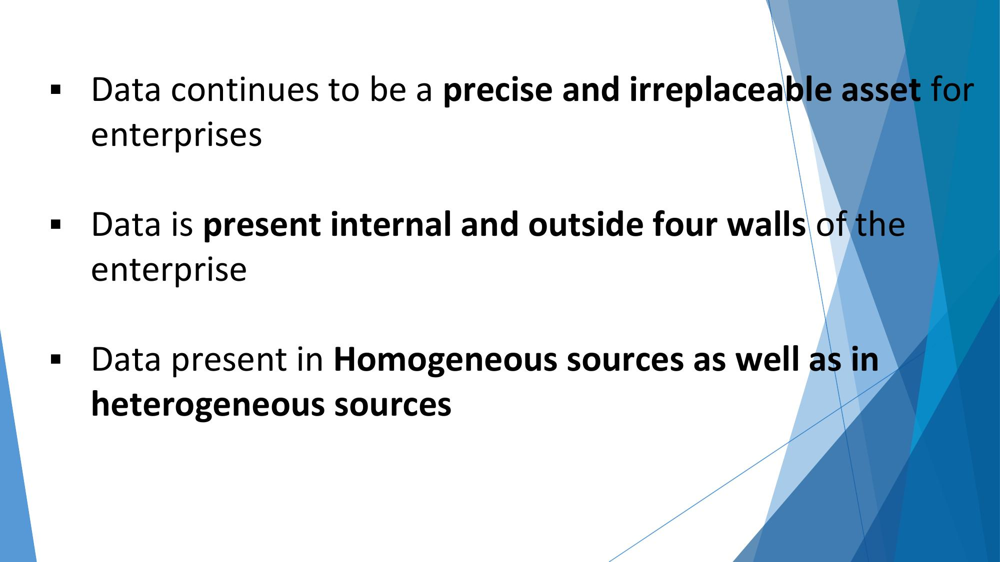
▪ Data continues to be a precise and irreplaceable asset for
enterprises
▪ Data is present internal and outside four walls of the
enterprise
▪ Data present in Homogeneous sources as well as in
heterogeneous sources
Source Page 3
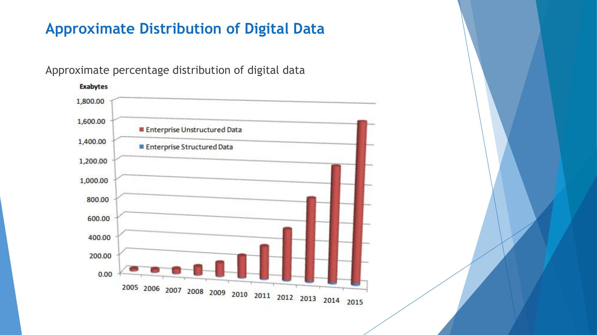
Approximate Distribution of Digital Data
Approximate percentage distribution of digital data
Source Page 4
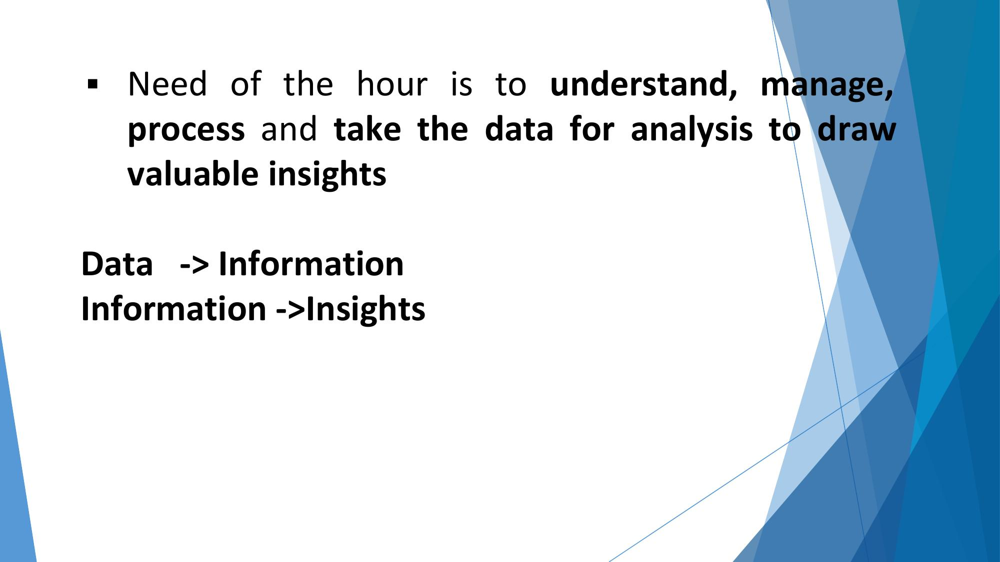
▪ Need of the hour is to understand, manage,
process and take the data for analysis to draw
valuable insights
Data -> Information
Information ->Insights
Source Page 5
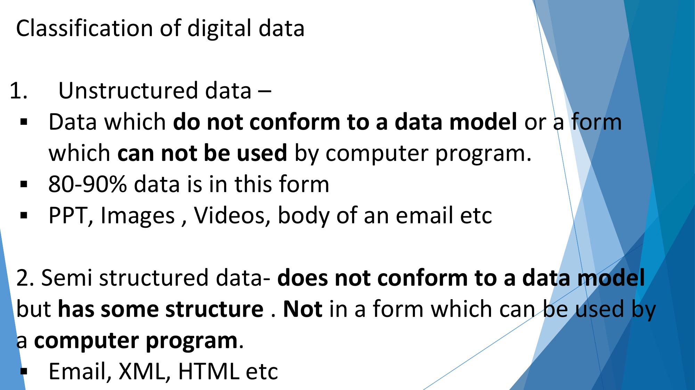
Classification of digital data
1. Unstructured data –
▪ Data which do not conform to a data model or a form
which can not be used by computer program.
▪ 80-90% data is in this form
▪ PPT, Images , Videos, body of an email etc
2. Semi structured data- does not conform to a data model
but has some structure . Not in a form which can be used by
a computer program.
▪ Email, XML, HTML etc
Source Page 6
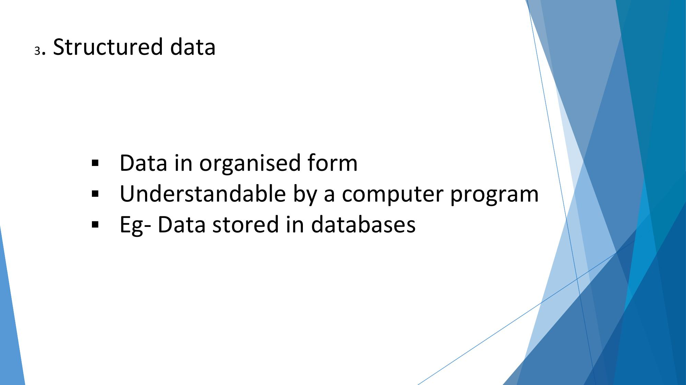
3 . Structured data
▪ Data in organised form
▪ Understandable by a computer program
▪ Eg- Data stored in databases
Source Page 7
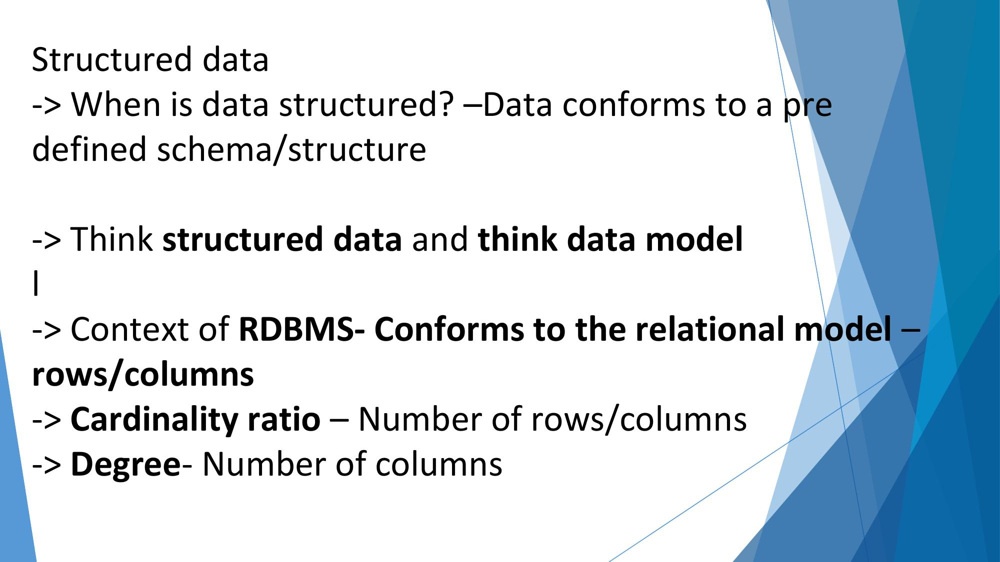
Structured data
-> When is data structured? –Data conforms to a pre
defined schema/structure
-> Think structured data and think data model
l
-> Context of RDBMS- Conforms to the relational model –
rows/columns
-> Cardinality ratio – Number of rows/columns
-> Degree- Number of columns
Source Page 8
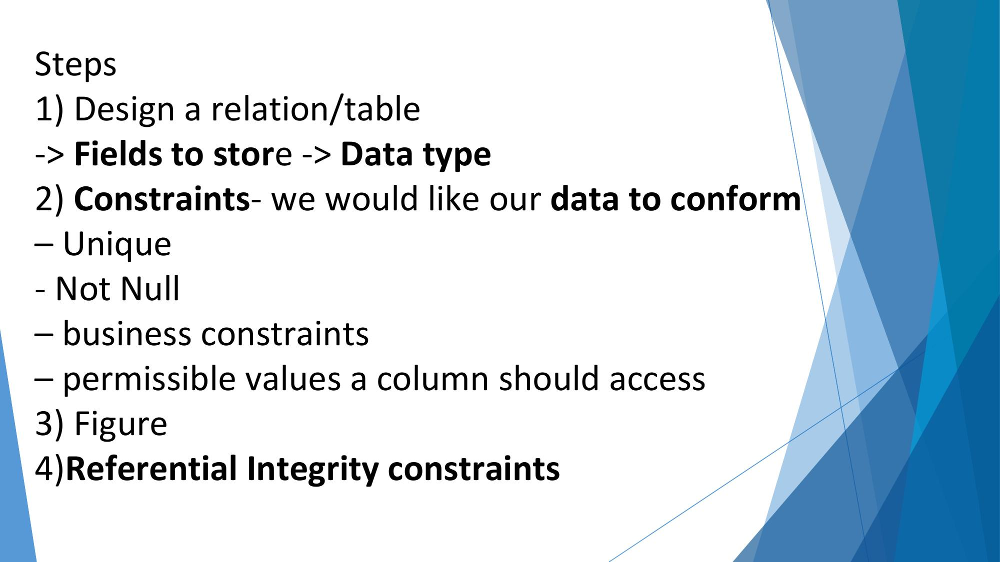
Steps
1) Design a relation/table
-> Fields to store -> Data type
2) Constraints- we would like our data to conform
– Unique
- Not Null
– business constraints
– permissible values a column should access
3) Figure
4)Referential Integrity constraints
Source Page 9
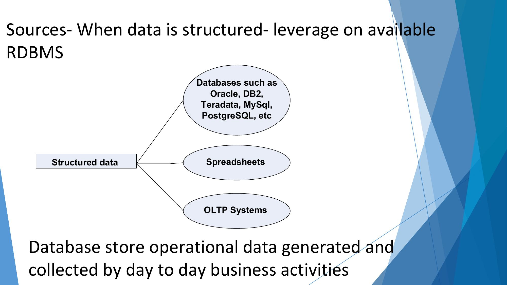
Sources- When data is structured- leverage on available
RDBMS
Databases such as
Oracle, DB2,
Teradata, MySql,
PostgreSQL, etc
Structured data Spreadsheets
OLTP Systems
Database store operational data generated and
collected by day to day business activities
Source Page 10
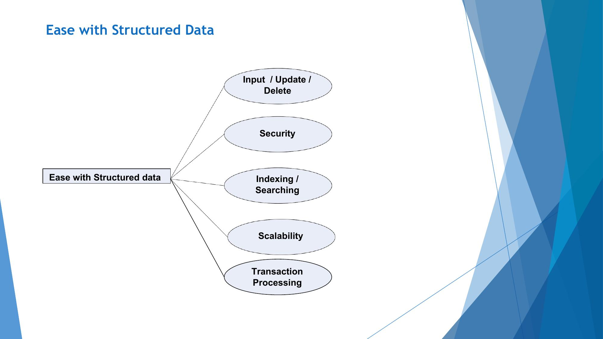
Ease with Structured Data
Input / Update /
Delete
Security
Ease with Structured data Indexing /
Searching
Scalability
Transaction
Processing
Source Page 11
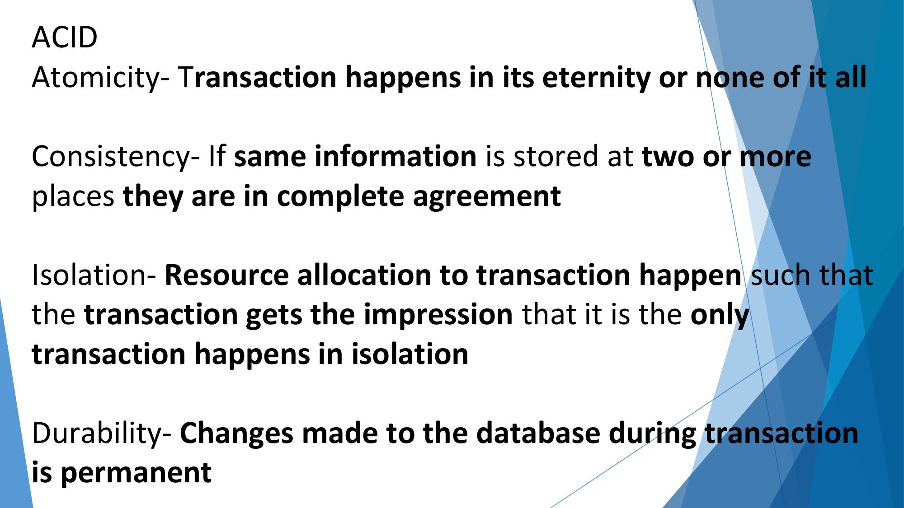
ACID
Atomicity- Transaction happens in its eternity or none of it all
Consistency- If same information is stored at two or more
places they are in complete agreement
Isolation- Resource allocation to transaction happen such that
the transaction gets the impression that it is the only
transaction happens in isolation
Durability- Changes made to the database during transaction
is permanent
Source Page 12
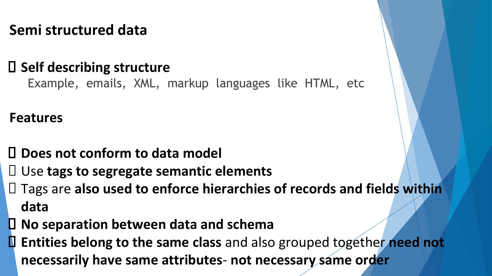
Semi structured data
Self describing structure
Example, emails, XML, markup languages like HTML, etc
Features
Does not conform to data model
Use tags to segregate semantic elements
Tags are also used to enforce hierarchies of records and fields within
data
No separation between data and schema
Entities belong to the same class and also grouped together need not
necessarily have same attributes- not necessary same order
Source Page 13
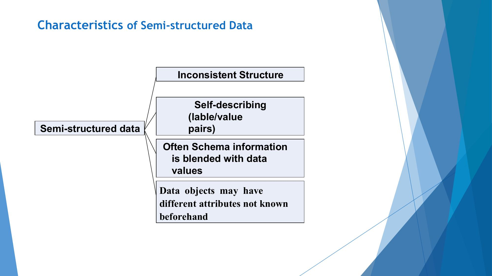
Characteristics of Semi-structured Data
Inconsistent Structure
Self-describing
(lable/value
Semi-structured data pairs)
Often Schema information
is blended with data
values
Data objects may have
different attributes not known
beforehand
Source Page 14
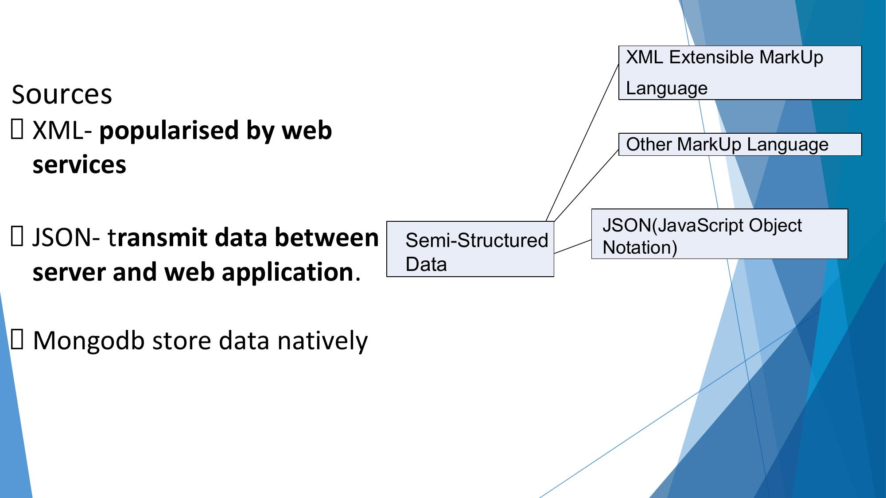
XML Extensible MarkUp
Sources Language
XML- popularised by web Other MarkUp Language
services
JSON(JavaScript Object
JSON- transmit data between Semi-Structured Notation)
server and web application. Data
Mongodb store data natively
Source Page 15
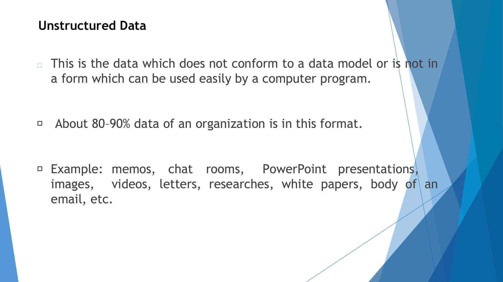
Unstructured Data
This is the data which does not conform to a data model or is not in
a form which can be used easily by a computer program.
About 80–90% data of an organization is in this format.
Example: memos, chat rooms, PowerPoint presentations,
images, videos, letters, researches, white papers, body of an
email, etc.
Source Page 16
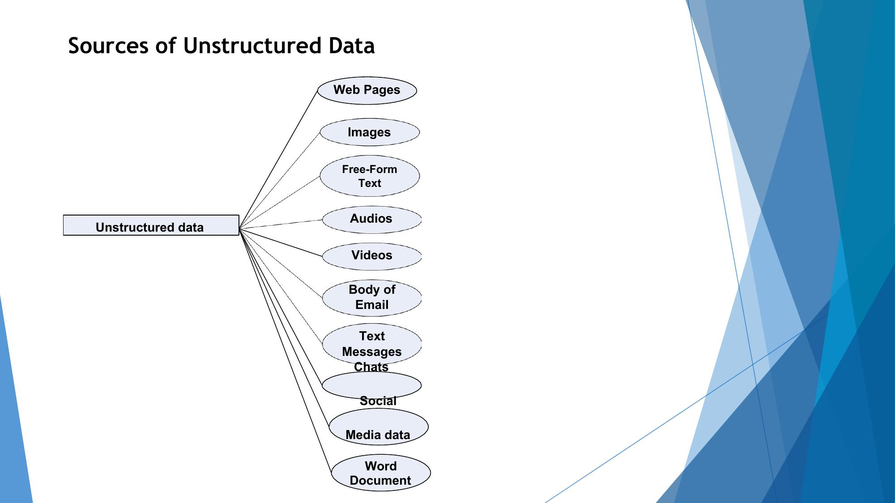
Sources of Unstructured Data
Web Pages
Images
Free-Form
Text
Audios
Unstructured data
Videos
Body of
Email
Text
Messages
Chats
Social
Media data
Word
Document
Source Page 17
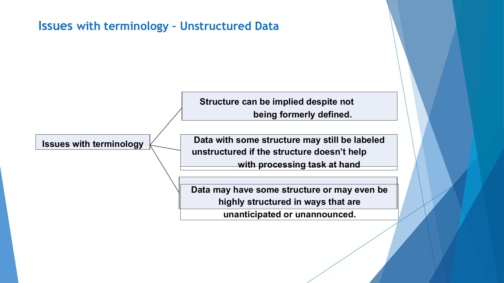
Issues with terminology – Unstructured Data
Structure can be implied despite not
being formerly defined.
Issues with terminology Data with some structure may still be labeled
unstructured if the structure doesn’t help
with processing task at hand
Data may have some structure or may even be
highly structured in ways that are
unanticipated or unannounced.
Source Page 18
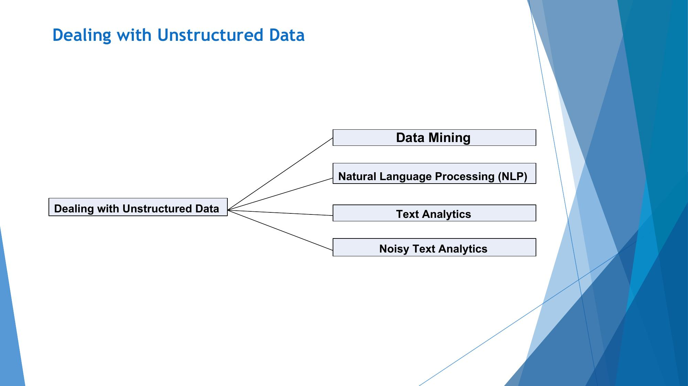
Dealing with Unstructured Data
Data Mining
Natural Language Processing (NLP)
Dealing with Unstructured Data
Text Analytics
Noisy Text Analytics
Source Page 19
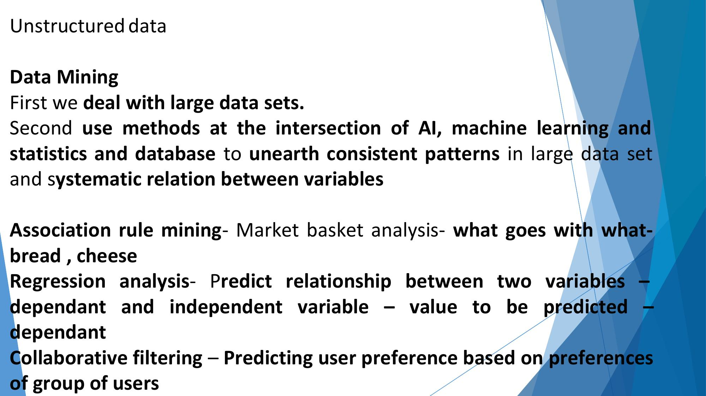
Unstructured data
Data Mining
First we deal with large data sets.
Second use methods at the intersection of AI, machine learning and
statistics and database to unearth consistent patterns in large data set
and systematic relation between variables
Association rule mining- Market basket analysis- what goes with what-
bread , cheese
Regression analysis- Predict relationship between two variables –
dependant and independent variable – value to be predicted –
dependant
Collaborative filtering – Predicting user preference based on preferences
of group of users
Source Page 20
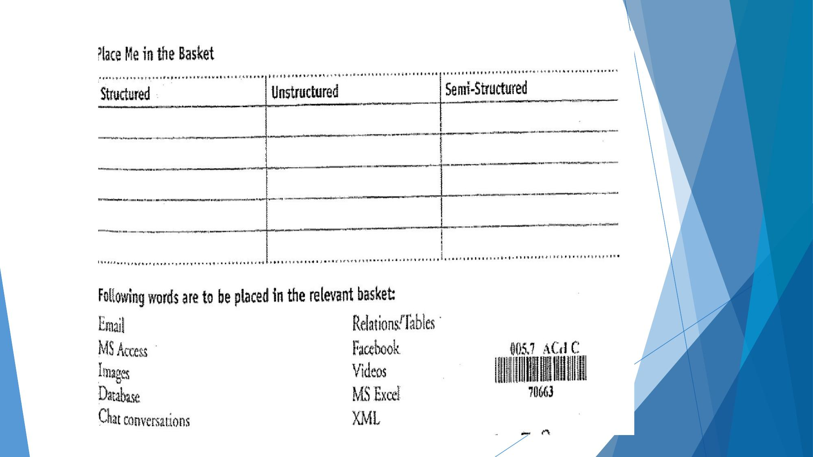
What is Big Data?
Big data is defined as collections of datasets whose
volume, velocity or variety is so large that it is difficult to
store, manage, process and analyze the data using
traditional databases and data processing tools.
In the recent years, there has been an exponential growth
in the both structured and unstructured data generated by
information technology, industrial, healthcare, Internet of
Things, and other systems
Source Page 21
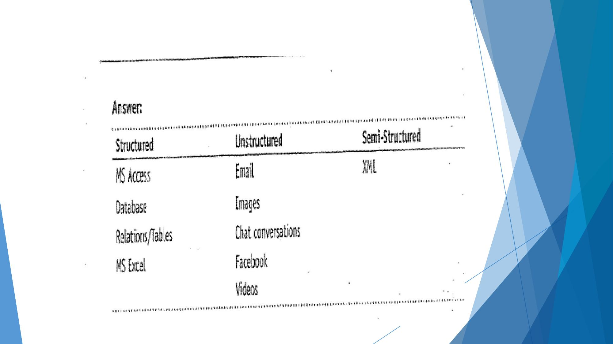
Definition of Big Data
Big data refers to
• datasets whose size is typically beyond the storage capacity
of and also
• complex for traditional database software tools
Big data is anything beyond the human & technical
infrastructure needed to support storage, processing and
analysis.
Source Page 22
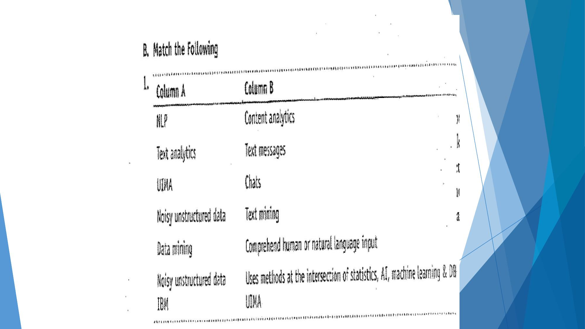
Big data is
• high volume, high-velocity and high-variety information
assets that
• demand cost effective, innovative forms of information
processing
• for enhanced insight and decision making.
Source Page 23
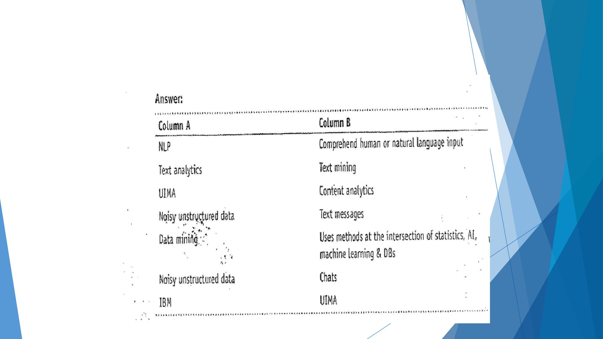
Part I of the definition:
talks about voluminous data that may have great
variety will require a good speed/pace for
storage, preparation, processing and analysis.
Part II of the definition:
talks about embracing new techniques and
technologies to capture (ingest), store, process,
persist, integrate and visualize the high-volume,
high-velocity, and high-variety data.
Source Page 24
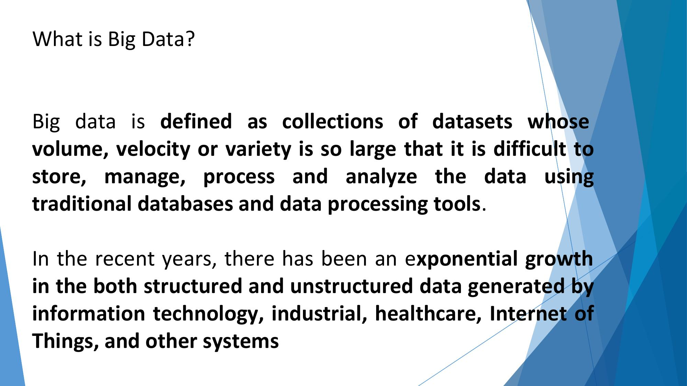
Part III of the definition:
talks about deriving deeper, richer and
meaningful insights and then using these
insights to make faster and better
decisions to gain business value and thus a
competitive edge.
Data —> Information —> Actionable
intelligence —> Better decisions
—>Enhanced business value
Source Page 25
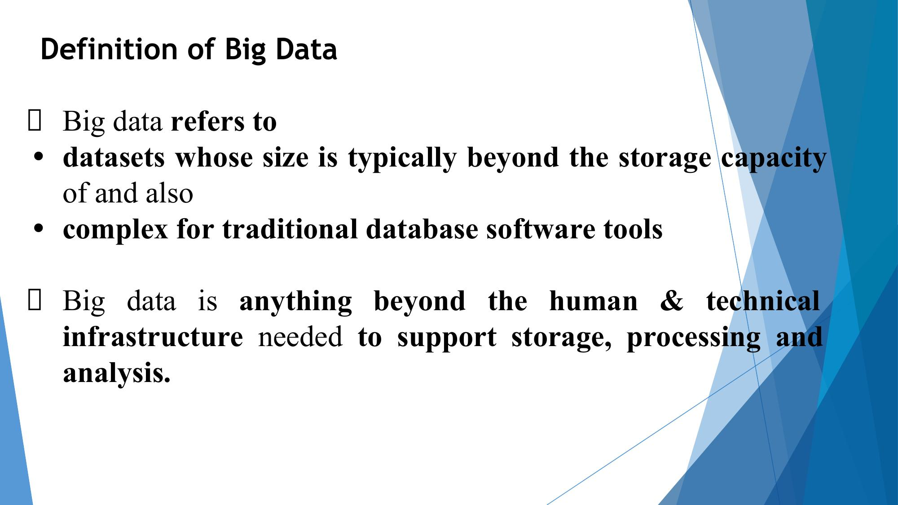
Below are some key pieces of data from the report:
• Facebook users share nearly 4.16 million pieces of content
• Twitter users send nearly 300,000 tweets
• Instagram users like nearly 1.73 million photos
• YouTube users upload 300 hours of new video content
• Apple users download nearly 51,000 apps
• Skype users make nearly 110,000 new calls
• Amazon receives 4300 new visitors
• Uber passengers take 694 rides
• Netflix subscribers stream nearly 77,000 hours of video
Source Page 26
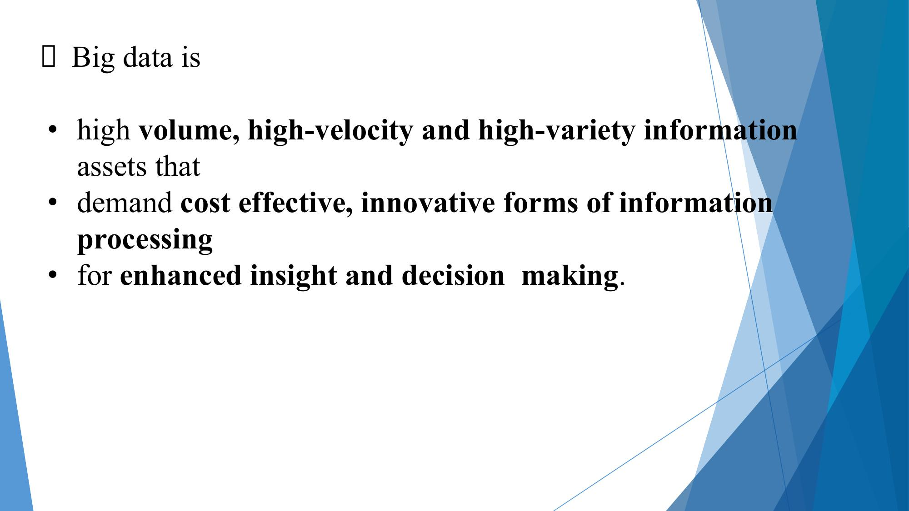
Big Data analytics deals with collection, storage, processing and analysis of this
massive scale data.
Specialized tools and frameworks are required for big data analysis when:
(1) the volume of data involved is so large that it is difficult to store, process
and analyze data on a single machine
(2) the velocity of data is very high and the data needs to be analyzed in
real-time,
(3) there is variety of data involved, which can be structured, unstructured or
semi-structured, and is collected from multiple data sources,
(4) various types of analytics need to be performed to extract value from the
data such as descriptive, diagnostic, predictive and prescriptive analytics
Source Page 27
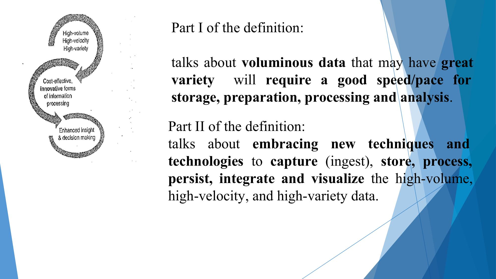
Big data analytics is enabled by several technologies such as cloud computing,
distributed and parallel processing frameworks, non-relational databases,
in-memory computing, for instance.
Some examples of big data are listed as follows:
• Data generated by social networks including text, images, audio and video
data
• Click-stream data generated by web applications such as e-Commerce to
analyze user behavior
• Machine sensor data collected from sensors embedded in industrial and
energy systems
for monitoring their health and detecting failures
• Healthcare data collected in electronic health record (EHR) systems
• Logs generated by web applications
• Stock markets data
Source Page 28
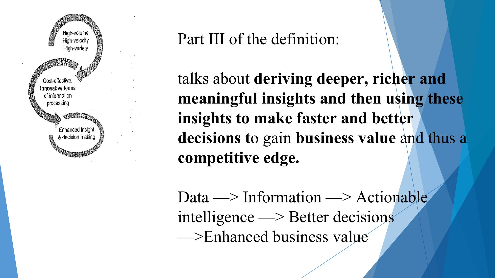
Characteristics of Big Data
Volume
Big data is a form of data whose volume is so large that it would not fit on a
single machine therefore specialized tools and frameworks are required to
store process and analyze such data.
The volumes of data generated by modern IT, industrial, healthcare, Internet
of Things, and other systems is growing exponentially driven by the lowering
costs of data storage.
Though there is no fixed threshold for the volume of data to be considered
as big data, however, typically, the term big data is used for massive scale
data that is difficult to store, manage and process using traditional
databases and data processing architectures.
Source Page 29
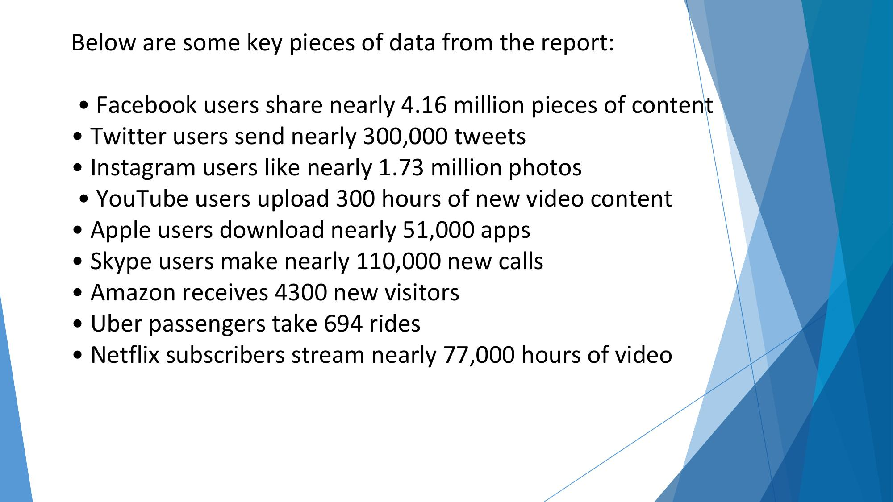
What is Big Data?
Volume
Bits-Bytes-Kilobytes-Megabytes-Gigabytes-Terabytes-Petabytes-Exabytes-Zettabytes-Yottabytes
Source Page 30
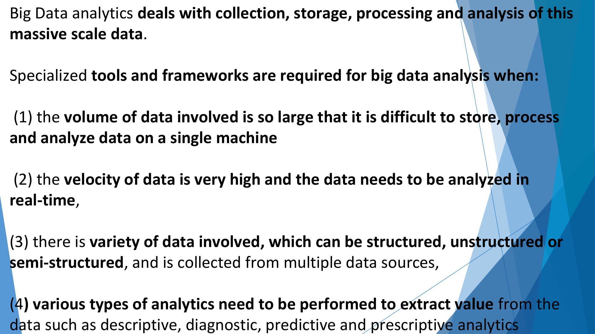
A Mountain of Data
1 Kilobyte (KB) = 1000 bytes
1 Megabyte (MB) = 1,000,000 bytes
1 Gigabyte (GB) = 1,000,000,000 bytes
1 Terabyte (TB) = 1,000,000,000,000 bytes
1 Petabyte (PB) = 1,000,000,000,000,000 bytes
1 Exabyte (EB) = 1,000,000,000,000,000,000 bytes
1 Zettabyte (ZB) = 1,000,000,000,000,000,000,000 bytes
1 Yottabyte (YB) = 1,000,000,000,000,000,000,000,000 bytes
Source Page 31
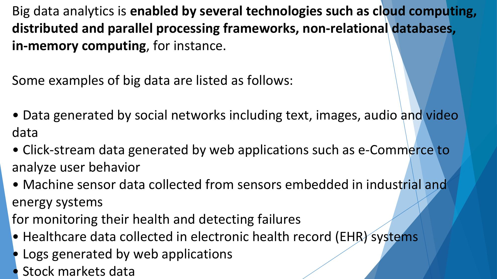
Where does this data get generated
-Multitude of sources
- XLS, DOC, Youtube videos, Chat conversations, customer feedback CCTV
coverage
1. Typical Internal Data Sources- Data present within an organization firewall
- Data Storage- File systems, SQL, NoSQL..
- Archives- Achieves of scanned documents , paper archives, customer
correspondence records, patient’s health records, Student admission records and so on.
2. External Data Sources- Data residing an organization firewall
- Public Web: Wikepedia, weather, regulatory, census
Source Page 32
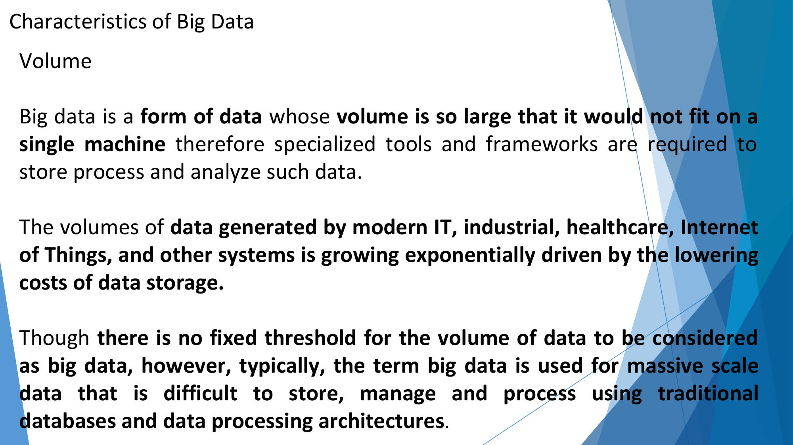
3. Both internal and external data sources
Source Page 33
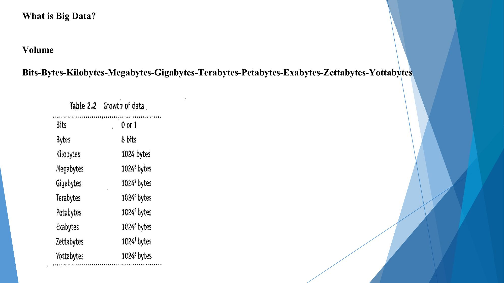
Velocity
Velocity of data refers to how fast the data is generated.
Data generated by certain sources can arrive at very high velocities, for example,
social media data or sensor data.
Velocity is another important characteristic of big data and the primary reason
for the exponential growth of data.
High velocity of data results in the volume of data accumulated to become very
large, in short span of time.
Some applications can have strict deadlines for data analysis (such as trading or
online fraud detection) and the data needs to be analyzed in real-time.
Source Page 34
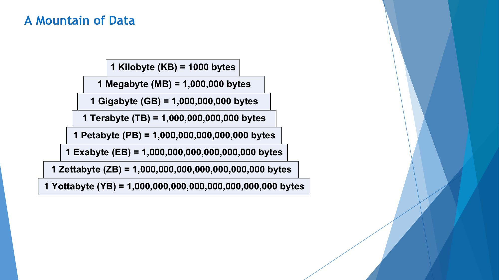
Velocit
y
Batch → Periodic → Near real time → Real-time
processing
Source Page 35
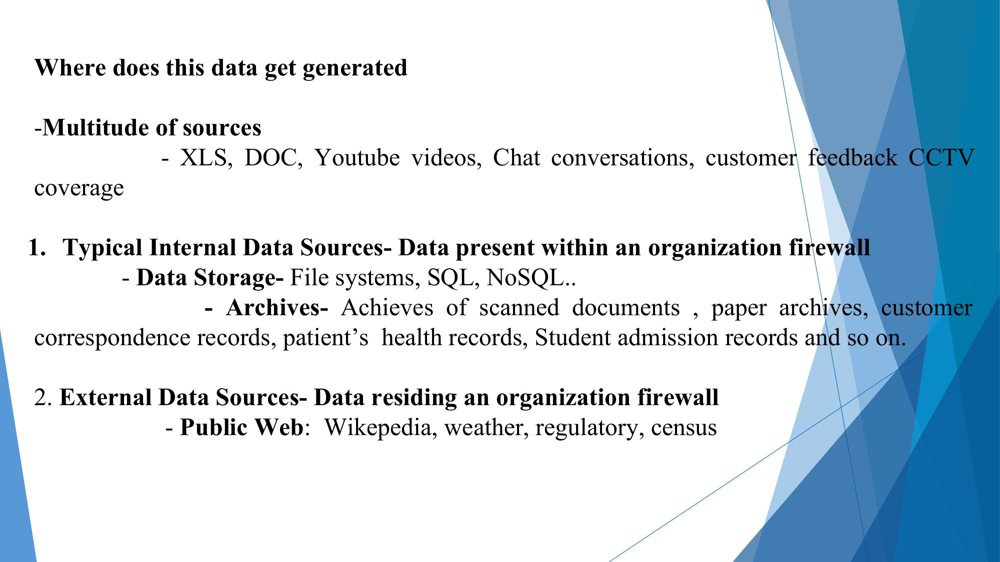
Variety
Variety refers to the forms of the data.
Big data comes in different forms such as structured, unstructured or
semi-structured, including text data, image, audio, video and sensor data.
Big data systems need to be flexible enough to handle such variety of data
Source Page 36
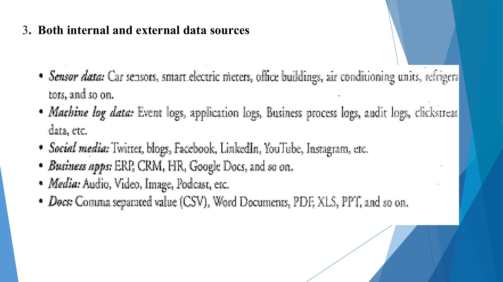
Veracity
Veracity refers to how accurate is the data.
To extract value from the data, the data needs to be cleaned to remove
noise.
Data-driven applications can reap the benefits of big data only when the data
is meaningful and accurate.
Therefore, cleansing of data is important so that incorrect and faulty data can
be filtered out.
Source Page 37
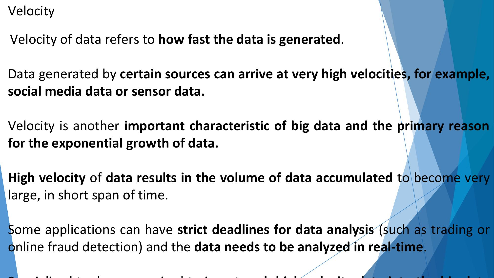
Value
Value of data refers to the usefulness of data for the intended purpose.
The end goal of any big data analytics system is to extract value from
the data.
The value of the data is also related to the veracity or accuracy of the
data.
For some applications value also depends on how fast we are able to
process the data.
Source Page 38
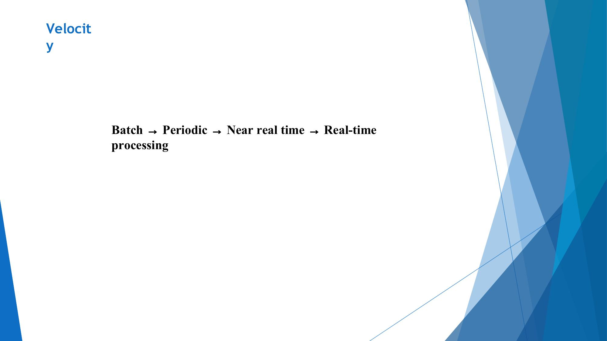
Analytics is a broad term that encompasses the processes,
technologies, frameworks and algorithms to extract meaningful
insights from data.
Analytics is this process of extracting and creating information from
raw data by filtering, processing, categorizing, condensing and
contextualizing the data.
This information obtained is then organized and structured to infer
knowledge about the system and/or its users, its environment, and
its operations and progress towards its objectives, thus making the
systems smarter and more efficient.
The choice of the technologies, algorithms, and
frameworks for analytics is driven by the analytics
Source Page 39
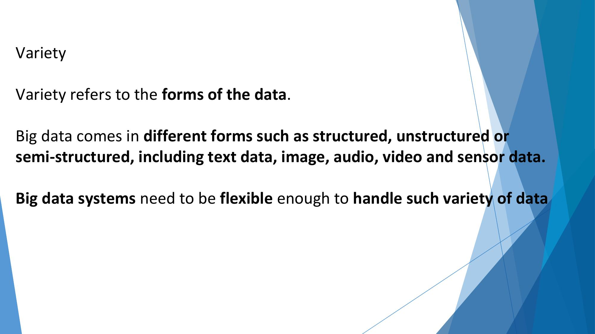
The goals of the analytics task may be:
(1) to predict something (for example whether a transaction is a
fraud or not, whether it will rain on a particular day, or whether a
tumor is benign or malignant),
(2) to find patterns in the data (for example, finding the top 10
coldest days in the year, finding which pages are visited the most
on a particular website, or finding the most searched celebrity in a
particular year),
(3) finding relationships in the data (for example, finding similar
news articles, finding similar patients in an electronic health record
system
Source Page 40
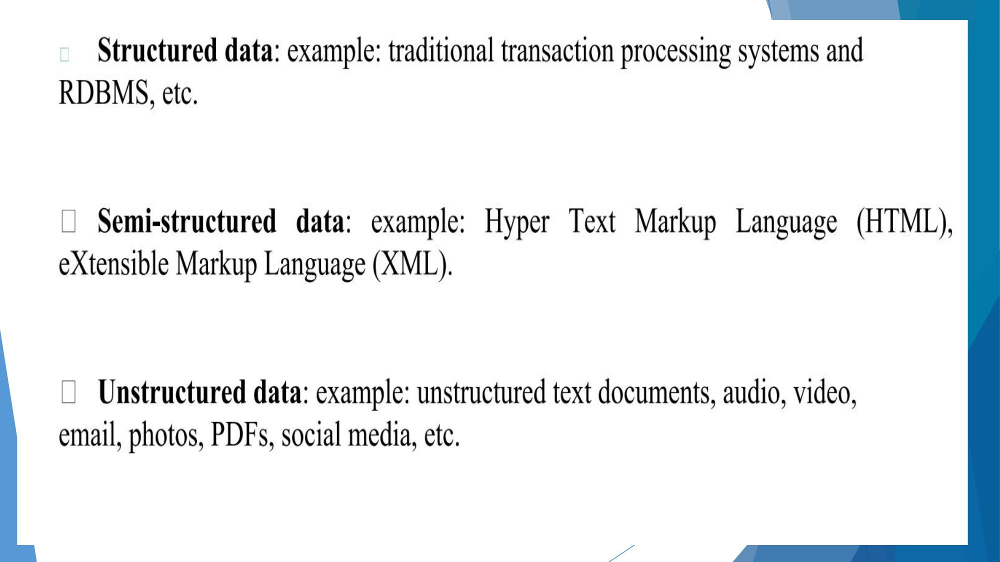
The National Research Council [1] has done a characterization of
computational tasks for massive data analysis (called the seven
“giants").
These computational tasks include:
(1) Basis Statistics, (2) Generalized N-Body Problems, (3) Linear
Algebraic Computations, (4) Graph-Theoretic Computations, (5)
Optimization,
(6) Integration and (7) Alignment Problems.
This characterization of computational tasks aims to provide a taxonomy
of tasks that have proved to be useful in data analysis and grouping
them roughly according to mathematical structure and computational
strategy.
Source Page 41
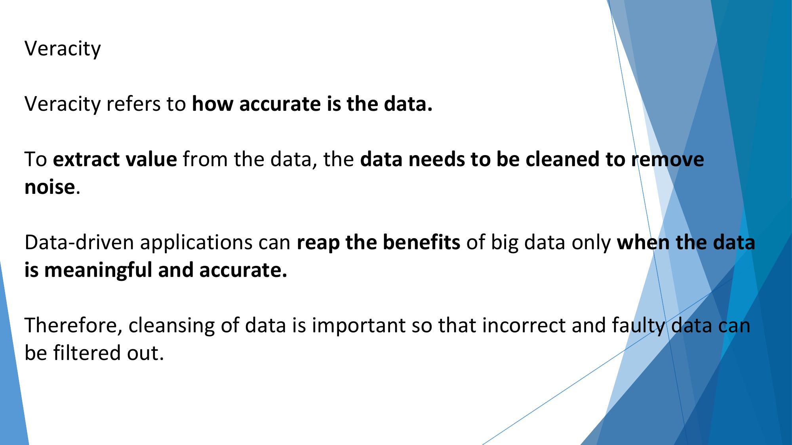
Descriptive Analytics
Descriptive analytics comprises analyzing past data to present it in a
summarized form which can be easily interpreted. Descriptive analytics
aims to answer –
What has happened?
A major portion of analytics done today is descriptive analytics through
use of statistics functions such as counts, maximum, minimum, mean,
topN,percentage, for instance.
These statistics help in describing patterns in the data and present the
data in a summarized form.
For example, computing the total number of likes for a particular post,
computing the average monthly rainfall or finding the average number
Source Page 42
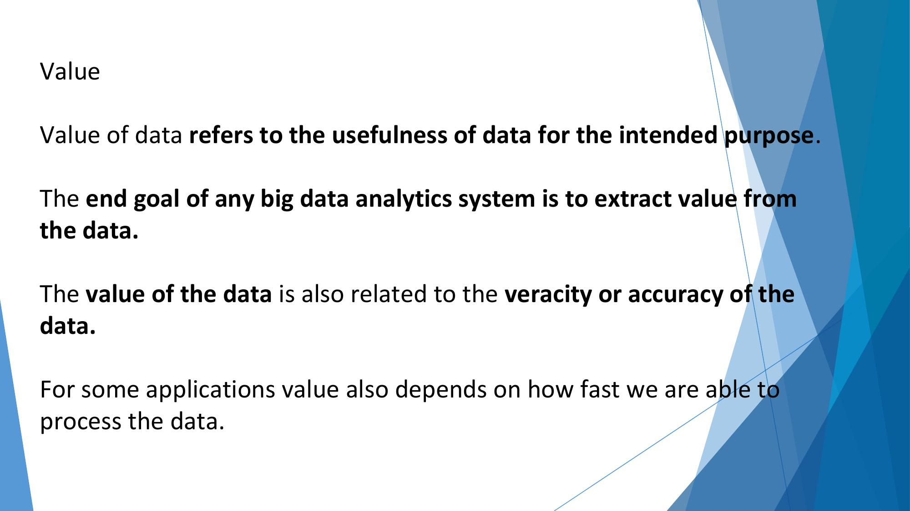
Diagnostic Analytics
Diagnostic analytics comprises analysis of past data to diagnose the
reasons as to why certain events happened.
Diagnostic analytics aims to answer - Why did it happen?
Let us consider an example of a system that collects and analyzes sensor
data from machines for monitoring their health and predicting failures.
While descriptive analytics can be useful for summarizing the data by
computing various statistics (such as mean, minimum, maximum,
variance, or top-N), diagnostic analytics can provide more insights into
why certain a fault has occurred based on the patterns in the sensor
data for previous faults.
Source Page 43
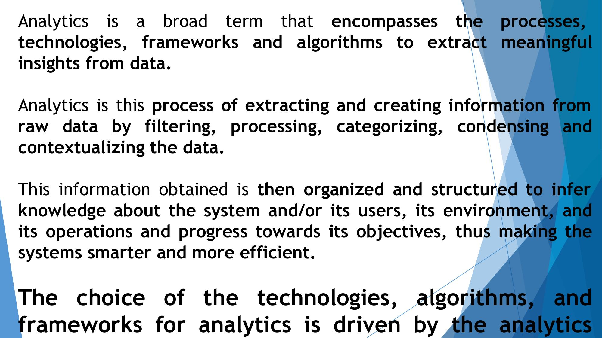
Predictive Analytics
Predictive analytics comprises predicting the occurrence of an event or
the likely outcome of an event or forecasting the future values using
prediction models.
Predictive analytics aims to answer - What is likely to happen?
For example, predictive analytics can be used for predicting when a
fault will occur in a machine, predicting whether a tumor is benign or
malignant, predicting the occurrence of natural emergency (events
such as forest fires or river floods) or forecasting the pollution levels.
Predictive Analytics is done using predictive models which are trained by
existing data. These models learn patterns and trends from the existing
data and predict the occurrence of an event
Source Page 44
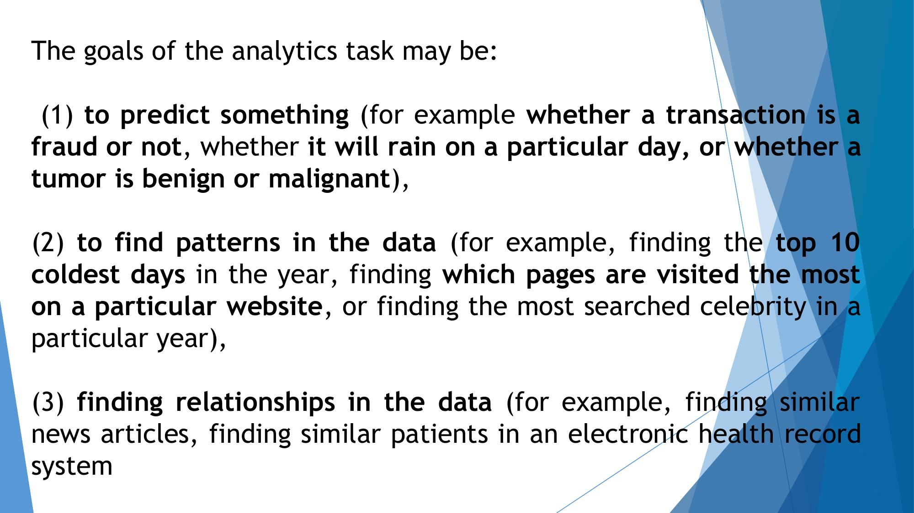
Prescriptive Analytics
While predictive analytics uses prediction models to predict the
likely outcome of an event, prescriptive analytics uses multiple
prediction models to predict various outcomes and the best
course of action for each outcome.
Prescriptive analytics aims to answer - What can we do to make
it happen?
Prescriptive Analytics can predict the possible outcomes based
on the current choice of actions.
Prescriptive analytics can be used to prescribe the best
medicine for treatment of a patient based on the outcomes of
various medicines for similar patients.
Source Page 45
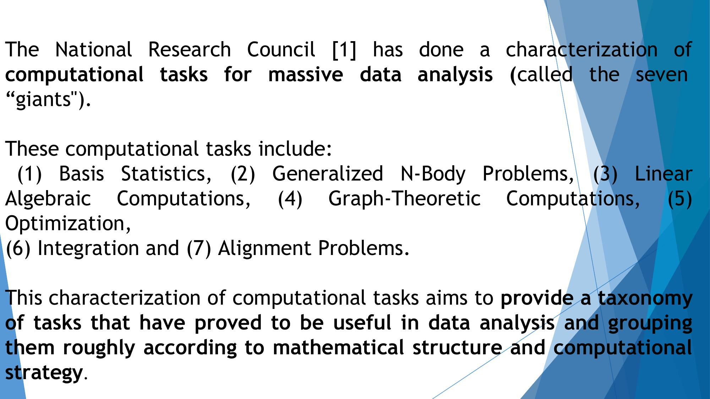
Another example of prescriptive analytics would be to suggest the
best mobile data plan for a customer based on the customer’s
browsing patterns
Source Page 46
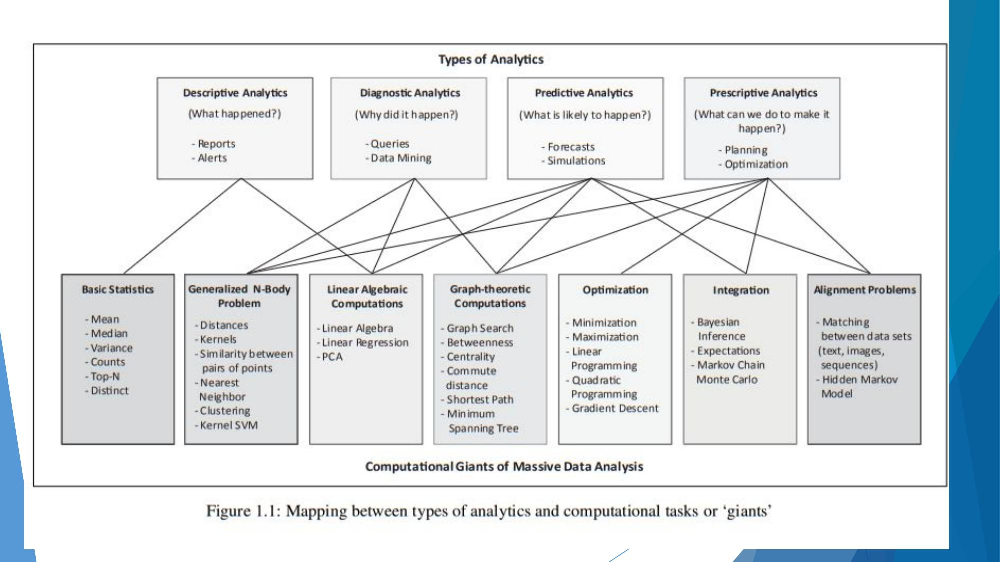
Domain Specific Examples of Big Data
The applications of big data span a wide range of domains including (but not
limited to) homes, cities, environment, energy systems, retail, logistics, industry,
agriculture, Internet of Things, and healthcare.
Various applications of big data for each of these domains are:
Web
• Web Analytics: Web analytics deals with collection and analysis of data on
the user visits on websites and cloud applications.
Analysis of this data can give insights about the user engagement and tracking
the performance of online advertisement campaigns.
For collecting data on user visits, two approaches are used.
Source Page 47
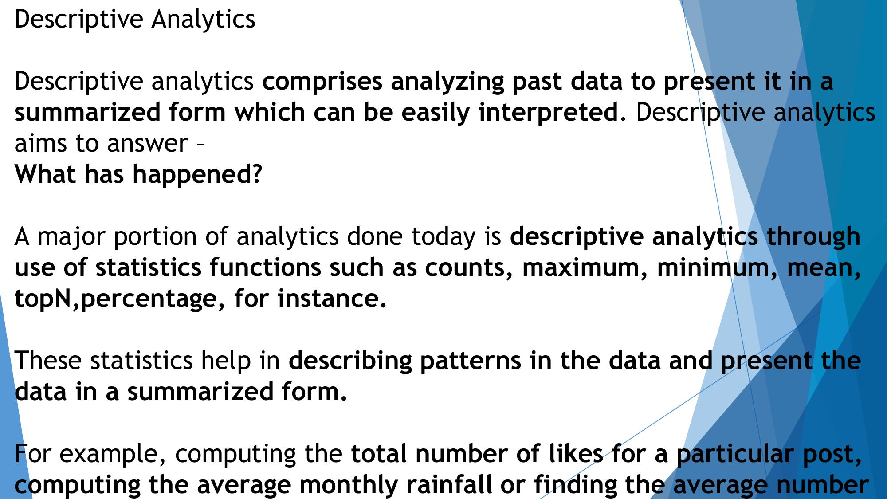
In the first approach, user visits are logged on the web server which collects data
such as the date and time of visit, resource requested, user’s IP address, HTTP
status code, for instance.
The second approach, called page tagging, uses a JavaScript which is embedded
in the web page.
The benefit of the page tagging approach is that it facilitates real-time data
collection and analysis.
This approach allows third party services, which do not have access to the web
server (serving the website) to collect and process the data.
These specialized analytics service providers (such as Google Analytics) are offer
advanced analytics and summarized reports. user sessions, page visits, top
entry and exit pages, bounce rate, most visited page
Source Page 48
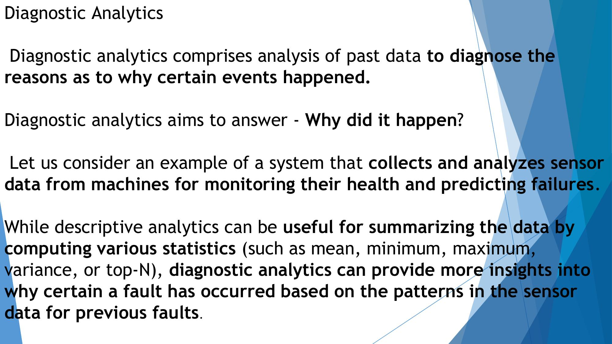
Performance Monitoring: Multi-tier web and cloud applications such as such as
• e-Commerce,
• Business-to-Business,
• Health care, Banking and Financial,
• Retail and Social Networking applications
can experience rapid changes in their workloads.
Provisioning and capacity planning is a challenging task for complex multi-tier
applications since each class of applications has different deployment
configurations with web servers, application servers and database servers.
Source Page 49
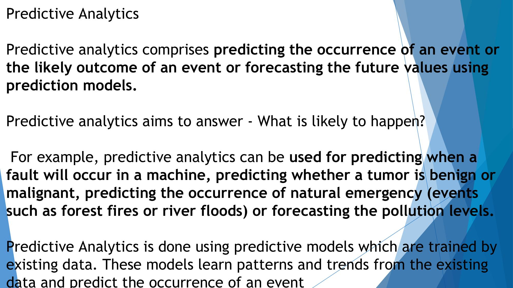
For performance monitoring, various types of tests can be performed such as
• load tests (which evaluate the performance of the system with multiple users
and workload levels )
• Stress test etc
Big data systems can be used to analyze the data generated by such
tests, to predict application performance under heavy workloads
and identify bottlenecks in the system so that failures can be
prevented.
Source Page 50
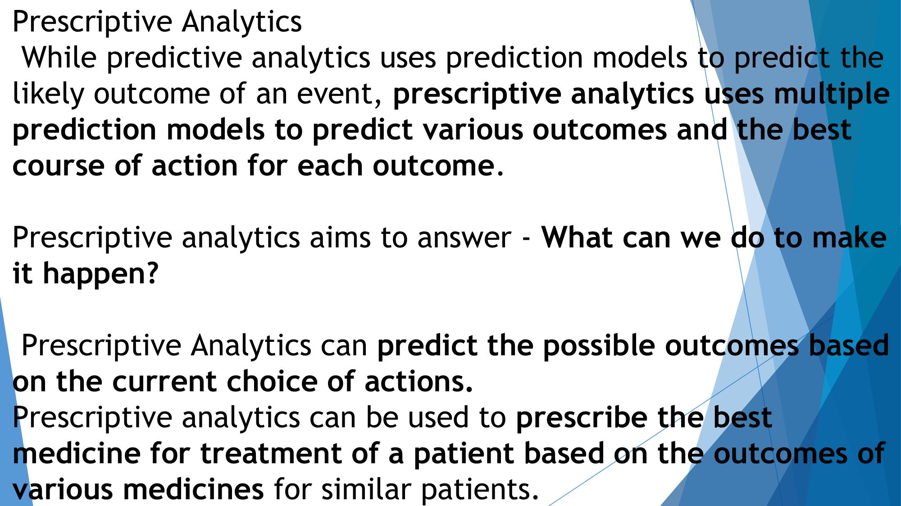
• Ad Targeting & Analytics:
Search and display advertisements are the two most widely used approaches
for Internet advertising.
In search advertising, users are displayed advertisements ("ads"), along with
the search results, as they search for specific keywords on a search engine.
Advertisers can create ads using the advertising networks provided by the
search engines or social media networks.
These ads are setup for specific keywords which are related to the product or
service being advertised.
Users searching for these keywords are shown ads along with the search
results.
Source Page 51
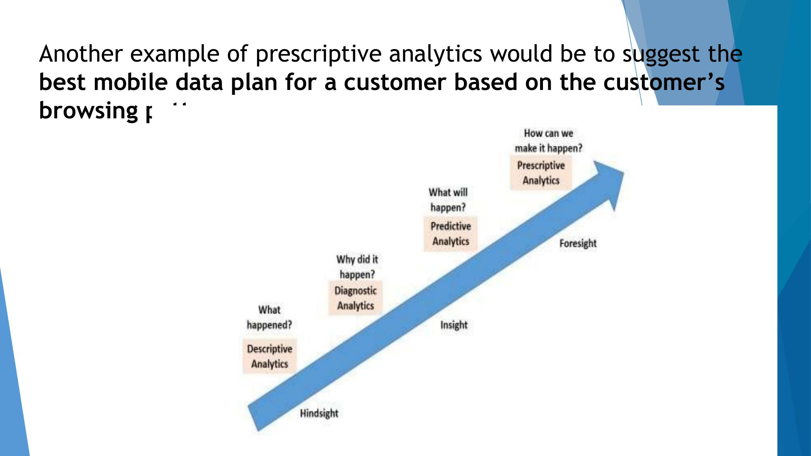
Display advertising, is another form of Internet advertising, in which the ads are
displayed within websites, videos and mobile applications who participate in
the advertising network
The ad-network matches these ads against the content on the website, video or
mobile application and places the ads.
The most commonly used compensation method for Internet ads is
Pay-per-click (PPC), in which the advertisers pay each time a user clicks on an
advertisement.
Advertising networks use big data systems for matching and placing
advertisements and generating advertisement statistics reports.
Source Page 52
• Advertises can use big data tools for tracking the performance of
advertisements, optimizing the bids for pay-per-click advertising, tracking
which keywords link the most to the advertising landing page
• Content Recommendation: Content delivery applications that serve content
(such as music and video streaming applications), collect various types of
data such as user search patterns and browsing history, history of content
consumed, and user ratings.
Such applications can leverage big data systems for recommending new
content to the users based on the user preferences and interests.
Source Page 53
Financial
• Credit Risk Modeling: Banking and Financial institutions use credit risk
modeling to score credit applications and predict if a borrower will default or
not in the future.
Credit risk models are created from the customer data that includes, credit
scores obtained from credit bureaus, credit history, account balance data,
account transactions data and spending patterns of the customer.
Big data systems can help in computing credit risk scores of a large number of
customers on a regular basis.
These frameworks can be used to build credit risk models by analysis of
customer data
Source Page 54
•Fraud Detection: Banking and Financial institutions can leverage big data
systems for detecting frauds such as credit card frauds, money laundering
and insurance claim frauds.
Real-time big data analytics frameworks can help in analyzing data from
disparate sources and label transactions in real-time
Source Page 55
• Healthcare
The healthcare ecosystem consists of numerous entities including healthcare
providers (primary care physicians, specialists, or hospitals), payers
(government, private health insurance companies, employers), pharmaceutical,
device and medical service companies, IT solutions and services firms, and
patients.
The process of provisioning healthcare involves massive healthcare data that
exists in different forms (structured or unstructured), is stored in disparate
data sources (such as relational databases, or file servers) and in many different
formats.
To promote more coordination of care across the multiple providers involved
with patients, their clinical information is increasingly aggregated from diverse
sources into Electronic Health Record (EHR) systems.
Source Page 56
EHRs capture and store information on patient health and provider actions
including individual-level laboratory results, diagnostic, treatment, and
demographic data.
Though the primary use of EHRs is to maintain all medical data for an individual
patient and to provide efficient access to the stored data at the point of care,
EHRs can be the source for valuable aggregated information about overall
patient populations.
Big data systems can be used for data collection from different stakeholders
(patients, doctors, payers, physicians, specialists, etc) and disparate data sources.
Big data analytics systems allow massive scale clinical data analytics and
facilitate development of more efficient healthcare applications, improve the
accuracy of predictions and help in timely decision making
Source Page 57
• Internet of Things
Internet of Things (IoT) refers to things that have unique identities and are
connected to the Internet.
The "Things" in IoT are the devices which can perform remote sensing, actuating
and monitoring.
IoT devices can exchange data with other connected devices and applications
(directly or indirectly), or collect data from other devices and process the data.
IoT systems can leverage big data technologies for storage and analysis of data.
IoT applications that can benefit from big data system
Source Page 58
• Intrusion Detection
• Smart Parking
• Smart Roads
• Structural Health Monitoring
• Smart Irrigation
Source Page 59
Intrusion Detection: Intrusion detection systems use security cameras and
sensors (such as PIR sensors and door sensors) to detect intrusions and raise
alerts.
Smart Parkings: Smart parkings make the search for parking space easier and
convenient for drivers. Smart parkings are powered by IoT systems that detect
the number of empty parking slots and send the information over the
Internet to smart parking application back-ends
Smart Roads: Smart roads equipped with sensors can provide information on
driving conditions, travel time estimates and alerts in case of poor driving
conditions, traffic congestions and accidents
.
Source Page 60
Structural Health Monitoring: Structural Health Monitoring systems use a
network of sensors to monitor the vibration levels in the structures such as
bridges and buildings. The data collected from these sensors is analyzed to
assess the health of the structures
Smart Irrigation: Smart irrigation systems can improve crop yields while
saving water. Smart irrigation systems - use IoT devices with soil moisture
sensors - determine the amount of moisture in the soil and release the flow
of water -when the moisture levels go below a predefined threshold.
Source Page 61
Environment
Environment monitoring systems generate high velocity and high volume data.
Accurate and timely analysis of such data can help in understanding the current
status of the environment and also predicting environmental trends.
Weather Monitoring : Weather monitoring systems can collect data from a
number of sensor attached. This data can then be analyzed and visualized for
monitoring weather and generating weather alerts
Air Pollution Monitoring: Air pollution monitoring systems can monitor emission
of harmful gases (CO2, CO, NO, or NO2) by factories and automobiles using
gaseous and meterological sensor
Source Page 62
Noise Pollution Monitoring: Due to growing urban development, noise levels in
cities have increased and even become alarmingly high in some cities
Urban noise maps can help the policy makers in urban planning and making
policies to control noise levels near residential areas, schools and parks
Forest Fire Detection: There can be different causes of forest fires including
lightening, human negligence, volcanic eruptions and sparks from rock falls
Forest fire detection systems use a number of monitoring nodes deployed at
different locations in a forest.
Source Page 63
River Floods Detection: River flood monitoring system use a number of sensor
nodes that monitor the water level (using ultrasonic sensors) and flow rate
(using the flow velocity sensors).
Big data systems can be used to collect and analyze data from a number of
such sensor nodes and raise alerts when a rapid increase in water level and
flow rate is detected.
Source Page 64
Logistics & Transportation
• Real-time Fleet Tracking: Vehicle fleet tracking systems use GPS
technology to track the locations of the vehicles in real-time.
Big data systems can be used to aggregate and analyze vehicle locations
and routes data for detecting bottlenecks in the supply chain such as
traffic congestions on routes, assignment and generation of alternative
routes
Shipment Monitoring:monitoring the conditions inside containers- food
spoilage
Remote Vehicle Diagnostics: Remote vehicle diagnostic systems can detect
faults in the vehicles or warn of impending faults.
Source Page 65
Route Generation & Scheduling: Modern transportation systems are driven by
data collected from multiple sources which is processed to provide new
services to the stakeholders. such as advanced route guidance, dynamic vehicle
routing, anticipating customer demands for pickup and delivery problem
Hyper-local Delivery: Hyper-local delivery platforms are being increasingly used
by businesses such as restaurants and grocery stores to expand their reach.
These platforms allow customers to order products (such as grocery and food
items) using web and mobile applications and the products are sourced from
local stores
Cab/Taxi Aggregators: On-demand transport technology aggregators (or
cab/taxi aggregators) allow customers to book cabs using web or mobile
applications and the requests are routed to nearest available cabs
Source Page 66
Industry
• Machine Diagnosis & Prognosis: Machine prognosis refers to predicting the
performance of a machine by analyzing the data on the current operating
conditions and the deviations from the normal operating conditions.
Machine diagnosis refers to determining the cause of a machine fault.
Industrial machines have a large number of components that must function
correctly for the machine to perform its operations. Sensors in machines can
monitor the operating conditions
Risk Analysis of Industrial Operations: In many industries, there are strict
requirements on the environment conditions and equipment working conditions
Harmful and toxic gases such as carbon monoxide (CO), nitrogen monoxide (NO),
Nitrogen Dioxide (NO2), for instance, can cause serious health problems. Gas
monitoring systems can help in monitoring the indoor air quality using various gas
Source Page 67
Production Planning and Control: Production planning and control systems
measure various parameters of production processes and control the entire
production process in real-time
Retail
Retailers can use big data systems for boosting sales, increasing profitability
and improving customer satisfaction.
Inventory Management: Inventory management -increasingly important in the
recent years with the growing competition. While over-stocking of products can
result in additional storage expenses and risk -under-stocking can lead to loss
of revenue.
Tags attached to the products allow them to be tracked in real-time so that
the inventory levels can be determined accurately and products which are low
Source Page 68
Customer Recommendations: Big data systems can be used to analyze the
customer data (such as demographic data, shopping history, or customer
feedback) and predict the customer preferences
Store Layout Optimization: Big data systems can help in analyzing the data on
customer shopping patterns and customer feedback to optimize the store
layouts
Forecasting Demand: Due to a large number of products, seasonal variations
in demands and changing trends and customer preferences, retailers find it
difficult to forecast demand and sales volumes. Big data systems can be used
to analyze the customer purchase patterns and predict demand and sale
volumes
Source Page 69
Analytics Type Question Technique Used
Descriptive What happened? Statistics
Diagnostic Why? Data mining, correlation
Predictive What will happen? Prediction, ML
Prescriptive What to do? Optimization
Source Page 70
Analytics Flow Big Data Stack
Data collection Data source layer
Ingestion Kafka / Flume
Storage HDFS / NoSQL
Processing Spark / MapReduce
Querying Spark SQL
Visualization Web dashboards
Source Page 71
Case Study: Weather Data Analysis
Using the big data stack for analysis of weather data
To come up with a selection of the tools and frameworks from the
big data stack that can be used for weather data analysis, let us first
come up with the analytics flow for the application
Source Page 72
Data Collection
Let us assume, we have multiple weather monitoring stations or
end-nodes equipped with temperature, humidity, wind, and
pressure sensors.
To collect and ingest streaming sensor data generated by the
weather monitoring stations, we can use a publish-subscribe
messaging framework to ingest data for real-time analysis within the
Big Data stack and
Source-Sink connector to ingest data into a distributed filesystem
for batch analysis.
Source Page 73
Data Preparation
Since the weather data received from different monitoring stations
can have missing values, use different units and have different
formats, we may need to prepare data for analysis by cleaning,
wrangling, normalizing and filtering the data
Source Page 74
Analysis Types
The choice of the analysis types is driven by the requirements of the
application.
Let us say, we want our weather analysis application
• to aggregate data on various timescales (minute, hourly, daily or
monthly)
• to determine the mean, maximum and minimum readings for
temperature, humidity, wind and pressure.
Source Page 75
to support interactive querying for exploring the data, for example,
queries such as: finding the day with the lowest temperature in each
month of a year, finding the top-10 most wet days in the year, for
instance.
These type of analysis come under the basic statistics category.
Next, we also want the application to make predictions of certain
weather events, for example, predict the occurrence of fog or haze. For
such an analysis, we would require a classification model.
Additionally, if we want to predict values (such as the amount of
rainfall), we would require a regression model
Source Page 76
Analysis Modes
Based on the analysis types determined the previous step, we
know that the analysis modes required for the application will be
batch, real-time and interactive.
Visualizations
The front end application for visualizing the analysis results would
be dynamic and interactive.
Source Page 77
Mapping Analysis Flow to Big Data Stack
Now that we have the analytics flow for the application, let us map the selections at each step of the flow to the big data
stack
Source Page 78
Figure shows a subset of the components of the big data stack based
on the analytics flow.
To collect and ingest streaming sensor data generated by the
weather monitoring stations, we can use a publish-subscribe
messaging framework such as Apache Kafka (for real-time analysis
within the Big Data stack).
Each weather station publishes the sensor data to Kafka
Real-time analysis frameworks such as Storm and Spark Streaming
can receive data from Kafka for processing
Source Page 79
For batch analysis, we can use a source-sink connector such as Flume
to move the data to HDFS.
Once the data is in HDFS, we can use batch processing frameworks
such as Hadoop-MapReduce
While the batch and real-time processing frameworks are useful
when the analysis requirements and goals are known upfront,
interactive querying tools can be useful for exploring the data.
Source Page 80
We can use interactive querying framework such as Spark SQL,
which can query the data in HDFS for interactive queries.
For presenting the results of batch and real-time analysis, a
NoSQL database such as DynamoDB can be used as a serving
database.
For developing web applications and displaying the analysis
results we can use a web framework such as Django.
Class Notebook Source
Unit 2
Full text extracted from unit-2_bda.pdf.
73 pages
30,921 extracted characters
Source Page 1
Big Data
And
Analytics
Seema Acharya
Subhashini Chellappan
Big Data and Analytics by Seema Acharya and Subhashini
Chellappan
Source Page 2
Chapter 6
Introduction to MongoDB
Big Data and Analytics by Seema Acharya and Subhashini
Chellappan
Source Page 3
Learning Objectives and Learning Outcomes
Learning Objectives Learning Outcomes
Introduction to MongoDB
1. To study the features of MongoDB. a) To comprehend the reasons
behind the popularity of NoSQL
2. To learn how to perform database.
CRUD operations.
b) To be able to perform CRUD
3. To study aggregation. operations.
4. To study the c) To comprehend
MapReduce Framework. MapReduce framework.
5. To import from and export to d) To understand the aggregation.
CSV format.
e) To be able to successfully
import from and export to
CSV.
Big Data and Analytics by Seema Acharya and Subhashini
Chellappan
Source Page 4
Session Plan
Lecture time 90 to 120 minutes
Q/A 15 minutes
Big Data and Analytics by Seema Acharya and Subhashini
Chellappan
Source Page 5
Agenda
❑ NoSQL: Types of NoSQL databases
❑ CAP Theorem
❑ Terms used in RDBMS and MongoDB
❑ MongoDB Query Language: CRUD
❑ Finding documents based on search criteria
❑ Dealing with Null values
❑ Count, Limit, Sort Skip, Aggregate Functions
Big Data and Analytics by Seema Acharya and Subhashini
Chellappan
Source Page 6
MongoDB– An
Introduction
Big Data and Analytics by Seema Acharya and Subhashini
Chellappan
Source Page 7
Types of NoSQL
Key value data Column-oriented Document data Graph data
store data store store store
• Riak • Cassandra • MongoDB • InfiniteGraph
• Redis • HBase • CouchDB • Neo4
• Membase • HyperTabl • RavenDB • Allegro Graph
e
Big Data and Analytics by Seema Acharya and Subhashini
Chellappan
Source Page 8
{_id: ObjectId("5effaa5662679b5af2c58829"),
email: “email@example.com”,
name: {given: “Jesse”, family: “Xiao”},
age: 31,
addresses: [{label: “home”,
street: “101 Elm Street”,
city: “Springfield”,
state: “CA”,
zip: “90000”,
country: “US”},
{label: “mom”,
street: “555 Main Street”,
city: “Jonestown”,
province: “Ontario”,
country: “CA”}]
}
Source Page 9
Brewer’s CAP Theorem
Consistency
Availability
CAP
Partition
tolerance
Source Page 10
• Consistency implies that every read fetches the last
write.
• Availability implies that reads and writes always
succeed. In other words, each non-failing node will
return a response in a reasonable amount of time.
• Partition tolerance implies that the system will
continue to function when network partition occurs.
Source Page 11
When to choose consistency over availability
and vice-versa
1. Choose availability over consistency when your business
requirements allow some flexibility around when the data in the
system synchronizes.
2. Choose consistency over availability when your business
requirements demand atomic reads and writes.
Source Page 12
CAP Theorem
Source Page 13
CAP Theorem
Source Page 14
CAP Theorem
Source Page 15
CAP Theorem
Source Page 16
CAP Theorem
Source Page 17
CAP Theorem
Source Page 18
CAP Theorem
• If the bank prioritizes consistency, ATM may refuse to process
deposits or withdrawls until the Partition is resolved.
• This ensures that the balance remains consistent, but the system is
unavailable to the Customer.
Source Page 19
CAP Theorem
• If the Bank prioritize Availability, the ATM may allow withdrawals and deposits to
occur, but the data Remain Inconsistent until the Partition Tolerance is resolved.
Source Page 20
CAP theorem
When there is a network Partition, The Customer could withdraw the entire balance
from both the ATMs.
Source Page 21
CAP theorem
• When the Network comes back online, the inconsistency is resolved and now the balance is
negative. That is not good.
Source Page 22
What is MongoDB?
MongoDB is:
1. Cross-platform- .
2. Open source.
3. Non-relational.
4. Distributed.
5. NoSQL.
6. Document-oriented data store.
Big Data and Analytics by Seema Acharya and Subhashini
Chellappan
Source Page 23
Why MongoDB?
Big Data and Analytics by Seema Acharya and Subhashini
Chellappan
Source Page 24
Why MongoDB?
• Open Source
• Distributed- storing data across multiple servers or computers instead of just one
• Fast In-Place Updates- A method of modifying data within a database or data structure where only
the specific parts that need changing are altered directly, without needing to read the entire data set or
create a temporary copy
• Replication- the process of copying data from a primary server to multiple secondary servers
• Full Index Support -MongoDB supports many types of indexes, including single-field, compound,
multikey, geospatial, text search, hashed, and wildcard indexes. These indexes help MongoDB execute
queries efficiently.
• Rich Query Language - a query language that supports a wide range of queries and can search and
retrieve data based on specific conditions.
• Easy Scalability- Easy scalability primarily through its built-in support for "horizontal scaling" using a
feature called "sharding," which allows you to distribute data across multiple servers by splitting it into
smaller chunks,
• Auto sharding- MongoDB automatically distributes data across multiple shards, allowing the database
system
Big Data and Analyticsto
byhandle largeanddatasets
Seema Acharya Subhashini and high user demands
Chellappan
Source Page 25
JSON
Big Data and Analytics by Seema Acharya and Subhashini
Chellappan
Source Page 26
Using JSON
• JSON, or JavaScript Object Notation, is a human-readable
data interchange format.
• JSON objects are associative containers, wherein a string
key is mapped to a value (which can be a number, string,
boolean, array, an empty value — null, or even another
object).
• BSON, or Binary JSON, is the data format that MongoDB
uses to organize and store data.
Source Page 27
Creating or Generating a Unique Key
• Each JSON document should have a unique identifier.
• It is similar to the primary key of relational databases.
• This facilitates search for documents based on the unique
identifier.
• ObjectIds use 12 bytes of storage, which gives them a
string representation that is 24 hexadecimal digits: 2 digits
for each byte.
Source Page 28
Support for Dynamic Queries
MongoDB has extensive support for dynamic queries.
This is in keeping with traditional RDBMS wherein we have static data and dynamic
queries.
"Static data" refers to a fixed dataset that doesn't change frequently
"dynamic queries" are queries that can be constructed and executed at runtime
Example:
Static data:
A database table containing a list of all countries with their corresponding country codes.
Dynamic query:
A query that retrieves a list of customers from this table based on a user-selected region, where
the region filter is provided dynamically when the user makes a selection.
Big Data and Analytics by Seema Acharya and Subhashini
Chellappan
Source Page 29
Storing Binary Data
MongoDB provides GridFS to support the storage of binary data. It can store up to 4 MB
of data. This suffices for photographs or small video clips.
If one wishes to store movie clips, it stores the metadata in a collection called “file”. It
then breaks the data into small pieces called chunks and stores it in the chunks
collection.
Big Data and Analytics by Seema Acharya and Subhashini
Chellappan
Source Page 30
Replication in MongoDB
• MongoDB provides data redundancy and high availability.
• It helps to recover from hardware failure and service interruption.
Client Application
Writes Reads
Primary
Replication Replication
Replication
Secondary Secondary Secondary
Big Data and Analytics by Seema Acharya and Subhashini
Chellappan
Source Page 31
Sharding in MongoDB
• Sharding is a method for distributing or partitioning data across multiple
machines.
• Horizontal scaling, also known as scale-out, refers to adding machines to share
the data set and load.
Collection 1
1 TB
database
Shard 1 Shard 2 Shard 3 Shard 4
(256 GB) (256 GB)
(256 GB) (256 GB)(256 GB) (256 GB)
Logical Database (Collection 1)
Big Data and Analytics by Seema Acharya and Subhashini
Chellappan
Source Page 32
Sharding in MongoDB
In MongoDB, a sharded cluster consists of:
•Shards
•Mongos
•Config servers
• A shard is a replica set that contains a subset of
the cluster’s data.
• The mongos acts as a query router for client
applications, handling both read and write
operations. It dispatches client requests to the
relevant shards and aggregates the result from
shards into a consistent client response. Clients
connect to a mongos, not to individual shards.
• Config servers are the authoritative source of
sharding metadata. The sharding metadata
reflects the state and organization of the sharded
data. The metadata contains the list of sharded
collections, routing information, etc.
Source Page 33
Advantages of Sharding
• Increased read/write throughput.
• Increased storage capacity.
• Data Locality.
Source Page 34
Terms Used in RDBMS and
MongoDB
Big Data and Analytics by Seema Acharya and Subhashini
Chellappan
Source Page 35
Terms Used in RDBMS and MongoDB
RDBMS MongoDB
Database Database
Table Collection
Record Document
Columns Fields / Key Value pairs
Index Index
Joins Embedded documents
Primary Key Primary key (_id is a identifier)
Big Data and Analytics by Seema Acharya and Subhashini
Chellappan
Source Page 36
Data Types in
MongoDB
Big Data and Analytics by Seema Acharya and Subhashini
Chellappan
Source Page 37
Data Types in MongoDB
String Must be UTF-8 valid.
Most commonly used data type.
Integer Can be 32-bit or 64-bit (depends on the server).
Boolean To store a true/false value.
Double To store floating point (real values).
Min/Max keys To compare a value against the lowest or
highest
BSON elements.
Arrays To store arrays or list or multiple values into one
key.
Timestamp To record when a document has been modified or
added.
Null To store a NULL value. A NULL is a missing or
unknown value.
Date To store the current date or time in Unix time
format. One can create object of date and
pass day, month and year to it.
Object ID To store the document’s id.
Binary data To store binary data (images, binaries, etc.).
Code To store javascript code into the document.
Regular expression To store regular expression.
Big Data and Analytics by Seema Acharya and Subhashini
Chellappan
Source Page 38
CRUD in MongoDB
Big Data and Analytics by Seema Acharya and Subhashini
Chellappan
Source Page 39
Collections
To create a collection by the name “Person”. Let us take a look at
the
collection list prior to the creation of the new collection “Person”.
db.createCollection(“Person”);
Big Data and Analytics by Seema Acharya and Subhashini
Chellappan
Source Page 40
Collections
To drop a database
db.dropDatabase()
To drop a collection by the name “student”.
db.student.drop();
Big Data and Analytics by Seema Acharya and Subhashini
Chellappan
Source Page 41
Update Method
Insert the document for “Aryan David” into the Students collection only if it does
not already exist in the collection. However, if it is already present in the
collection, then update the document with new values. (Update his Hobbies
from “Skating” to “Chess”.) Use “Update else insert” (if there is an existing
document, it will attempt to update it, if there is no existing document
then it will insert it).
db.Students.update({_id:3, StudName:"Aryan David", Grade: "VII"},{$set:{Hobbies:
"Skating"}},{upsert:true});
Big Data and Analytics by Seema Acharya and Subhashini
Chellappan
Source Page 42
Find Method
To search for documents from the “Students” collection based on
certain search criteria.
db.Students.find({StudName:"Aryan David"});
Big Data and Analytics by Seema Acharya and Subhashini
Chellappan
Source Page 43
Find Method
To display only the StudName and Grade from all the documents of the
Students collection. The identifier _id should be suppressed and
NOT displayed.
db.Students.find({},{StudName:1,Grade:1,_id:0});
To display the StudName, Grade as well the identifier, _id from the document
of the Students collection where the _id column is 1.
db.Students.find({_id:1},{StudName:1,Grade:1});
To display the StudName, Grade from the document of the Students collection
where the _id column is 1. The _id field should not be displayed.
db.Students.find({_id:1},{StudName:1,Grade:1,_id:0});
Big Data and Analytics by Seema Acharya and Subhashini
Chellappan
Source Page 44
Find Method
To find those documents where the Grade is set to ‘VII’
db.Students.find({Grade:{$eq:'VII'}}).pretty();
To find those documents where the Grade is not set to ‘VII’
db.Students.find({Grade:{$ne:'VII'}}).pretty();
Big Data and Analytics by Seema Acharya and Subhashini
Chellappan
Source Page 45
Find Method
To find those documents from the Students collection where the Hobbies is
set to either ‘Chess’ or is set to ‘Skating’.
db.Students.find ({Hobbies :{ $in: ['Chess','Skating']}}).pretty ();
To find those documents from the Students collection where the Hobbies is
set neither to ‘Chess’ nor is set to ‘Skating’.
db.Students.find ({Hobbies :{ $nin: ['Chess','Skating']}}).pretty ();
Big Data and Analytics by Seema Acharya and Subhashini
Chellappan
Source Page 46
Find Method
To find those documents from the Students collection where the Hobbies is set to ‘Graffiti’ and
the StudName is set to ‘Hersch Gibbs’ (AND condition)
db.Students.find ({Hobbies :’Graffiti’, StudName:’Hersch Gibbs’}).pretty();
Source Page 47
Find Method
To find documents from the Students collection where the StudName
begins with “M”.
db.Students.find({StudName:/^M/}).pretty();
OR
db.Students.find({StudName:{$regex:”^M”}}).pretty();
To find documents from the Students collection where the StudName
Ends in “s”.
db.Students.find({StudName:/s$/}).pretty();
Big Data and Analytics by Seema Acharya and Subhashini
Chellappan
Source Page 48
Find Method
To find documents from the Students collection where the StudName has an
“e”
in any position.
db.Students.find({StudName:/e/}).pretty();
OR
db.Students.find({StudName:/.*e.*/}).pretty();
OR
db.Students.find({StudName:{$regex:”e”}}).pretty();
Big Data and Analytics by Seema Acharya and Subhashini
Chellappan
Source Page 49
Find method
To find those documents from the Students collection where the StudName ends in “a”.
db.Students.find({StudName:{$regex:”a$”}}).pretty();
Source Page 50
Dealing with NULL values
To add a new field with null value in existing documents(_id:3 and _id:4) of Students collection.
A NULL is a missing or unknown value. When we place NULL as a value for a specified field , it
implies that currently we do not know the value or the value is missing. We can always update
the value of the field once we know it.
Before we execute the commands to update documents with a null value in a column, let us
first view the two documents.
db.Students.find({$or:[{_id:3},{_id:4}]});
Update the documents with NULL values in the “Location” column.
db.Students.update({_id:3},{$set:{Location:null}});
db.Students.update({_id:4},{$set:{Location:null}});
Source Page 51
Dealing with NULL values
To search for NULL values in the Location column.
db.Students.find({Location:{$eq:null}});
To remove “Location” field having “NULL” values from the documents (_id:3 and _id:4) from
the Students collection.
db.Students.update({_id:3},{$unset:{Location:null}});
db.Students.update({_id:4},{$unset:{Location:null}});
Source Page 52
Count method
To find the number of documents in the Students collection.
db.Students.count();
To find the number of documents in the Students collection wherein the Grade is VII
.
db.Students.count({Grade:”VII”});
Big Data and Analytics by Seema Acharya and Subhashini
Chellappan
Source Page 53
Sort Method
To sort the documents from the Students collection in the ascending order of
StudName.
db.Students.find().sort({StudName:1}).pretty();
To sort the documents from the Students collection in the descending order of
StudName.
db.Students.find().sort({StudName:-1}).pretty();
To sort the documents from the Students collection first on Grade in ascending order
and then on Hobbies in descending order.
db.Students.find().sort({Grade:1,Hobbies:-1}).pretty();
To sort the documents from the Students collection first on Grade in ascending order
and then on Hobbies in ascending order.
db.Students.find().sort({Grade:1,Hobbies:1}).pretty();
Big Data and Analytics by Seema Acharya and Subhashini
Chellappan
Source Page 54
Skip Method
To skip the first 2 documents from the Students collection.
db.Students.find().skip(2).pretty();
To sort the documents from the Students collection and skip the first document from
the output.
db.Students.find().skip(1).pretty().sort({StudName:1});
To display the last 2 documents from the Students collection.
db.Students.find().pretty().skip(db.Students.count()-2);
To retrieve the third,fourth and fifth document from the Students collection.
db.Students.find().pretty().skip(2).limit(3);
Source Page 55
Adding new field – update method
To add a new field to an existing document in MongoDB, you can use the
updateOne() or updateMany() method along with the $set operator.
db.collection.updateOne(
// Filter to select the document(s) you want to update
{ <filter> },
// Update operation
{
// $set operator to add a new field
$set: {
newField: "value" // Specify the new field and its value
}
}
);
db.users.updateOne(
{ name: "John" }, // Filter documents where name is "John"
{ $set: { age: 30 } } // Add the new field "age" with value 30
);
Big Data and Analytics by Seema Acharya and Subhashini
Chellappan
Source Page 56
Removing an existing field
To remove an existing field from an existing document in MongoDB, you can
use the updateOne() or updateMany() method along with the $unset
operator.
db.collection.updateOne(
// Filter to select the document(s) you want to update
{ <filter> },
// Update operation
{
// $unset operator to remove a field
$unset: {
fieldName: "" // Specify the name of the field you want to remove
}
}
);
db.users.updateOne(
{ name: "John" }, // Filter documents where name is "John"
{ $unset: { age: "" } } // Remove the "age" field
Big Data and Analytics by Seema Acharya and Subhashini
Chellappan
);
Source Page 57
Save Method
Save() method will insert a new document if the document
with the specified _id does not exist. However, if a
document with specified id exists, it replaces the existing
document with the new one.
// Update an existing document with _id "123abc"
db.collection.save({
_id: "123abc",
name: "Updated Name",
age: 30,
status: "active"
});
// Insert a new document if _id "456def" doesn't already exist
db.collection.save({
_id: "456def",
name: "New Document",
age: 25,
status: "inactive"
Big Data and Analytics
}); by Seema Acharya and Subhashini
Chellappan
Source Page 58
Remove Method
Remove() method is used to delete documents from a collection that match a
specified query. It can remove either a single document or multiple documents
depending on the criteria provided.
db.collection.remove(
<query>,
{
justOne: <boolean>,
writeConcern: <document>
}
)
db.users.remove({ name: "John" });
db.users.remove({ name: "John" }, { justOne: true });
Big Data and Analytics by Seema Acharya and Subhashini
Chellappan
Source Page 59
Aggregate
Function
Big Data and Analytics by Seema Acharya and Subhashini
Chellappan
Source Page 60
Aggregate Function
{
CustID: “C123”,
AccBal: 500,
} AccType: “S” {
CustID: “C123”,
{ AccBal: 500,
CustID: “C123”, } AccType: “S”
AccBal: 900, {
{ _id: “C123”,
} AccType: “S”
TotAccBal: 1400
CustID: “C123”,
{ AccBal: 900, }
AccType: “S”
CustID: “C111”, $match $group
}
AccBal: 1200, {
AccType: “S” { _id: “C111”,
}
CustID: “C111”, TotAccBal: 1200
{ AccBal: 1200, }
CustID: “C123”, } AccType: “S”
AccBal: 1500,
} AccType: “C”
Customers
Big Data and Analytics by Seema Acharya and Subhashini
Chellappan
Source Page 61
Aggregate Function
To group on “CustID” and compute the sum of “AccBal”, use the below syntax:
db.Customers.aggregate({$group:{_id: “$CustID”,”TotAccBal:{$sum:”$AccBal”}}});
First filter on “AccType:S” and then group it on “CustID” and then compute
the sum of “AccBal” and then filter those documents wherein the “TotAccBal” is
greater than 1200, use the below syntax:
db.Customers.aggregate( { $match : {AccType : "S" } },
{ $group : { _id : "$CustID",TotAccBal : { $sum : "$AccBal" } } },
{ $match : {TotAccBal : { $gt : 1200 } }});
Big Data and Analytics by Seema Acharya and Subhashini
Chellappan
Source Page 62
Aggregate Function
● To group on “CustID” and compute the average of the “AccBal” for each group:
db.Customers.aggregate({ $group : { _id : "$CustID",TotAccBal : { $avg : "$AccBal" } } });
● To group on “CustID” and determine the maximum “AccBal” for each group:
db.Customers.aggregate({ $group : { _id : "$CustID",TotAccBal : { $max : "$AccBal" } } });
● To group on “CustID” and determine the minimum “AccBal” for each group:
db.Customers.aggregate({ $group : { _id : "$CustID",TotAccBal : { $min : "$AccBal" } } });
Big Data and Analytics by Seema Acharya and Subhashini
Chellappan
Source Page 63
MongoImport
Big Data and Analytics by Seema Acharya and Subhashini
Chellappan
Source Page 64
Import data from a CSV file
Given a CSV file “sample.txt” in the D: drive, import the file into the MongoDB
collection, “SampleJSON”. The collection is in the database “test”.
Mongoimport --db test --collection SampleJSON --type=csv --headerline --file d:\sample.txt
--headerline instructs mongoimport to determine the name of the fields using the first line in the CSV
file(If using --type csv or --type tsv)
--fieldFile =<filename> option allows you to specify a file that holds a list of field names if your CSV or
TSV file does not include field names in the first line of the file.
--file=<filename> specifies the location and name of a file containing the data to import. If you do not
specify a file, mongoimport reads data from standard input.
Big Data and Analytics by Seema Acharya and Subhashini
Chellappan
Source Page 65
MongoExport
Big Data and Analytics by Seema Acharya and Subhashini
Chellappan
Source Page 66
Export data to a CSV file
This command used at the command prompt exports MongoDB JSON documents
from “Customers” collection in the “test” database into a CSV file “Output.txt”
in the D: drive.
Mongoexport --db test --collection Customers --csv --fieldFile d:\fields.txt --out
d:\output.txt
Big Data and Analytics by Seema Acharya and Subhashini
Chellappan
Source Page 67
Answer a few quick questions …
Big Data and Analytics by Seema Acharya and Subhashini
Chellappan
Source Page 68
Crossword
Big Data and Analytics by Seema Acharya and Subhashini
Chellappan
Source Page 69
Answer Me
What is MongoDB?
Comment on Auto-sharding in MongoDB.
What are collections and documents?
What is JSON?
Explain your understanding of Update In-Place.
Big Data and Analytics by Seema Acharya and Subhashini
Chellappan
Source Page 70
Summary please…
Ask a few participants of the learning program to summarize the lecture.
Big Data and Analytics by Seema Acharya and Subhashini
Chellappan
Source Page 71
References …
Big Data and Analytics by Seema Acharya and Subhashini
Chellappan
Source Page 72
Further Readings
http://www.mongodb.org/
https://university.mongodb.com/
http://www.tutorialspoint.com/mongodb
/
Big Data and Analytics by Seema Acharya and Subhashini
Chellappan
Source Page 73
Thank you
Big Data and Analytics by Seema Acharya and Subhashini
Chellappan
Class Notebook Source
Unit 3
Full text extracted from unit-3_bda.pdf.
41 pages
15,208 extracted characters
Source Page 1
Apache Cassandra – An Introduction
• Apache Cassandra was born at Facebook. After Facebook open
sourced the code in 2008, Cassandra became an Apache Incubator
project in 2009 and subsequently became a top-level Apache project
in 2010.
• It is a column-oriented database designed to support peer-to-peer
symmetric nodes instead of the master−slave architecture.
• It is built on Amazon’s dynamo and Google’s BigTable.
• It is highly scalable, high performance distributed database
• It is column oriented database designed to support peer to peer
network
• Adherance to availability and partition tolerance of CAP
Big Data and Analytics by Seema Acharya and
Subhashini Chellappan
Copyright 2015, WILEY INDIA PVT. LTD.
Source Page 2
Features:
1. Peer to Peer Network
-Designed to distribute and manage large data
loads across multiple nodes in a cluster
constituted of commodity hardware
-Does NOT have a master slave
architecture-NOT have a single point of failure
-Graceful degradation where everything does
not come crashing at any instant owing a node
failure
- Ensures data is distributed across all nodes in
the cluster
- Each node exchange information across the
cluster every second
Source Page 3
2. Gossip and Failure Detection
• Gossip protocol is used for intra ring communication
• Peer to peer communication protocol which eases the
discovery and sharing of location and state information with
other nodes in the cluster
• A node only has to send out the communication to a subset
of other nodes
Source Page 4
3. Partitioner
• A partioner takes a call on how to distribute data on the
various nodes in the cluster
• It also determines the node on which to place the very first
copy of the data
• A partitioner is a hash function is used to compute the token
of the partion key
Source Page 5
4. Replication factor
Node Node is the place where data is stored. It is the basic
component of Cassandra.
Data Center A collection of nodes are called data center.
Many nodes are categorized as a data center.
rti
Cluster The cluster is the collection of many data centers.
Source Page 6
As hardware problem can occur or link can be down at any time
during data process, a solution is required to provide a backup when
the problem has occurred.
So data is replicated for assuring no single point of failure.
Cassandra places replicas of data on different nodes based on these
two factors.
1. Where to place next replica is determined by the Replication
Strategy.
2.While the total number of replicas placed on different nodes is
determined by the Replication Factor.
One Replication factor means that there is only a single copy of data
while three replication factor means that there are three copies of the
data on three different nodes.
Source Page 7
There are two kinds of replication strategies in Cassandra.
1. SimpleStrategy
•SimpleStrategy is used when you have just one data center.
•SimpleStrategy places the first replica on the node selected by the
partitioner.
•After that, remaining replicas are placed in clockwise direction in
the Node ring.
•Here is the pictorial representation of the SimpleStrategy.
Source Page 8
2. NetworkTopologyStrategy
•NetworkTopologyStrategy is used when you have more than two
data centers.
•In NetworkTopologyStrategy, replicas are set for each data center
separately.
•NetworkTopologyStrategy places replicas in the clockwise direction
in the ring until reaches the first node in another rack.
•This strategy tries to place replicas on different racks in the same
data center.
Source Page 9
•This is due to the reason that sometimes failure or problem
can occur in the rack. Then replicas on other nodes can
provide data.
•Here is the pictorial representation of the Network topology
strategy
Source Page 10
•Read consistency means how many replicas must respond before sending out
the result to client application
•Write consistency is how many replicas write must succeed before sending out
an acknowledgement to the client application
Source Page 11
5. Anti Entropy and Read Repair
•A client can connect to any node in the cluster to read data
•How many nodes will be read before responding to the client is
based on the Consistency level specified by the client
• If few of the nodes respond with an out of date value Cassandra
will initiate a read repair to bring the replicas with stale values up
to date
•This is done using Anti Entropy gossip protocol.
•Anti entropy implies comparing all the replicas of each piece of
data and updating each replica to the newest version
Source Page 12
6. Write operation in Cassandra
• When write request comes to the node, first of all, it logs in the commit
log. Commit log is used for crash recovery.
• After data written in Commit log, data is written in Mem-table
• Data written in the mem-table on each write request also writes in commit
log separately.
•Mem-table is a temporarily stored data in the memory while Commit log
logs the transaction records for back up purposes or crash recovery
•When mem-table is full, data is flushed to the SSTable data file.
Source Page 13
7. Hinted Handoffs
Three nodes A,B, C
C is down
Coordinator
Node C is down.
Write a hint in your
Replication factor is 2
table
A
Write operation on node A
Writes Row K
Replicates Row K which is the coordinator and
Client System hints
table
serves as a proxy
B
When row k is wriiten by the
client to Node A, it will write
row K to node B and stores a
C hint for Node C.
Hint has the following information
1. Location of the node on which replica is to be placed
2. Version Mtada
3. Actual data
Source Page 14
8. Tunable Consistency
Strong Consistency- Each update propagates to all location where that piece
of data resides
Eventual Consistency- Client is acknowledged with success as soon as part of
the cluster acknowledges the write
Big Data and Analytics by Seema Acharya and
Subhashini Chellappan
Copyright 2015, WILEY INDIA PVT. LTD.
Source Page 15
Read Consistency
ONE Returns a response from the closest node (replica)
holding the data.
QUORUM Returns a result from a quorum of servers with the
most recent timestamp for the data.
LOCAL_QUORUM Returns a result from a quorum of servers with the
most recent timestamp for the data in the same data center as
the coordinator node.
EACH_QUORUM Returns a result from a quorum of servers with the
most recent timestamp in all data centers.
ALL This provides the highest level of consistency of all
levels and the lowest level of availability of all levels. It responds
to a read request from a client after all the replica nodes have
responded.
Big Data and Analytics by Seema Acharya and
Subhashini Chellappan
Copyright 2015, WILEY INDIA PVT. LTD.
Source Page 16
Write Consistency
ALL This is the highest level of consistency of all levels as it necessitates that a write
must be written to the commit log and Memtable on all replica nodes in the cluster.
EACH_QUORUM A write must be written to the commit log and Memtable on a quorum
of replica nodes in all data centers.
QUORUM A write must be written to the commit log and Memtable on a quorum of replica nodes.
LOCAL_QUORUM A write must be written to the commit log and Memtable on a quorum of replica nodes in
the same data center as the coordinator node. This is to avoid latency of inter-data
center communication.
ONE A write must be written to the commit log and Memtable of at least one
replica node.
TWO A write must be written to the commit log and Memtable of at least two replica
nodes.
THREE A write must be written to the commit log and Memtable of at least three replica
nodes.
LOCAL_ONE A write must be sent to, and successfully acknowledged by, at least one
replica node in the local data center.
Big Data and Analytics by Seema Acharya and
Subhashini Chellappan
Copyright 2015, WILEY INDIA PVT. LTD.
Source Page 17
Cassandra - Data Model
The data model of Cassandra is significantly different from what we normally see in an RDBMS.
Cluster
Cassandra database is distributed over several machines that operate together.
The outermost container is known as the Cluster.
For failure handling, every node contains a replica, and in case of a failure, the replica takes charge.
Cassandra arranges the nodes in a cluster, in a ring format, and assigns data to them.
Source Page 18
Keyspace
Keyspace is the outermost container for data in Cassandra. The basic attributes of a Keyspace in Cassandra are −
Replication factor − It is the number of machines in the cluster that will receive copies of the same data.
Replica placement strategy − It is nothing but the strategy to place replicas in the ring. We have strategies such
as simple strategy (rack-aware strategy), old network topology strategy (rack-aware strategy), and network topology
strategy (datacenter-shared strategy).
Column families − Keyspace is a container for a list of one or more column families.
A column family, in turn, is a container of a collection of rows.
Each row contains ordered columns.
Column families represent the structure of your data.
Each keyspace has at least one and often many column families.
Source Page 19
The syntax of creating a Keyspace is as follows −
CREATE KEYSPACE Keyspace name WITH replication = {'class':
'SimpleStrategy', 'replication_factor' : 3};
The following illustration shows a schematic view of a Keyspace.
Source Page 20
Column Family
A column family is a container for an ordered collection of rows. Each row,
in turn, is an ordered collection of columns
The following figure shows an example of a Cassandra column family.
Source Page 21
The following table lists down the points that differentiate the data model of Cassandra from that of an RDBMS.
RDBMS Cassandra
RDBMS deals with Cassandra deals with
structured data. unstructured data.
It has a fixed schema. Cassandra has a flexible
schema.
In RDBMS, a table is an In Cassandra, a table is a
array of arrays. (ROW x list of “nested key-value
COLUMN) pairs”. (ROW x COLUMN
key x COLUMN value)
Database is the outermost Keyspace is the outermost
container that contains data container that contains data
corresponding to an corresponding to an
application. application.
Tables are the entities of a Tables or column families
database. are the entity of a
keyspace.
Row is an individual record Row is a unit of replication
in RDBMS. in Cassandra.
Column represents the Column is a unit of storage
attributes of a relation. in Cassandra.
RDBMS supports the Relationships are
concepts of foreign keys, represented using
joins. collections.
Source Page 22
10:001,12:002,11:003,22:004;
Smith:001,Jones:002,Johnson:003,Jones:004;
Joe:001,Mary:002,Cathy:003,Bob:004;
60000:001,80000:002,94000:003,55000:004;
Source Page 24
What Cassandra does not support
There are following limitations in Cassandra query language (CQL).
1.CQL does not support aggregation queries like max, min, avg
2.CQL does not support group by, having queries.
3.CQL does not support joins.
4.CQL does not support OR queries.
5.CQL does not support wildcard queries.
6.CQL does not support Union, Intersection queries.
7.Table columns cannot be filtered without creating the index.
8.Greater than (>) and less than (<) query is only supported on clustering column.Cassandra query
language is not suitable for analytics purposes because it has so many limitations.
Create keyspace University
Source Page 25
Create keyspace University with
replication={'class':SimpleStrategy,'replication_factor'
: 3};
Create Student Table Student Rollno, Name, Dept
Source Page 26
Alter table to add semester
Source Page 27
‘Alter Table’ that will add new column in the table Student.
Describe the table contents
Source Page 28
Insert the values into table and update student
name of rollno 18
Source Page 29
Delete the contents of rollno 1
Source Page 30
Select all CS dept students
Source Page 31
Remove index
Source Page 32
Create Teacher Table- Id, Name, Email
Source Page 33
Set collection that store multiple email addresses for the
teacher.
Source Page 34
Add Courses to Teacher table
Source Page 35
insert in column “coursenames”.
Source Page 36
shows the current database state
after insertion.
Source Page 37
Write query when you want to save
course name with its prerequisite course
name
Source Page 38
data is being inserted in map collection
type
Source Page 39
Remove the contents of table
Source Page 40
Drop table and Keyspace
Source Page 41
Drop keyspace University;
Class Notebook Source
Unit 4 (Hadoop in Unit 3)
Full text extracted from unit-4_bda.pdf.
67 pages
31,816 extracted characters
Source Page 1
Hadoop – An
Introduction
Big Data and Analytics by Seema Acharya and Subhashini
Chellappan
Source Page 2
Hadoop
Ever wondered why Hadoop has been and is one of the most wanted
technologies!!
The key consideration (the rationale behind its huge popularity) is:
Its capability to handle massive amounts of data, different
categories of data – fairly quickly.
The other considerations are :
Big Data and Analytics by Seema Acharya and Subhashini
Chellappan
Source Page 3
RDBMS versus HADOOP
Big Data and Analytics by Seema Acharya and Subhashini
Chellappan
Source Page 4
RDBMS versus HADOOP
Big Data and Analytics by Seema Acharya and Subhashini
Chellappan
Source Page 5
Distributed Computing Challenges
Big Data and Analytics by Seema Acharya and Subhashini
Chellappan
Source Page 6
Distributed
Computing
• Hardware Failure
Challenges
• How to Process This Gigantic Store of Data?
Big Data and Analytics by Seema Acharya and Subhashini
Chellappan
Source Page 7
Hadoop Overview
Big Data and Analytics by Seema Acharya and Subhashini
Chellappan
Source Page 8
Key Aspects of Hadoop
Big Data and Analytics by Seema Acharya and Subhashini
Chellappan
Source Page 9
Hadoop Components
Big Data and Analytics by Seema Acharya and Subhashini
Chellappan
Source Page 10
Hadoop Components
Hadoop Core Components:
HDFS:
(a) Storage component.
(b) Distributes data across several nodes.
(c) Natively redundant.
MapReduce:
(a) Computational framework.
(b) Splits a task across multiple nodes.
(c) Processes data in parallel.
Big Data and Analytics by Seema Acharya and Subhashini
Chellappan
Source Page 11
Hadoop Ecosystem
Support projects to enhance the functionality of Hadoop Core Components
1. Hive
2. Pig
3. Scoop
4. Hbase
5. Flume
6. Oozie
7. Mahout
Source Page 12
Hadoop Conceptual Layer
Hadoop is conceptually divided into
1. Data storage layer which stores huge
volume of data and
2. Data processing layer which processes
data in parallel to extract richer and
meaningful insights from data
Source Page 13
Hadoop High Level Architecture
Big Data and Analytics by Seema Acharya and Subhashini
Chellappan
Source Page 14
Hadoop is a distributed master slave architecture.
Master node- Name node
Slave node- Data node
Master HDFS- Its Main responsibility is partitioning data storage
across the slave node. It also keeps track of location of data
on data nodes
Master Mapreduce- It decides and schedules computation task
on slave node
Source Page 15
Hadoop Distributors
Big Data and Analytics by Seema Acharya and Subhashini
Chellappan
Source Page 16
Hadoop Distributors
Big Data and Analytics by Seema Acharya and Subhashini
Chellappan
Source Page 17
HDFS
(HADOOP DISTRIBUTED FILE SYSTEM)
Big Data and Analytics by Seema Acharya and Subhashini
Chellappan
Source Page 18
HDFS is a distributed file system (DFS) that runs on large clusters and
provides high-throughput access to data.
HDFS is a highly fault-tolerant system and is designed to work with
commodity hardware.
HDFS stores each file as a sequence of blocks.
The blocks of each file are replicated on multiple machines in a cluster to
provide fault tolerance
Source Page 19
Let us look at the characteristics of HDFS:
• Scalable Storage for Large Files:
HDFS has been designed to store large files .
Large files are broken into chunks or blocks and each block is replicated across multiple
machines in the cluster.
HDFS has been designed to scale to clusters comprising of thousands of nodes.
• Replication:
HDFS replicates data blocks to multiple machines in a cluster which makes the system
reliable and fault-tolerant.
The default block size used is 64MB and the default replication factor is 3.
Source Page 20
• Streaming Data Access:
HDFS has been designed for streaming data access patterns and provides
high throughput streaming reads and writes.
The HDFS make it suitable for batch operations thus trading off interactive
access capability.
This design choice has been made to meet the requirements of applications
that involve write-once, read many times data access patterns.
• File Appends:
Recent versions of HDFS have introduced the append capability
Source Page 21
HDFS Architecture
Figure shows the architecture of HDFS. HDFS has two types of nodes:
Namenode and Datanode.
Source Page 22
Namenode
Namenode manages the filesystem namespace.
All the filesystem meta-data is stored on the Namenode.
While Namenode is responsible for executing operations such as opening and
closing of files, no data actually flows through the Namenode.
Namenode executes the read and write operations while the data is
transferred directly to/from the Datanodes.
HDFS splits files into blocks, and the blocks are stored on the Datanodes.
For each block, multiple replicas are kept.
Source Page 23
Namenode persistently stores the filesystem meta-data and the mappings
of the blocks to the datanodes, on the disk as two files:
• fsimage and
• edits files.
.
Source Page 24
The fsimage contains a complete snapshot of the filesystem meta-data.
The edits file stores the incremental updates to the meta-data.
When the Namenode starts, it loads the fsimage file into the memory and applies the edits
file to bring the in-memory view of the filesystem up-to-date.
Namenode then writes a new fsimage file to the disk
Source Page 25
Secondary Namenode
The edits file keeps growing in size, over time, as the incremental updates are
stored.
The responsibility of applying the updates to the fsimage file is delegated to
the Secondary Namenode, as the Namenode may not have enough resources
available, as it is performing other operations.
This process is called checkpointing.
The checkpointing process is done either periodically (default 1 hour) or after a
certain number of uncheck pointed transactions have been reached on the
Namenode.
The new fsimage is uploaded by the Secondary Namenode to the Namenode
Source Page 26
When the checkpointing process begins, the Secondary Namenode downloads
the fsimage and edits files from the Namenode to the checkpoint directory on
the Secondary Namenode.
The Secondary Namenode then applies the edits on the fsimage file and
creates a new fsimage file.
Source Page 27
Datanode
While the Namenode stores the filesystem meta-data, the Datanodes store the data blocks and serve the read and write
requests.
Datanodes periodically send heartbeat messages and blockreports to the Namenode.
While the heartbeat messages tell the Namenode that a Datanode is alive, the block reports contain information on the
blocks on a Datanode.
Source Page 28
Data Blocks & Replication
Blocks are replicated on the Datanodes and by default three replicas are created.
The placement of replicas on the Datanodes is determined by a rack-aware
placement policy.
This placement policy ensures reliability and availability of the blocks.
For a replication factor of three, one replica is placed on a node on a local rack,
the second replica is placed on a different node on a remote rack and the third
replica is placed on a different node on the same remote rack.
Source Page 29
This ensures that even if the rack becomes unavailable, at least one replica
will remain available.
Placement of replicas on different nodes in the same rack minimizes the
network traffic between the racks.
Source Page 30
Figure shows the HDFS read path.
HDFS Read Path
The read process begins with the client
sending a request to the Namenode to
obtain the locations of the data blocks
for a file.
The Namenode checks if the file exists
and whether the client has sufficient
permissions to read the file.
The Namenode responds with the data
block locations sorted by the distance
to the client.
This helps in minimizing the traffic
between the nodes as the client can
read the blocks from the nearest node.
Source Page 31
For example, if the client is on the same node as a data block, it can read the
data block locally.
The client reads the data blocks directly from the Datanodes in order, till all
the blocks have been read.
The Datanodes stream the data to the client.
During the read process, if a replica becomes unavailable, the client can read
another replica on a different Datanode.
Source Page 32
HDFS Write Path Figure shows the HDFS write path.
The write process begins with the client
sending a request to the Namenode to
create a new file in the filesystem
namespace.
The Namenode checks if the user has
sufficient permissions to create the file
and whether the file doesn’t already
exist in the filesystem.
The Namenode responds to the client
with an output stream object.
Source Page 33
The client writes data to the output stream object which splits the data into
packets and enqueues them into a data queue.
The packets are consumed from the data queue in a separate thread, which
requests the Namenode to allocate new blocks on the Datanodes to which the
data should be written.
Namenode responds with the locations of the blocks on the Datanodes.
The client then establishes direct connections to the Datanodes on which the
blocks are to be replicated forming a replication pipeline.
The data packets consumed from the data queue are written to the first
Datanode on the replication pipeline, which writes data to the second
Datanode in the pipeline and so on
Source Page 34
Once the packets are successfully written, each Datanode in the pipeline sends
an acknowledgment.
The client keeps a track of which all packets are acknowledged by the
Datanodes. The process of writing data packets to the Datanodes proceeds till
the block size is reached.
Upon reaching the block size, the client again requests the Namenode to return
a set of new blocks on the Datanodes.
The client then streams the packets to the Datanodes. This process repeats till
all the data packets are written and acknowledged.
Finally, the client closes the output stream and sends a request to the
Namenode to close the file
Source Page 35
.
HDFS Commands
Source Page 36
Summary
HDFS is a distributed file system that runs on large clusters and provides high-throughput access to data. HDFS provides
scalable storage for large files which are broken into blocks. The blocks are replicated to make the system reliable and
fault-tolerant. The HDFS Namenode stores the filesystem meta-data and is responsible for executing operations such as
opening and closing of files. The Secondary Namenode helps in the checkpointing process by applying the updates in the
edits file to the fsimage file which contains a complete snapshot of the filesystem meta-data. Datanodes store the data
blocks which are replicated. The placement of replicas on the Datanodes is determined by a rack-aware placement policy.
We described examples of accessing HDFS using the command line tools, a Python library for HDFS and the HDFS web
interface.
Source Page 37
Hadoop and MapReduce
Apache Hadoop is an open source framework for distributed batch processing of big data.
Similarly, MapReduce is a parallel programming model i.e, a software framework suitable
for analysis of big data.
MapReduce algorithms allow large-scale computations to be automatically parallelized
across a large cluster of servers.
Source Page 38
MapReduce Programming Model
MapReduce is a parallel data processing model for processing and analysis of
massive scale data .
MapReduce model has two phases: Map and Reduce.
MapReduce programs are written in a functional programming style to create
Map and Reduce functions.
The input data to the map and reduce phases is in the form of key-value pairs.
Run-time systems for MapReduce are typically large clusters built of commodity
hardware.
Source Page 39
The MapReduce run-time systems take care of tasks such partitioning the data,
scheduling of jobs and communication between nodes in the cluster.
This makes it easier for programmers to analyze massive scale data without
worrying about tasks such as data partitioning and scheduling.
In the Map phase, data is read from a distributed file system, partitioned
among a set of computing nodes in the cluster, and sent to the nodes as a set
of key-value pairs.
The Map tasks process the input records independently of each other and
produce intermediate results as key-value pairs.
The intermediate results are stored on the local disk of the node running the
Map task.
Source Page 40
When all the Map tasks are completed, the Reduce phase begins in which the
intermediate data with the same key is aggregated.
An optional Combine task can be used to perform data aggregation on the
intermediate data of the same key for the output of the mapper before
transferring the output to the Reduce task.
Source Page 41
Drawback of Hadoop 1.0
•It is only suitable for Batch Processing of Huge amount of Data
•It is not suitable for Real-time Data Processing.
•It is not suitable for Data Streaming.
•It supports upto 4000 Nodes per Cluster.
•It has a single component : JobTracker to perform many activities like
Resource Management, Job Scheduling, Job Monitoring, Re-scheduling
Jobs etc.
•JobTracker is the single point of failure.
•It supports only one Name Node and One Namespace per Cluster.
•It runs only Map/Reduce jobs
Source Page 42
Hadoop 2 YARN- Taking Hadoop beyond Batch
Hadoop YARN is the next generation architecture of Hadoop (version 2.x).
In the YARN architecture, the original processing engine of Hadoop
(MapReduce) has been separated from the resource management component
(which is now part of YARN) as shown
Source Page 43
Figure shows the MapReduce job execution workflow for the next generation Hadoop
MapReduce framework (MR2).
The next-generation MapReduce architecture divides the two major functions of the JobTracker
in Hadoop 1.x – resource management and job life-cycle management –
into separate components –
ResourceManager and ApplicationMaster.
Source Page 44
The key components of YARN are described as follows:
• Resource Manager (RM): RM manages the global assignment of compute
resources to applications.
RM consists of two main services:
– Scheduler: Scheduler is a pluggable service that manages and enforces the
resource scheduling policy in the cluster.
– Applications Manager (AsM): AsM manages the running Application Masters
in the cluster.
AsM is responsible for starting application masters and for monitoring and
restarting them on different nodes in case of failures.
Source Page 45
• Application Master (AM): A per-application AM manages the application’s life
cycle.
AM is responsible for negotiating resources from the RM and working with
the NMs to execute and monitor the tasks.
• Node Manager (NM): A per-machine NM manages the user processes on that
machine.
• Containers: Container is a bundle of resources allocated by RM (memory, CPU
and network).
• A container is a conceptual entity that grants an application the privilege to
use a certain amount of resources on a given machine to run a task.
• Each node has an NM that spawns multiple containers based on the resource
allocations made by the RM
Source Page 46
Figure 7.4 shows a YARN cluster with a Resource Manager node and three Node Manager nodes.
There are as many Application Masters running as there are applications (jobs).
Each application’s AM manages the application tasks such as starting, monitoring and restarting tasks
in case of failures.
Each application has multiple tasks. Each task runs in a separate container.
Containers in YARN architecture are similar to task slots in Hadoop MapReduce 1.x (MR1).
However, unlike MR1 which differentiates between map and reduce slots, each container in YARN can
be used for both map and reduce tasks.
The resource allocation model in MR1 consists of a predefined number of map slots and reduce slots.
This static allocation of slots results in low cluster utilization.
The resource allocation model of YARN is more flexible with the introduction of resource containers
which improve cluster utilization.
Source Page 47
To better understand the YARN job execution workflow let us
analyze the interactions between the main components on
YARN.
Figure 7.5 shows the interactions between a Client and Resource
Manager.
Job execution begins with the submission of a new application
request by the client to the RM.
The RM then responds with a unique application ID and
information about cluster resource capabilities that the client
will need in requesting resources for running the application’s
AM.
Using the information received from the RM, the client constructs and submits an Application Submission Context which
contains information such as scheduler queue, priority and user information.
The Application Submission Context also contains a Container Launch Context which contains the application’s jar, job files,
security tokens and any resource requirements.
The client can query the RM for application reports.
The client can also "force kill" an application by sending a request to the RM
Source Page 48
Figure 7.6 shows the interactions between Resource Manager and Application
Master.
Upon receiving an application submission context from a client, the RM finds an
available container meeting the resource requirements for running the AM for
the application.
On finding a suitable container, the RM contacts the NM for the container to start
the AM process on its node. When the AM is launched it registers itself with the
RM.
The registration process consists of handshaking that conveys information such as
the RPC port that the AM will be listening on, the tracking URL for monitoring the
application’s status and progress, etc.
The registration response from the RM contains information for the AM that is used in calculating and requesting any
resource requests for the application’s individual tasks (such as minimum and maximum resource capabilities for the cluster).
The AM relays heartbeat and progress information to the RM. The AM sends resource allocation requests to the RM that
contains a list of requested containers, and may also contain a list of released containers by the AM.
Upon receiving the allocation request, the scheduler component of the RM computes a list of containers that satisfy the
request and sends back an allocation response.
Upon receiving the resource list, the AM contacts the associated NMs for starting the containers. When the job finishes, the
AM sends a Finish Application message to the RM
Source Page 49
Figure 7.7 shows the interactions between the an Application Master and the Node
Manager.
Based on the resource list received from the RM, the AM requests the hosting NM for
each container to start the container.
The AM can request and receive a container status report from the Node Manager.
Source Page 50
Figure 7.8 shows the MapReduce job execution within a YARN cluster.
Source Page 51
Hadoop Schedulers
The scheduler is a pluggable component in Hadoop that allows it to support
different scheduling algorithms.
The pluggable scheduler framework provides the flexibility to support a variety
of workloads with varying priority and performance constraints.
The Hadoop scheduling algorithms are described as follows
FIFO
FIFO scheduler maintains a work queue in which the jobs are queued.
The scheduler pulls jobs in first-in first-out manner (oldest job first) for
scheduling.
There is no concept of priority or size of the job in FIFO scheduler.
Source Page 52
Fair Scheduler
The Fair Scheduler allocates resources evenly between multiple jobs and also
provides capacity guarantees.
Fair Scheduler assigns resources to jobs such that each job gets an equal share of
the available resources on average over time.
Fair Scheduler lets short jobs finish in reasonable time while not starving long
jobs.
Tasks slots that are free are assigned to the new jobs, so that each job gets roughly
the same amount of CPU time.
The Fair Scheduler maintains a set of pools into which jobs are placed. Each pool
has a guaranteed capacity.
Source Page 53
When there are multiple jobs in the pools, each pool gets at least as many task slots as
guaranteed.
Each pool receives at least the minimum share. When a pool does not require the guaranteed
share the excess capacity is split between other jobs.
This lets the scheduler guarantee capacity for pools while utilizing resources efficiently when
these pools don’t contain jobs.
The Fair Scheduler keeps track of the compute time received by each job.
The scheduler computes periodically the difference between the computing time received by
each job and the time it should have received in ideal scheduling.
The job which has the highest deficit of the compute time received is scheduled next.
This ensures that over time, each job gets its fair share of compute time.
Fair scheduler is useful when a small or large Hadoop cluster is shared between multiple groups
Source Page 54
Capacity Scheduler.
In Capacity Scheduler, multiple named queues are defined, each with a configurable number
of map and reduce slots.
Each queue is also assigned a guaranteed capacity.
The Capacity Scheduler gives each queue its capacity when it contains jobs, and shares any
unused capacity between the queues.
Within each queue FIFO scheduling with priority is used.
For fairness, it is possible to place a limit on the percentage of running tasks per user, so that
users share a cluster equally.
A wait time for each queue can be configured.
When a queue is not scheduled for more than the wait time, it can preempt tasks of other
Source Page 55
When a TaskTracker has free slots, the Capacity Scheduler picks a queue for which the ratio of
number of running slots to capacity is the lowest.
The scheduler then picks a job from the selected queue to run. Jobs are sorted based on when
they’re submitted and their priorities.
Jobs are considered in order, and a job is selected if its user is within the user-quota for the
queue, i.e., the user is not already using queue resources above the defined limit.
The capacity scheduler is useful when a large Hadoop cluster is shared between with multiple
clients and different types and priorities of jobs.
Though the capacity scheduler ensures fairness by maintaining a set of queues and providing
guaranteed capacity to each queue, it does not provide any timing guarantees and, therefore, it
may be ill-equipped for real-time jobs.
Source Page 56
Word Count:
Map step: mapper.py
Source Page 57
Reduce step:
reducer.py
Source Page 58
Reference: Writing An Hadoop MapReduce Program In Python
(michael-noll.com)
Source Page 59
Hadoop - MapReduce Examples
Batch Analysis of Sensor Data
Figure 7.9 shows a Hadoop MapReduce workflow for batch analysis of weather data.
Batch analysis is done to aggregate data (such as computing mean, maximum, and minimum)
on various timescales.
For this example, we will assume that we have a data collector which retrieves the sensor
data collected in the cloud database and creates a raw data file in a form suitable for
processing by Hadoop.
The raw data file consists of the raw sensor readings along with the timestamps as shown
below:
"2015-04-29 10:15:32",38,42,34,5
:
"2015-04-30 10:15:32",87,48,21,4
Source Page 60
Box 7.1 shows the map program for the batch analysis of sensor data.
The map program reads the data from standard input (stdin) and splits the data into the
timestamp and individual sensor readings.
The map program emits key-value pairs where the key is a portion of the timestamp (that
depends on the timescale on which the data is to be aggregated), and the value is a comma
separated string of sensor readings
Source Page 61
Box 7.1: Map program - mapper.py
#!/usr/bin/env python
import sys
#Calculates mean temperature, humidity, light and CO2
# Input data format:
#"2014-04-29 10:15:32",37,44,31,6
#Output:
#"2014-04-29 10:15 [48.75, 31.25, 29.0, 16.5]"
#Input comes from STDIN (standard input)
for line in sys.stdin:
# remove leading and trailing whitespace
line = line.strip()
data = line.split(‘,’)
l=len(data)
#For aggregation by minute
key=str(data[0][0:17])
value=data[1]+‘,’+data[2]+‘,’+data[3]+‘,’+data[4]
print ‘%s \t%s’ % (key, value)
Source Page 62
Box 7.2 shows the reduce program for the batch analysis of sensor data.
The key-value pairs emitted by the map program are shuffled to the reducer and grouped by
the key.
The reducer reads the key-value pairs grouped by the same key from standard input and
computes the means of temperature, humidity, light and CO readings .
Source Page 63
Box 7.2: Reduce program - reducer.py
#!/usr/bin/env python if current_key:
from operator import itemgetter l = len(current_vals_list)+ 1
import sys b = np.array(current_vals_list)
import numpy as np meanval = [np.mean(b[0:l,0]),np.mean(b[0:l,1]),
current_key = None np.mean(b[0:l,2]), np.mean(b[0:l,3])]
current_vals_list = [] print ‘%s\t%s’ % (current_key, str(meanval))
word = None
#Input comes from STDIN current_vals_list = []
for line in sys.stdin: current_vals_list.append(list_of_values)
# remove leading and trailing whitespace current_key = key
line = line.strip()
#Output the last key if needed
#Parse the input from mapper if current_key == key:
key, values = line.split(‘\t’, 1) l = len(current_vals_list)+ 1
list_of_values = values.split(‘,’) b = np.array(current_vals_list)
meanval = [np.mean(b[0:l,0]),np.mean(b[0:l,1]),
#Convert to list of strings to list of int np.mean(b[0:l,2]), np.mean(b[0:l,3])]
list_of_values = [int(i) for i in list_of_values] print ‘%s\t%s’ % (current_key, str(meanval))
if current_key == key:
current_vals_list.append(list_of_values)
else:
Source Page 64
Batch Analysis of N-Gram Dataset
Let us look at another example of MapReduce to analyze Google N-Gram dataset , which is a freely-available
collection of n-grams (fixed size tuples of words) extracted from the Google Books corpus.
The n specifies the number of elements in the tuple, so for example, a 5-gram contains five words.
The n-grams in this dataset were produced by passing a sliding window over the text of books and outputting a
record for each new token.
For example, for the line – ‘Python is a
high level language’, The 2-grams (or bigrams) will be:
(Python, is)
(is, a)
(a, high)
(high, level)
(level, language)
Each row of data contains:
1) n-gram itself
2) year in which the n-gram appeared
3) number of times the n-gram appeared in the books from the corresponding year (count)
4) number of pages on which the n-gram appeared in this year (page-count)
5) number of distinct books in which the n-gram appeared in this year (book count
Source Page 65
Example (5-gram): analysis is often described as 1991 1 1 1
Interpretation of the 5-gram: In 1991, the phrase "analysis is often described as" occurred
one time (that’s the first 1), and on one page (the second 1), and in one book (the third 1).
Box 7.4 shows MapReduce program that calculates the most popular bigram (2-gram) of all
time in the dataset.
This example uses the MRJob Python library which lets you write MapReduce jobs in Python
and run them on several platforms including local machine, Hadoop cluster and Amazon
Elastic MapReduce (EMR).
MRJob can be installed as follow
#Installing MRJob
sudo apt-get install git
git clone https://github.com/Yelp/mrjob.git
cd mrjob
python setup.py install
Source Page 66
MapReduce program that calculates the most popular bigram of all # Send all (count, ngram+year) pairs to the same
reducer.
time - mr.py # So we can easily use Python’s max() function.
from mrjob.job import MRJob yield None, (sum(list_of_values),key)
class MyMRJob(MRJob): def reducer2(self, _, list_of_values):
def mapper(self, _, line): # Reducer-2 get input tuples as follows:
data=line.split(‘\t’) # None, [(212, cloud computing 2006), (156,
ngram = data[0].strip() mobile phones 2003)]
year = data[1].strip() # max function will yield tuple with max value of
count = data[2].strip() the count
pages = data[3].strip() yield max(list_of_values)
books = data[4].strip() def steps(self):
#Emit key-value pairs where key is ngram+year and value is return [self.mr(mapper=self.mapper,
count reducer=self.reducer),
yield ngram+year, int(count) self.mr(reducer=self.reducer2)]
def reducer(self, key, list_of_values): if __name__ == ‘__main__’:
MyMRJob.run()
The example in Box 7.4 implements a class MyMRJob that defines mapper and reducer functions.
In this example, we have one map-reduce pair and another reduce function which is chained to the output of the first
reducer. When the program is run, the mapper function is
invoked for each line of the input file
Source Page 67
Find top-N words with MapReduc
from mrjob.job import MRJob
class MyMRJob(MRJob):
def mapper(self, _, line):
line = line.strip()
words = line.split()
for word in words:
yield (word, 1)
def reducer(self, key, list_of_values):
word = key
total_count = sum(list_of_values)
yield None, (total_count, word)
def reducer2(self, _, list_of_values):
N=3
list_of_values = sorted(list(list_of_values), reverse=True)
return list_of_values[:N]
def steps(self):
return [self.mr(mapper=self.mapper,
reducer=self.reducer), self.mr(reducer=self.reducer2)]
if __name__ == ‘__main__’:
MyMRJob.run()
Class Notebook Source
Unit 5A
Full text extracted from unit-5a_bda.pdf.
69 pages
25,347 extracted characters
Source Page 1
The Scala Interpreter
To start the Scala interpreter:
1. Install Scala.
2. Make sure that the scala/bin directory is on the PATH.
3. Open a command shell in your operating system.
4. Type scala followed by the Enter key.
Source Page 2
Type commands followed by Enter.
Each time, the interpreter displays the answer
For example,
scala> 8 * 5 + 2
res0: Int = 42
The answer is given the name res0.
You can use that name in subsequent computations:
scala> 0.5 * res0
res1: Double = 21.0
scala> "Hello, " + res0
res2: java.lang.String = Hello, 42
As you can see, the interpreter also displays the type of the result—in our
examples, Int, Double, and java.lang.String.
Source Page 3
The Scala interpreter reads an expression, evaluates it, prints it,
and reads the next expression.
This is called the read-eval-print loop, or REPL.
Source Page 4
Declaring Values and Variables
Instead of using res0, res1, and so on, you can define your own names:
scala> val answer = 8 * 5 + 2
answer: Int = 42
You can use these names in subsequent expressions:
scala> 0.5 * answer
res3: Double = 21.0
A value declared with val is actually a constant—you can’t change its
contents:
scala> answer = 0
<console>:6: error: reassignment to val
To declare a variable whose contents can vary, use a var:
var counter = 0
counter = 1 // OK, can change a var
Source Page 5
You need not specify the type of a value or variable.
It is inferred from the type of the expression with which you initialize it.
It is an error to declare a value or variable without initializing it.
However, you can specify the type if necessary. For example,
val greeting: String = null
val greeting: Any = "Hello"
You can declare multiple values or variables together:
val xmax, ymax = 100 // Sets xmax and ymax to 100
var greeting, message: String = null
Source Page 6
Commonly Used Types
Like Java, Scala has seven numeric types: Byte, Char, Short, Int, Long,
float, and Double, and a Boolean type.
However, unlike Java, these types are classes.
There is no distinction between primitive types and class types in
Scala.
You can invoke methods on numbers, for example:
1.toString() // Yields the string "1"
or, more excitingly,
1.to(10) // Yields Range(1, 2, 3, 4, 5, 6, 7, 8, 9, 10)
Source Page 7
Scala relies on the underlying java.lang.String class for strings.
However, it augments that class with well over a hundred operations in the
StringOps class.
For example:
"Hello".intersect("World") // Yields "lo“
In this expression, the java.lang.String object "Hello" is implicitly converted
to a StringOps object, and then the intersect method of the StringOps class is
applied
Source Page 8
Similarly, there are classes RichInt, RichDouble, RichChar, and so on.
Each of them has a small set of convenience methods for acting on their poor
cousins—Int, Double,or Char.
The to method is actually a method of the RichInt class.
In the expression
1.to(10)
the Int value 1 is first converted to a RichInt, and the to method is applied to
that value.
Finally, there are classes BigInt and BigDecimal for computations with an
arbitrary (but finite) number of digits.
Source Page 9
Arithmetic and Operator Overloading
Arithmetic operators in Scala work just as you would expect in Java or C++:
val answer = 8 * 5 + 2
The + - * / % operators do their usual job, as do the bit operators & | ^ >> <<.
There is just one surprising aspect: These operators are actually methods
a+b
is a shorthand for
a.+(b)
Source Page 10
In general, you can write
a method b as a shorthand for a.method(b)
where method is a method with two parameters
For example, instead of
1.to(10)
you can write
1 to 10
Source Page 11
More about Calling Methods
You have already seen how to call methods on objects, such as
"Hello".intersect("World")
If the method has no parameters, you don’t have to use parentheses.
For example, the API of the StringOps class shows a method sorted,
without (), which yields a new string with the letters in sorted order.
Call it as "Bonjour".sorted // Yields the string "Bjnooru"
Source Page 12
import scala.math._ // In Scala, the _ character is a “wildcard,” like * in Java
sqrt(2) // Yields 1.4142135623730951
pow(2, 4) // Yields 16.0
min(3, Pi) // Yields 3.0
If you don’t import the scala.math package, add the package name:
scala.math.sqrt(2)
Source Page 13
The apply Method
In Scala, it is common to use a syntax that looks like a function call.
For example, if s is a string, then s(i) is the ith character of the string. (In
C++, you would write s[i]; in Java, s.charAt(i).)
Try it out in the REPL:
val s = "Hello"
s(4) // Yields 'o’
You can think of this as an overloaded form of the () operator.
It is implemented as a method with the name apply. For example, in the
documentation of the StringOps class, you will find a method
def apply(n: Int): Char
That is, s(4) is a shortcut for s.apply(4)
Source Page 14
Control Structures and Functions
Source Page 15
Conditional Expressions
Scala has an if/else construct with the same syntax as in Java or C++.
However, in Scala, an if/else has a value, namely the value of the
expression that follows the if or else. For example,
if (x > 0) 1 else -1
has a value of 1 or -1, depending on the value of x.
You can put that value in a variable:
val s = if (x > 0) 1 else -1
This has the same effect as
if (x > 0) s = 1 else s = -1
However, the first form is better because it can be used to initialize a val.
In the second form, s needs to be a var.
Source Page 16
Java and C++ have a ?: operator for this purpose.
The expression
x > 0 ? 1 : -1 // Java or C++
is equivalent to the Scala expression if (x > 0) 1 else -1.
The Scala if/else combines the if/else and ?:constructs that are separate in
Java and C++.
Source Page 17
Any
In Scala, every expression has a type.
For example, the expression if (x > 0) 1 else -1 has the type Int because both
branches have the type Int.
The type of a mixed-type expression, such as
if (x > 0) "positive" else -1
is the common supertype of both branches.
In this example, one branch is ajava.lang.String, and the other an Int. Their
common supertype is called Any.
Source Page 18
If the else part is omitted, for example in
if (x > 0) 1
then it is possible that the if statement yields no value.
However, in Scala, every expression is supposed to have some value.
This is finessed by introducing a class Unit that has one value, written as
().
The if statement without an else is equivalent to
if (x > 0) 1 else ()
Think of () as a placeholder for “no useful value,” and of Unit as an
analog of void in Java
Source Page 19
CAUTION:
The REPL is more nearsighted than the compiler—it only sees one line of
code at a time.
For example, when you type
if (x > 0) 1
else if (x == 0) 0 else -1
the REPL executes if (x > 0) 1 and shows the answer.
Then it gets confused about the else keyword.
If you want to break the line before the else, use braces:
if (x > 0) { 1
} else if (x == 0) 0 else -1
Source Page 20
Statement Termination
1. In Java and C++, every statement ends with a semicolon.
In Scala—a semicolon is never required if it falls just before the end of the
line.
A semicolon is also optional before
An },
an else, and
similar locations where it is clear from context that the end of a statement
has been reached.
However, if you want to have more than one statement on a single line,
you need to separate them with semicolons. For example,
if (n > 0) { r = r * n; n -= 1 }
Source Page 21
If you want to continue a long statement over two lines, make sure that
the first line ends in a symbol that cannot be the end of a statement.
An operator is often a good choice:
s = s0 + (v - v0) * t + // The + tells the parser that this is not the end
0.5 * (a - a0) * t * t
Another example: ) { r = r * n; n -= 1 } could be written as
if (n > 0) {
r=r*n
n -= 1
}
Source Page 22
Block Expressions and Assignments
In Java or C++, a block statement is a sequence of statements enclosed in
{ }.
In Scala, a { } block contains a sequence of expressions, and the result is
also an expression.
The value of the block is the value of the last expression.
This feature can be useful if the initialization of a val takes more than one
step.
For example,
val distance = { val dx = x - x0; val dy = y - y0; sqrt(dx * dx + dy * dy) }
Source Page 23
In Scala, assignments have no value—or, strictly speaking, they have a
value of type Unit.
A block that ends with an assignment, such as
{ r = r * n; n -= 1 }
has a Unit value.
Since assignments have Unit value, don’t chain them together.
x = y = 1 // No
The value of y = 1 is (), and it’s highly unlikely that you wanted to assign a
Unit to x.
Source Page 24
Input and Output
To print a value, use the print or println function.
The latter adds a newline character after the printout.
For example,
print("Answer: ")
println(42)
yields the same output as
println("Answer: " + 42)
There is also a printf function with a C-style format string:
printf("Hello, %s! You are %d years old.%n", name, age)
Source Page 25
Or better, use string interpolation
print(f"Hello, $name! In six months, you'll be ${age + 0.5}%7.2f years
old.%n")
A formatted string is prefixed with the letter f.
The expression $name is replaced with the value of the variable name.
The expression ${age + 0.5}%7.2f
is replaced with the value of age + 0.5, formatted as a floating-point number
of width 7 and precision 2.
Source Page 26
You can read a line of input from the console with the readLine method
of the scala.io.StdIn class.
import scala.io
val name = StdIn.readLine("Your name: ")
print("Your age: ")
val age = StdIn.readInt()
println(s"Hello, ${name}! Next year, you will be ${age + 1}.")
Source Page 27
Loops
Scala has the same while and do loops as Java and C++.
Scala has no direct analog of the for (initialize; test; update) loop. If you need
such a loop, you have two choices.
1. You can use a while loop.
2. Or, you can use a for statement like this:
for (i <- 1 to n)
r=r*i
The call 1 to n returns a Range of the numbers from 1 to n (inclusive).
The construct
for (i <- expr) makes the variable i traverse all values of the expression to the
right of the <-.
Source Page 28
When traversing a string, you can loop over the index values:
val s = "Hello"
var sum = 0
for (i <- 0 to s.length - 1)
sum += s(i)
Source Page 29
Advanced for Loops
This section covers the advanced features.
You can have multiple generators of the form variable <- expression. Separate
them by semicolons.
For example,
for (i <- 1 to 3; j <- 1 to 3) print(f"${10 * i + j}%3d")
// Prints 11 12 13 21 22 23 31 32 33
Each generator can have a guard, a Boolean condition preceded by if:
for (i <- 1 to 3; j <- 1 to 3 if i != j) print(f"${10 * i + j}%3d")
// Prints 12 13 21 23 31 32
Note that there is no semicolon before the if.
Source Page 30
You can have any number of definitions, introducing variables that can
be used inside the loop:
for (i <- 1 to 3; from = 4 - i; j <- from to 3) print(f"${10 * i + j}%3d")
// Prints 13 22 23 31 32 33
When the body of the for loop starts with yield, the loop constructs a
collection of values, one for each iteration:
for (i <- 1 to 10) yield i % 3
// Yields Vector(1, 2, 0, 1, 2, 0, 1, 2, 0, 1)
This type of loop is called a for comprehension.
Source Page 31
The generated collection is compatible with the first generator.
for (c <- "Hello"; i <- 0 to 1) yield (c + i).toChar
// Yields "HIeflmlmop“
for (i <- 0 to 1; c <- "Hello") yield (c + i).toChar
// Yields Vector('H', 'e', 'l', 'l', 'o', 'I', 'f', 'm', 'm', 'p')
Source Page 32
If you prefer, you can enclose the generators, guards, and definitions of a
for loop in braces, and you can use newlines instead of semicolons to
separate them:
for { i <- 1 to 3
from = 4 - i
j <- from to 3 }
Source Page 33
Functions
Scala has functions in addition to methods. A method operates on an
object, but a function doesn’t.
To define a function, specify the function’s name, parameters, and body
like this:
def abs(x: Double) = if (x >= 0) x else -x
You must specify the types of all parameters.
However, as long as the function is not recursive, you need not specify the
return type.
If the body of the function requires more than one expression, use a block.
Source Page 34
The last expression of the block becomes the value that the function returns.
For example, the following function returns the value of r after the for loop.
def fac(n : Int) = {
var r = 1
for (i <- 1 to n) r = r * i
r
}
There is no need for the return keyword in this example.
With a recursive function, you must specify the return type. For example,
def fac(n: Int): Int = if (n <= 0) 1 else n * fac(n - 1)
Source Page 35
Default and Named Arguments L1
1.You can provide default arguments for functions that are used when you
don’t specify explicit values.
For example,
def decorate(str: String, left: String = "[", right: String = "]") =
left + str + right
This function has two parameters, left and right, with default arguments "[“
and "]".
If you call decorate("Hello"), you get "[Hello]".
2. If you don’t like the defaults, supply your own:
decorate("Hello", "<<<", ">>>").
Source Page 36
3. If you supply fewer arguments than there are parameters, the defaults
are applied from the end.
For example,
decorate("Hello", ">>>[")
uses the default value of the right parameter, yielding ">>>[Hello]".
4. You can also specify the parameter names when you supply the
arguments.
For example,
decorate(left = "<<<", str = "Hello", right = ">>>")
The result is "<<<Hello>>>". Note that the named arguments need not be in the
same order as the parameters.
Source Page 37
Variable Arguments L1
Sometimes, it is convenient to implement a function that can take a variable
number of arguments.
The following example shows the syntax:
def sum(args: Int*) = {
var result = 0
for (arg <- args) result += arg
result
}
You can call this function with as many arguments as you like.
val s = sum(1, 4, 9, 16, 25)
The function receives a single parameter of type Seq
Source Page 38
If you already have a sequence of values, you cannot pass it directly to
such a function.
For example, the following is not correct:
val s = sum(1 to 5) // Error
The remedy is to tell the compiler that you want the parameter to be
considered an argument sequence. Append : _*, like this:
val s = sum(1 to 5: _*) // Consider 1 to 5 as an argument sequence
Source Page 39
Procedures
Scala has a special notation for a function that returns no value.
If the function body is enclosed in braces without a preceding = symbol,
then the return type is Unit.
Such a function is called a procedure.
For example, the following procedure prints a string inside a box, like
-------
|Hello|
------- Since the procedure doesn’t return any value, we omit the = symbol
def box(s : String) {
val border = "-" * (s.length + 2)
print(f"$border%n|$s|%n$border%n") }
Source Page 40
Lazy Values
When a val is declared as lazy, its initialization is deferred until it is accessed
for the first time.
For example,
lazy val words = scala.io.Source.fromFile("/usr/share/dict/words").mkString
If the program never accesses words, the file is never opened.
To verify this, try it out in the REPL, but misspell the file name.
There will be no error when the initialization statement is executed.
However, if you access words, you will get an error message that the file is
not found.
Source Page 41
You can think of lazy values as halfway between val and def.
Compare
val words = scala.io.Source.fromFile("/usr/share/dict/words").mkString
// Evaluated as soon as words is defined
lazy val words = scala.io.Source.fromFile("/usr/share/dict/words").mkString
// Evaluated the first time words is used
def words = scala.io.Source.fromFile("/usr/share/dict/words").mkString
// Evaluated every time words is used
Source Page 42
Exceptions
Scala exceptions work the same way as in Java or C++.
When you throw an exception, for example
throw new IllegalArgumentException("x should not be negative")
the current computation is aborted, and the runtime system looks for an
exception handler that can accept an IllegalArgumentException.
Control resumes with the innermost such handler.
If no such handler exists, the program terminates
Source Page 43
A throw expression has the special type Nothing.
That is useful in if/else expressions.
If one branch has type Nothing, the type of the if/else expression is the
type of the other branch.
For example, consider
if (x >= 0) { sqrt(x)
} else throw new IllegalArgumentException("x should not be negative")
The first branch has type Double, the second has type Nothing.
Therefore, the if/else expression also has type Double.
Source Page 44
The try/finally statement lets you dispose of a resource whether or not an
exception has occurred.
For example:
val in = new URL("http://horstmann.com/fred.gif").openStream()
try {
process(in)
} finally {
in.close()
}
The finally clause is executed whether or not the process function throws an
exception. The reader is always closed
Source Page 45
Note that try/catch and try/finally have complementary goals.
The try/catch statement handles exceptions, and the try/finally statement
takes some action when an exception is not handled.
You can combine them into a single try/catch/finally statement:
try { ... } catch { ... } finally { ... }
This is the same as
try { try { ... } catch { ... } } finally { ... }
Source Page 46
Exercise 1:
The signum of a number is 1 if the number is positive, –1 if it is
negative, and 0 if it is zero. Write a function that computes this value.
Source Page 47
def signum1(x: Int) = if (x == 0) 0 else if (x < 0) -1 else 1
Exercise 2:
What is the value of an empty block expression {}? What is its
type?
Source Page 48
An empty block as type Unit
Unit is a subtype of scala.AnyVal.
There is only one value of type Unit, (), and it is not represented by
any object in the underlying runtime system.
A method with return type Unit is analogous to a Java method which is
declared void.
So, Unit is a sort of placeholder meaning no useful value.
Exercise 3:
Write a Scala equivalent for the Java loop
for (int i = 10; i >= 0; i--) System.out.println(i);
Source Page 49
for (i <- 0 to 10 reverse) println(i)
(OR)
Using by to control the increment:
for (i <- 10 to 0 by -1) println(i)
Exercise 4:
Write a procedure countdown(n: Int) that prints the numbers
from n to 0.
Source Page 50
def countdown1(x: Int){
for (i <- x to 0 by -1) println(i)}
Reference-Scala For The Impatient -- Chapter 2 (derlin.github.io)
Source Page 51
Fixed-Length Arrays
If you need an array whose length doesn’t change, use the Array type
in Scala.
For example,
val nums = new Array[Int](10)
// An array of ten integers, all initialized with zero
val a = new Array[String](10)
// A string array with ten elements, all initialized with null
val s = Array("Hello", "World")
// An Array[String] of length 2—the type is inferred
// Note: No new when you supply initial values
Source Page 52
Variable-Length Arrays: Array Buffers
b.trimEnd(5)
import scala.collection.mutable.ArrayBuffer // ArrayBuffer(1, 1, 2)
// Removes the last five elements
val b = ArrayBuffer[Int]()
// Or new ArrayBuffer[Int]
// An empty array buffer, ready to hold integers
b += 1
// ArrayBuffer(1)
// Add an element at the end with +=
b += (1, 2, 3, 5)
// ArrayBuffer(1, 1, 2, 3, 5)
// Add multiple elements at the end by enclosing them in parentheses
b ++= Array(8, 13, 21)
// ArrayBuffer(1, 1, 2, 3, 5, 8, 13, 21)
// You can append any collection with the ++= operator
Source Page 53
You can also insert and remove elements at an arbitrary location,
For example:
b.insert(2, 6)
// ArrayBuffer(1, 1, 6, 2)
// Insert before index 2
b.insert(2, 7, 8, 9)
// ArrayBuffer(1, 1, 7, 8, 9, 6, 2)
// You can insert as many elements as you like
b.remove(2)
// ArrayBuffer(1, 1, 8, 9, 6, 2)
b.remove(2, 3)
// ArrayBuffer(1, 1, 2)
// The second parameter tells how many elements to remove
Source Page 54
Traversing Arrays and Array Buffers
Here is how you traverse an array or array buffer with a for loop:
for (i <- 0 until a.length)
println(s"$i: ${a(i)}")
The until method is similar to the to method, except that it excludes the last value.
Therefore, the variable i goes from 0 to a.length – 1
To visit every second element, let i traverse
0 until a.length by 2
// Range(0, 2, 4, ...)
Source Page 55
Transforming Arrays
val a = Array(2, 3, 5, 7, 11)
val result = for (elem <- a) yield 2 * elem
// result is Array(4, 6, 10, 14, 22)
Oftentimes, when you traverse a collection, you only want to process the elements
that match a particular condition.
This is achieved with a guard: an if inside the for.
Here we double every even element, dropping the odd ones:
for (elem <- a if elem % 2 == 0) yield 2 * elem
Keep in mind that the result is a new collection—the original collection is not
affected.
Source Page 56
Suppose we want to remove all negative elements from an array
buffer of integers
val result = for (elem <- a if elem >= 0) yield elem
Suppose that we want to modify the original array buffer instead, removing the
unwanted elements.
Then we can collect their positions:
val positionsToRemove = for (i <- a.indices if a(i) < 0) yield I
Now remove the elements at those positions, starting from the back:
for (i <- positionsToRemove.reverse) a.remove(i)
Source Page 57
Common Algorithms
1. Array(1, 7, 2, 9).sum
2. ArrayBuffer("Mary", "had", "a", "little", "lamb").max
// "little
3. val b = ArrayBuffer(1, 7, 2, 9)
val bSorted = b.sorted
4 the mkString
method lets you specify the separator between elements
a.mkString(" and ")
// "1 and 2 and 7 and 9"
a.mkString("<", ",", ">")
// "<1,2,7,9>"
Source Page 58
Multidimensional Arrays
To construct such an array, use the ofDim method:
val matrix = Array.ofDim[Double](3, 4) // Three rows, four columns
To access an element, use two pairs of parentheses:
matrix(row)(column) = 42
Source Page 59
Constructing a Map
You can construct a map as
val scores = Map("Alice" -> 10, "Bob" -> 3, "Cindy" -> 8)
This constructs an immutable Map[String, Int] whose contents can’t be
changed.
If you want a mutable map, use
val scores = scala.collection.mutable.Map("Alice" -> 10, "Bob" -> 3,
"Cindy" -> 8)
If you want to start out with a blank map, you have to supply type
parameters:
val scores = scala.collection.mutable.Map[String, Int]()
Source Page 60
You could have equally well defined the map as
val scores = Map(("Alice", 10), ("Bob", 3), ("Cindy", 8))
The -> operator is just a little easier on the eyes than the parentheses
Accessing Map Values
val bobsScore = scores("Bob") // Like scores.get("Bob")
If the map doesn’t contain a value for the requested key, an exception is
thrown.
Source Page 61
To check whether there is a key with the given value, call the contains
method:
val bobsScore = if (scores.contains("Bob")) scores("Bob") else 0
Since this call combination is so common, there is a shortcut:
val bobsScore = scores.getOrElse("Bob", 0)
Source Page 62
Updating Map Values
In a mutable map, you can update a map value, or add a new one, with
a () to the left of an = sign:
• scores("Bob") = 10
// Updates the existing value for the key "Bob" (assuming scores is
mutable)
• scores("Fred") = 7
// Adds a new key/value pair to scores (assuming it is mutable)
Alternatively, you can use the += operation to add multiple associations:
scores += ("Bob" -> 10, "Fred" -> 7)
.
Source Page 63
To remove a key and its associated value, use the -= operator:
scores -= "Alice“
You can’t update an immutable map, but you can do something that’s
just as useful—obtain a new map that has the desired update:
val newScores = scores + ("Bob" -> 10, "Fred" -> 7) // New map with
update
The newScores map contains the same associations as scores, except
that "Bob" has been updated and "Fred" added
Source Page 64
Iterating over Maps
The following amazingly simple loop iterates over all key/value pairs of a
map:
for ((k, v) <- map) process k and v
If for some reason you want to visit only the keys or values, use the
keySet and values methods,
scores.keySet // A set such as Set("Bob", "Cindy", "Fred", "Alice")
for (v <- scores.values) println(v) // Prints 10 8 7 10 or some permutation
thereof
To reverse a map—that is, switch keys and values—use
for ((k, v) <- map) yield (v, k)
Source Page 65
Sorted Maps
There are two common implementation strategies for maps:
hash tables and balanced trees.
Hash tables use the hash codes of the keys to scramble entries,
so iterating over the elements yields them in unpredictable order
If you need to visit the keys in sorted order, use a SortedMap instead.
val scores = scala.collection.mutable.SortedMap("Alice" -> 10,
"Fred" -> 7, "Bob" -> 3, "Cindy" -> 8)
Source Page 66
Tuples
Maps are collections of key/value pairs.
Pairs are the simplest case of tuples
A tuple value is formed by enclosing individual values in parentheses.
For example,
(1, 3.14, "Fred") is a tuple of type Tuple3[Int, Double, java.lang.String]
which is also written as
(Int, Double, java.lang.String)
Source Page 67
If you have a tuple, say,
val t = (1, 3.14, "Fred")
then you can access its components with the methods _1, _2, _3, for
example:
val second = t._2 // Sets second to 3.14
Unlike array or string positions, the component positions of a tuple
start with 1, not 0.
Source Page 68
Tuples are useful for functions that return more than one value.
For example,
the partition method of the StringOps class returns a pair of strings,
containing the characters that fulfill a condition and those that don’t:
"New York".partition(_.isUpper) // Yields the pair ("NY", "ew ork")
Source Page 69
Zipping
One reason for using tuples is to bundle together values so that they can be
processed together.
This is commonly done with the zip method. For example,
the code
val symbols = Array("<", "-", ">")
val counts = Array(2, 10, 2)
val pairs = symbols.zip(counts)
yields an array of pairs
Array(("<", 2), ("-", 10), (">", 2))
The pairs can then be processed together:
for ((s, n) <- pairs) print(s * n) // Prints <<---------->>
Class Notebook Source
Unit 5B
Full text extracted from unit-5b_bda.pdf.
25 pages
11,563 extracted characters
Source Page 1
Spark SQL
• Spark’s interface for working with structured and semistructured data.
• Structured data is any data that has a schema — that is, a known set of
fields for each record.
• When you have this type of data, Spark SQL makes it both easier and
more efficient to load and query
Source Page 2
In particular, Spark SQL provides three main capabilities
1. It can load data from a variety of structured sources (e.g., JSON,
Hive, and Parquet).
2. It lets you query the data using SQL, both inside a Spark program
and from external tools that connect to Spark SQL through standard
database connectors (JDBC/ODBC), such as business intelligence tools
like Tableau.
3. When used within a Spark program, Spark SQL provides rich
integration between SQL and regular Python/Java/Scala code,
including the ability to join RDDs and SQL tables, expose custom
functions in SQL, and more. Many jobs are easier to write using this
combination.
Source Page 3
• To implement these capabilities, Spark SQL provides a special type of RDD
called SchemaRDD.
• A SchemaRDD is an RDD of Row objects, each representing a record.
• A SchemaRDD also knows the schema (i.e., data fields) of its rows.
• While SchemaRDDs look like regular RDDs, internally they store data in a
more efficient manner, taking advantage of their schema.
• In addition, they provide new operations not available on RDDs, such as
the ability to run SQL queries. SchemaRDDs can be created from external
data sources, from the results of queries, or from regular RDDs
Source Page 4
Linking with Spark SQL
Spark SQL can be built with or without Apache Hive, the Hadoop SQL engine.
Spark SQL with Hive support allows us to access Hive tables, UDFs (user-defined
functions), SerDes (serialization and deserialization formats), and the Hive query
language (HiveQL).
It is important to note that including the Hive libraries does not require an existing
Hive installation.
In general, it is best to build Spark SQL with Hive support to access these features
If you have dependency conflicts with Hive, you can also build and link to Spark SQL
without Hive
Source Page 5
When programming against Spark SQL we have two entry points depending
on whether we need Hive support.
The recommended entry point is the HiveContext to provide access to
HiveQL and other Hive-dependent functionality.
The more basic SQLContext provides a subset of the Spark SQL support that
does not depend on Hive.
The separation exists for users who might have conflicts with including all of
the Hive dependencies.
If you don’t have an existing Hive installation, Spark SQL will still run.
Source Page 6
Using Spark SQL in Applications
The most powerful way to use Spark SQL is inside a Spark application.
This gives us the power to easily load data and query it with SQL while simultaneously
combining it with “regular” program code in Python, Java, or Scala.
To use Spark SQL this way, we construct a HiveContext (or SQLContext for those wanting a
stripped-down version) based on our SparkContext.
This context provides additional functions for querying and interacting with Spark SQL
data.
Using the HiveContext, we can build SchemaRDDs, which represent our structure data,
and operate on them with SQL or with normal RDD operations like map()
Source Page 7
Initializing Spark SQL To get started with Spark SQL we need to add a
few imports to our programs, as shown in Example.
Scala SQL imports //
Import Spark SQL import org.apache.spark.sql.hive.HiveContext
// Or if you can’t have the hive dependencies I
import org.apache.spark.sql.SQLContext
Source Page 8
Example 9-4. Java SQL imports
// Import Spark SQL import org.apache.spark.sql.hive.HiveContext; /
/ Or if you can’t have the hive dependencies import
org.apache.spark.sql.SQLContext; //
Example 9-5. Python SQL imports
# Import Spark SQL from pyspark.sql import HiveContext, Row
# Or if you can’t include the hive requirements from pyspark.sql
import SQLContext, Row
Source Page 9
Once we’ve added our imports, we need to create a HiveContext, or a
SQLContext if we cannot bring in the Hive dependencies
Both of these classes take a SparkContext to run on.
Example 9-6. Constructing a SQL context in Scala
val sc = new SparkContext(…) val hiveCtx = new HiveContext(sc)
Example 9-7. Constructing a SQL context in Java
JavaSparkContext ctx = new JavaSparkContext(…);
SQLContext sqlCtx = new HiveContext(ctx);
Example 9-8. Constructing a SQL context in Python
hiveCtx = HiveContext(sc)
Now that we have a HiveContext or SQLContext, we are ready to load our
data and query
Source Page 10
Basic Query Example
To make a query against a table, we call the sql() method on the HiveContext or
SQLContext.
The first thing we need to do is tell Spark SQL about some data to query.
In this case we will load some Twitter data from JSON, and give it a name by
registering it as a “temporary table” so we can query it with SQL
Source Page 11
Example 9-9. Loading and quering tweets in Scala
val input = hiveCtx.jsonFile(inputFile)
// Register the input schema RDD
input.registerTempTable(“tweets”)
// Select tweets based on the retweetCount
val topTweets = hiveCtx.sql(“SELECT text, retweetCount FROM
tweets ORDER BY retweetCount LIMIT 10”)
Example 9-11. Loading and quering tweets in Python
input = hiveCtx.jsonFile(inputFile)
# Register the input schema RDD
input.registerTempTable(“tweets”)
# Select tweets based on the retweetCount
topTweets = hiveCtx.sql(“““SELECT text, retweetCount FROM
tweets ORDER BY retweetCount LIMIT 10”””)
Source Page 12
SchemaRDDs
Both loading data and executing queries return SchemaRDDs.
SchemaRDDs are similar to tables in a traditional database. Under the hood, a SchemaRDD
is an RDD composed of Row objects with additional schema information of the types in
each column.
Row objects are just wrappers around arrays of basic types (e.g., integers and strings)
SchemaRDDs are also regular RDDs, so you can operate on them using existing RDD
transformations like map() and filter().
However, they provide several additional capabilities.
Most importantly, you can register any SchemaRDD as a temporary table to query it via
HiveContext.sql or SQLContext.sql.
You do so using the SchemaRDD’s registerTempTable() method
Source Page 13
SchemaRDDs can store several basic types, as well as structures and arrays of these types.
Source Page 14
Working with Row objects
Row objects represent records inside SchemaRDDs, and are simply fixed-length
arrays of fields.
In Scala/Java, Row objects have a number of getter functions to obtain the
value of each field given its index.
The standard getter, get , takes a column number and returns an Object type
that we are responsible for casting to the correct type.
For Boolean, Byte, Double, Float, Int, Long, Short, and String, there is a getType()
method, which returns that type.
Source Page 15
For example, getString(0) would return field 0 as a string
Accessing the text column (also first column) in the topTweetsSchemaRDD in Scala
val topTweetText = topTweets.map(row => row.getString(0))
Accessing the text column in the topTweets SchemaRDD in Python
topTweetText = topTweets.map(lambda row: row.text)
Source Page 16
Caching
Caching in Spark SQL works a bit differently.
Since we know the types of each column,Spark is able to more efficiently store
the data.
To make sure that we cache using the memory efficient representation, rather
than the full objects, we should use the special hiveCtx.cacheTable(“tableName”)
method.
When caching a table Spark SQL represents the data in an in-memory columnar
format.
This cached table will remain in memory only for the life of our driver program, so
if it exits we will need to recache our data.
Source Page 17
Loading and Saving Data
Spark SQL supports a number of structured data sources out of the box,
letting you get Row objects from them without any complicated loading
process.
These sources include Hive tables, JSON, and Parquet files.
In addition, if you query these sources using SQL and select only a subset of
the fields, Spark SQL can smartly scan only the subset of the data for those
fields, instead of scanning all the data
Apart from these data sources, you can also convert regular RDDs in your
program to SchemaRDDs by assigning them a schema.
This makes it easy to write SQL queries even when your underlying data is Python
or Java objects.
Source Page 18
Hive load in Python
from pyspark.sql import HiveContext
hiveCtx = HiveContext(sc)
rows = hiveCtx.sql(“SELECT key, value FROM mytable”)
keys = rows.map(lambda row: row[0])
Hive load in Scala
import org.apache.spark.sql.hive.HiveContext
val hiveCtx = new HiveContext(sc)
val rows = hiveCtx.sql(“SELECT key, value FROM mytable”)
val keys = rows.map(row => row.getInt(0))
Source Page 19
To load our JSON data, all we need to do is call the jsonFile() function on our
hiveCtx,
as shown in Examples
Input records
{“name”: “Holden”} {“name”:“Sparky The Bear”, “lovesPandas”:true,
“knows”:{“friends”: [“holden”]}}
Loading JSON with Spark SQL in Python
input = hiveCtx.jsonFile(inputFile)
Loading JSON with Spark SQL in Scala
val input = hiveCtx.jsonFile(inputFile)
Source Page 20
From RDDs
In addition to loading data, we can also create a SchemaRDD from an
RDD.
In Scala, RDDs with case classes are implicitly converted into
SchemaRDDs.
For Python we create an RDD of Row objects and then call
inferSchema()
Example - Creating a SchemaRDD using Row and named tuple in Python
happyPeopleRDD = sc.parallelize([Row(name=“holden”,
favouriteBeverage=“coffee”)])
happyPeopleSchemaRDD =
hiveCtx.inferSchema(happyPeopleRDD)
happyPeopleSchemaRDD.registerTempTable(“happy_people”)
Source Page 21
Example. Creating a SchemaRDD from case class in Scala
case class HappyPerson(handle: String, favouriteBeverage:
String)
… // Create a person and turn it into a Schema RDD
val happyPeopleRDD = sc.parallelize(List(HappyPerson(“holden”,
“coffee”)))
// Note: there is an implicit conversion
// that is equivalent to sqlCtx.createSchemaRDD(happyPeopleRDD)
happyPeopleRDD.registerTempTable(“happy_people”)
Source Page 22
JDBC/ODBC Server
Spark SQL also provides JDBC connectivity, which is useful for connecting
business intelligence (BI) tools to a Spark cluster and for sharing a cluster
across multiple users.
The JDBC server runs as a standalone Spark driver program that can be
shared by multiple
clients. Any client can cache tables in memory, query them,
Source Page 23
User-Defined Functions
User-defined functions, or UDFs, allow you to register custom
functions in Python, Java, and Scala to call within SQL.
Spark SQL UDFs
Spark SQL offers a built-in method to easily register UDFs by passing
in a function in your programming language.
In Scala and Python, we can use the native function and lambda
syntax of the language, and in Java we need only extend the
appropriate UDF class.
Source Page 24
Example - Python string length UDF
# Make a UDF to tell us how long some text is
hiveCtx.registerFunction(“strLenPython”, lambda x: len(x), IntegerType())
lengthSchemaRDD = hiveCtx.sql(“SELECT strLenPython(‘text’) FROM tweets
LIMIT 10”)
Example - Scala string length UDF
registerFunction(“strLenScala”, (_: String).length)
val tweetLength = hiveCtx.sql(“SELECT strLenScala(‘tweet’) FROM tweets LIMIT
10”)
Source Page 25
Spark SQL Performance
Spark SQL’s higher-level query language and additional type information
allows Spark SQL to be more efficient.
Spark SQL makes it very easy to perform conditional aggregate
operations, like counting the sum of multiple columns
Example 9-40. Spark SQL multiple sums
SELECT SUM(user.favouritesCount), SUM(retweetCount), user.id
FROM tweets
GROUP BY user.id
Spark SQL is able to use the knowledge of types to more efficiently
represent our data.
When caching data, Spark SQL uses an in-memory columnar storage.
Class Notebook Source
Unit 5C
Full text extracted from unit-5c_bda.pdf.
70 pages
34,171 extracted characters
Source Page 1
Chapter 1. Introduction to Data Analysis with Spark
•Apache Spark is a cluster computing platform designed to
be fast and general-purpose
•On the speed side, Spark extends the popular MapReduce model
to efficiently support more types of computations, including
interactive queries and stream processing.
•One of the main features Spark offers for speed is the ability to run
computations in memory, but the system is also more efficient
than MapReduce for complex applications running on disk.
Source Page 2
•On the generality side, Spark is designed to cover a wide range of
workloads that previously required separate distributed systems,
including batch applications, iterative algorithms, interactive queries
and streaming.
•By supporting these workloads in the same engine, Spark makes it
easy and inexpensive to combine different processing types, which is
often necessary in production data analysis pipelines.
•In addition, it reduces the management burden of maintaining
separate tools.
Source Page 3
A Unified Stack
•The Spark project contains multiple closely integrated components.
•At its core, Spark is a “computational engine” that is responsible for
scheduling, distributing, and monitoring applications consisting of
many computational tasks across many worker machines, or
a computing cluster.
•A philosophy of tight integration has several benefits.
•First, all libraries and higher-level components in the stack benefit
from improvements at the lower layers.
•For example, when Spark’s core engine adds an optimization, SQL and
machine learning libraries automatically speed up as well.
Source Page 4
•Second, the costs associated with running the stack are minimized,
because instead of running 5–10 independent software systems, an
organization needs to run only one.
• These costs include deployment, maintenance, testing, support,
and others
•Finally, one of the largest advantages of tight integration is the
ability to build applications that seamlessly combine different
processing models.
• For example, in Spark you can write one application that uses
machine learning to classify data in real time as it is ingested from
streaming sources.
•Simultaneously, analysts can query the resulting data, also in real
time, via SQL
Source Page 5
Spark Core
•Spark Core contains the basic functionality of Spark,
including components for task scheduling, memory
management, fault recovery, interacting with storage
systems, and more.
•Spark Core is also home to the API that defines resilient
distributed datasets (RDDs), which are Spark’s main
programming abstraction.
Source Page 6
Spark SQL
•Spark SQL is Spark’s package for working with
structured data.
• It allows querying data via SQL as well as the Hive
Query Language (HQL) — and it supports many sources
of data, including Hive tables, Parquet, and JSON.
•Beyond providing a SQL interface to Spark, Spark SQL
allows developers to intermix SQL queries with the
programmatic data manipulations supported by RDDs
in Python, Java, and Scala, all within a single application,
thus combining SQL with complex analytic
Source Page 7
Spark Streaming
• Spark Streaming is a Spark component that enables
processing of live streams of data.
• Examples of data streams include
• logfiles generated by production web servers, or
• queues of messages containing status updates posted
by users of a web service.
• Spark Streaming provides an API for manipulating data
streams that closely matches the Spark Core’s RDD API
that manipulate data stored in memory, on disk, or
arriving in real time.
Source Page 8
Mllib
Spark comes with a library containing common
machine learning (ML) functionality, called MLlib.
MLlib provides multiple types of machine learning
algorithms, including classification, regression,
clustering, and collaborative filtering, as well as
supporting functionality such as model evaluation
and data import
Source Page 9
GraphX
•GraphX is a library for manipulating graphs (e.g., a
social network’s friend graph) and performing
graph-parallel computations.
•GraphX extends the Spark RDD API, allowing us to
create a directed graph with arbitrary properties
attached to each vertex and edge.
•GraphX also provides various operators for
manipulating graphs (e.g., subgraph and mapVertices)
and a library of common graph algorithms
Source Page 10
Cluster Managers
•Spark is designed to efficiently scale up from one to many
thousands of compute nodes.
•To achieve this while maximizing flexibility, Spark can run
over a variety of cluster managers, including Hadoop
YARN, Apache Mesos, and a simple cluster manager
included in Spark itself called the Standalone Scheduler
Source Page 11
Who Uses Spark, and for What?
Outlined two groups of readers - Data scientists and
Engineers
Data Science Tasks
•A data scientist is somebody whose main task is to
analyze and model data.
•Data scientists may have experience with SQL, statistics,
predictive modeling (machine learning), and programming
•Data scientists use their skills to analyze data with the
goal of answering a question or discovering insights.
Source Page 12
•Oftentimes, their workflow involves ad hoc analysis, so
they use interactive shells. Machine learning and data
analysis is supported through the MLLib libraries.
•Sometimes, after the initial exploration phase, the work of
a data scientist will be productized or extended and tuned
to become a production data processing application, which
itself is a component of a business application.
•Often it is a different person or team that leads the
process of productizing the work of the data scientists, and
that person is often an engineer.
Source Page 13
Data Processing Applications
•The other main use case of Spark can be described in
the context of the engineer persona.
•Engineers are large class of software developers who
use Spark to build production data processing
applications.
•For engineers, Spark provides a simple way to
parallelize these applications across clusters, and hides
the complexity of distributed systems programming,
network communication, and fault tolerance.
•The system gives them enough control to monitor,
inspect, and tune applications while allowing them to
implement common tasks quickly.
Source Page 14
Storage Layers for Spark
•Spark can create distributed datasets from any file stored in the
Hadoop distributed filesystem (HDFS) or other storage systems
supported by the Hadoop APIs (including your local filesystem,
Amazon S3, Cassandra, Hive, HBase, etc.).
•It’s important to remember that Spark does not require Hadoop;
• It simply has support for storage systems implementing the
Hadoop APIs.
•Spark supports text files, SequenceFiles, Avro, Parquet, and any
other Hadoop InputFormat.
Source Page 15
Compare Hadoop and Spark
Feature
Apache Spark Hadoop
Criteria
100 times faster than
Speed Decent speed
Hadoop
Processin Real-time & Batch
Batch processing only
g processing
Easy because of high
Difficulty Tough to learn
level modules
Allows recovery of
Recovery Fault-tolerant
partitions
Interactivit Has interactive No interactive mode
y modes except Pig & Hive
Source Page 16
Introduction to Spark’s Python and Scala Shells
• Spark comes with interactive shells that enable ad hoc data
analysis.
• Unlike most other shells, however, which let you manipulate data
using the disk and memory on a single machine, Spark’s shells
allow you to interact with data that is distributed on disk or in
memory across many machines
• Spark takes care of automatically distributing this processing.
• Because Spark can load data into memory on the worker nodes,
many distributed computations can run in a few seconds
• Spark provides both Python and Scala Shells
Source Page 17
Programming with RDDs
•This chapter introduces Spark’s core abstraction for
working with data, the resilient distributed dataset
(RDD).
•An RDD is simply a distributed collection of elements.
• In Spark all work is expressed as either creating new
RDDs, transforming existing RDDs, or calling operations
on RDDs to compute a result.
•Under the hood, Spark automatically distributes the
data contained in RDDs across your cluster and
parallelizes the operations you perform on them.
Source Page 18
RDD Basics
•An RDD in Spark is simply an immutable distributed collection of
objects.
• Each RDD is split into multiple partitions, which may be computed
on different nodes of the cluster.
•RDDs can contain any type of Python, Java, or Scala objects,
including user-defined classes
Users create RDDs in two ways:
by loading an external dataset, OR
by distributing a collection of objects (e.g., a list or set) in their
driver program
Creating an RDD of strings with textFile() in Python
>>> lines = sc.textFile(“README.md”)
Source Page 19
•Once created, RDDs offer two types of operations:
transformations and actions.
•Transformations construct a new RDD from a previous
one. For example, one common transformation is
filtering data that matches a predicate
Calling the filter() transformation
>>> pythonLines = lines.filter(lambda line: “Python” in line)
•Actions, on the other hand, compute a result based on
an RDD, and either return it to the driver program or
save it to an external storage system (e.g., HDFS).
•One example of an action is first(), which returns the
first element in an RDD
Source Page 20
Calling the first() action
>>> pythonLines.first()
•Transformations and actions are different because
of the way Spark computes RDDs.
•Although you can define new RDDs any time, Spark
computes them only in a lazy fashion — that is, the
first time they are used in an action
Source Page 21
•Finally, Spark’s RDDs are by default recomputed each
time you run an action on them.
•If you would like to reuse an RDD in multiple actions, you
can ask Spark to persist it using RDD.persist().
Persisting an RDD in memory
>>> pythonLines.persist
>>> pythonLines.count()
2
>>> pythonLines.first()
Source Page 22
To summarize, every Spark program and shell session
will work as follows:
1. Create some input RDDs from external data.
2. Transform them to define new RDDs using
transformations like filter().
3. Ask Spark to persist() any intermediate RDDs that will
need to be reused.
4. Launch actions such as count() and first() to kick off a
parallel computation, which is then optimized and
executed by Spark.
Source Page 23
Creating RDDs
•Spark provides two ways to create RDDs: loading an
external dataset and parallelizing a collection in your
driver program.
•The simplest way to create RDDs is to take an existing
collection in your program and pass it to SparkContext’s
parallelize() method, as shown
Source Page 24
Example 3-5. parallelize() method in Python
lines = sc.parallelize([“pandas”, “i like pandas”])
Example 3-6. parallelize() method in Scala
val lines = sc.parallelize(List(“pandas”, “i like pandas”))
Example 3-7. parallelize() method in Java
JavaRDD<String> lines =
sc.parallelize(Arrays.asList(“pandas”, “i like pandas”));
Source Page 25
•A more common way to create RDDs is to load
data from external storage.
•One method that loads a text file as an RDD of strings,
SparkContext.textFile(), which is shown
Example 3-8. textFile() method in Python
lines = sc.textFile(“/path/to/README.md”)
Example 3-9. textFile() method in Scala
val lines = c.textFile(“/path/to/README.md”)
Example 3-10. textFile() method in Java
JavaRDD<String> lines =
sc.textFile(“/path/to/README.md”);
Source Page 26
RDD Operations
•As we’ve discussed, RDDs support two types of operations:
transformations and actions.
•Transformations are operations on RDDs that return a new RDD,
such as map() and filter().
•Actions are operations that return a result to the driver program or
write it to storage, and kick off a computation, such as count() and
first().
•Spark treats transformations and actions very differently, so
understanding which type of operation you are performing will be
important.
•If you are ever confused whether a given function is a transformation
or an action, you can look at its return type: transformations return
RDDs, whereas actions return some other data type.
Source Page 27
Transformations
•Transformations are operations on RDDs that return a new RDD.
•Transformed RDDs are computed lazily, only when you use them in an action
As an example, suppose that we have a logfile, log.txt, with a number of messages, and we
want to select only the error messages. We can use the filter() transformation
Example 3-11. filter() transformation in Python
inputRDD = sc.textFile(“log.txt”)
errorsRDD = inputRDD.filter(lambda x: “error” in x)
Example 3-12. filter() transformation in Scala
val inputRDD = sc.textFile(“log.txt”)
val errorsRDD = inputRDD.filter(line => line.contains(“error”))
Example 3-13. filter() transformation in Java
JavaRDD<String> inputRDD = sc.textFile(“log.txt”);
JavaRDD<String> errorsRDD = inputRDD.filter(
new Function<String, Boolean>() {
public Boolean call(String x) { return x.contains(“error”); }
Source Page 28
Note that the filter() operation does not mutate the existing
inputRDD.
Instead, it returns a pointer to an entirely new RDD. inputRDD can
still be reused later in the program — for instance, to search for
other words.
Let’s use inputRDD again to search for lines with the word warning
in them.
Then, we’ll use another transformation, union(), to print out the
number of lines that contained either error or warning
Example 3-14. union() transformation in Python
errorsRDD = inputRDD.filter(lambda x: “error” in x)
warningsRDD = inputRDD.filter(lambda x: “warning” in x)
badLinesRDD = errorsRDD.union(warningsRDD)
Source Page 29
•Finally, as you derive new RDDs from each other using
transformations, Spark keeps track of the set of dependencies
between different RDDs, called the lineage graph.
•It uses this information to compute each RDD on demand and to
recover lost data if part of a persistent RDD is lost
Source Page 30
Actions
•We’ve seen how to create RDDs from each other with
transformations, but at some point, we’ll want to actually do
something with our dataset.
• Actions are the second type of RDD operation.
•They are the operations that return a final value to the driver
program or write data to an external storage system.
•Actions force the evaluation of the transformations required for the
RDD they were called on, since they need to actually produce output.
•For example, we might want to print out some information about
the badLinesRDD. To do that, we’ll use two actions, count(), which
returns the count as a number, and take(), which collects a number of
elements from the RDD, as shown
Source Page 31
Example 3-15. Python error count using actions
print “Input had “ + badLinesRDD.count() + ” concerning lines”
print “Here are 10 examples:”
for line in badLinesRDD.take(10):
print line
Example 3-16. Scala error count using actions
println(“Input had “ + badLinesRDD.count() + ” concerning lines”)
println(“Here are 10 examples:”)
badLinesRDD.take(10).foreach(println)
Example 3-17. Java error count using actions
System.out.println(“Input had “ + badLinesRDD.count() + ” concerning lines”)
System.out.println(“Here are 10 examples:”)
for (String line: badLinesRDD.take(10)) {
System.out.println(line);
}
In this example, we used take() to retrieve a small number of elements in the
RDD at the driver program
We then iterate over them locally to print out information at the driver.
Source Page 32
Lazy Evaluation
transformations on RDDs are lazily evaluated, meaning that Spark will not begin to
execute until it sees an action.
•Lazy evaluation means that when we call a transformation on an
RDD (for instance, calling map()), the operation is not immediately
performed.
•Instead, Spark internally records metadata to indicate that this
operation has been requested.
• Rather than thinking of an RDD as containing specific data, it is
best to think of each RDD as consisting of instructions on how to
compute the data that we build up through transformations.
•Loading data into an RDD is lazily evaluated in the same way
transformations are. So, when we call sc.textFile(), the data is not
loaded until it is necessary
Source Page 33
Passing Functions to Spark
Most of Spark’s transformations, and some of its actions, depend on
passing in functions that are used by Spark to compute data
Passing functions in Python
word = rdd.filter(lambda s: “error” in s)
def containsError(s):
return “error” in s
word = rdd.filter(containsError)
Source Page 34
Scala function passing
class SearchFunctions(val query: String) {
def isMatch(s: String): Boolean = {
s.contains(query)
}
def getMatchesFunctionReference(rdd: RDD[String]):
RDD[String] = {
rdd.map(isMatch)
Source Page 35
Function name Method to implement Usage
Function<T, R> R call(T)
Take in one input and return one output, for use with operations
like map() and filter().
Function2<T1, T2,R> R call(T1, T2)
Take in two inputs and return one output, for use with operations
like
aggregate() or fold().
FlatMapFunction<T,R> Iterable<R> call(T)
Take in one input and return zero or more outputs, for use with
operations like flatMap().
Source Page 36
Common Transformations and Actions
Element-wise transformations
The two most common transformations you will
likely be using are map() and filter()
The map() transformation takes in a function and
applies it to each element in the RDD with the
result of the function being the new value of each
element in the resulting RDD.
The filter() transformation takes in a function and
returns an RDD that only has elements that pass
the filter() function
Source Page 37
Example 3-26. Python squaring the values in an RDD
nums = sc.parallelize([1, 2, 3, 4])
squared = nums.map(lambda x: x * x).collect()
for num in squared:
print “%i “ % (num)
Example 3-27. Scala squaring the values in an RDD
val input = sc.parallelize(List(1, 2, 3, 4))
val result = input.map(x => x * x)
println(result.collect().mkString(“,”))
Example 3-28. Java squaring the values in an RDD
JavaRDD<Integer> rdd = sc.parallelize(Arrays.asList(1, 2,
3, 4));
JavaRDD<Integer> result = rdd.map(new
Function<Integer, Integer>() {
public Integer call(Integer x) { return x*x; }
});
System.out.println(StringUtils.join(result.collect(), “,”));
Source Page 38
Sometimes we want to produce multiple output
elements for each input element.
The operation to do this is called flatMap(). As
with map(), the function we provide to flatMap()
is called individually for each element in our
input RDD.
Instead of returning a single element, we return
an iterator with our return values.
Rather than producing an RDD of iterators, we
get back an RDD that consists of the elements
from all of the iterators
Source Page 39
Example 3-29. flatMap() in Python, splitting lines into words
lines = sc.parallelize([“hello world”, “hi”])
words = lines.flatMap(lambda line: line.split(” “))
words.first() # returns “hello”
Example 3-30. flatMap() in Scala, splitting lines into multiple
words
val lines = sc.parallelize(List(“hello world”, “hi”))
val words = lines.flatMap(line => line.split(” “))
words.first() // returns “hello”
Example 3-31. flatMap() in Java, splitting lines into multiple
words
JavaRDD<String> lines = sc.parallelize(Arrays.asList(“hello world”,
“hi”));
JavaRDD<String> words = lines.flatMap(new
FlatMapFunction<String, String>() {
public Iterable<String> call(String line) {
return Arrays.asList(line.split(” “));
Source Page 40
Pseudo set operations
Source Page 41
Basic RDD transformations on an RDD containing {1, 2, 3, 3}
map()
Apply a function to each element in the RDD and
return an RDD of the result.
rdd.map(x => x + 1) {2, 3, 4, 4}
flatMap()
Apply a function to each element in the RDD and
return an RDD of the contents of the iterators
returned. Often used to extract words.
rdd.flatMap(x => x.to(3)) {1, 2, 3, 2, 3, 3, 3}
filter()
Return an RDD consisting of only elements that
pass the condition passed to filter().
rdd.filter(x => x != 1) {2, 3, 3}
distinct()
Remove duplicates.
rdd.distinct() {1, 2, 3}
Source Page 42
Two-RDD transformations on RDDs containing {1, 2, 3} and
{3, 4, 5}
Function name Purpose Example Result
union()- Produce an RDD containing elements from both
RDDs.
rdd.union(other)
{1, 2, 3, 3, 4, 5}
intersection() - RDD containing only elements found in both
RDDs.
rdd.intersection(other) {3}
subtract() -Remove the contents of one RDD (e.g., remove
training data).
rdd.subtract(other) {1, 2}
cartesian() -Cartesian product with the other RDD.
rdd.cartesian(other)
{(1, 3), (1, 4), … (3,5)}
Source Page 43
What are accumulators?
Accumulators are variables that are used for
aggregating information across the executors
For example, this information can pertain to data or
API diagnosis like how many records are
corrupted or how many times a particular
library API was called.
To understand why we need accumulators, let’s see
a small example.
Source Page 44
There are 4 fields,
Field 1 -> City
Field 2 -> Locality
Field 3 -> Category of item sold
Field 4 -> Value of item sold
However, the logs can be corrupted. For example, the second line is a blank line, the
fourth line reports some network issues and finally the last line shows a sales value of
zero (which cannot happen!).
Source Page 45
We can use accumulators to analyse the transaction log to find out the number of blank logs
(blank lines), number of times the network failed, any product that does not have a category
or even number of times zero sales were recorded.
The problem with the above code is that when the driver prints the variable blankLines its
value will be zero.
This is because when Spark ships this code to every executor the variables become local
to that executor and its updated value is not relayed back to the driver.
To avoid this problem we need to make blankLines an accumulator such that all the
updates to this variable in every executor is relayed back to the driver.
So the above code should be written as,
Source Page 46
This guarantees that the accumulator blankLines is updated across every executor and the
updates are relayed back to the driver.
Source Page 47
Actions
The most common action on basic RDDs you will
likely use is reduce(), which takes a function that
operates on two elements of the type in your RDD
and returns a new element of the same type
Example 3-32. reduce() in Python
sum = rdd.reduce(lambda x, y: x + y)
Example 3-33. reduce() in Scala
val sum = rdd.reduce((x, y) => x + y)
Example 3-34. reduce() in Java
Integer sum = rdd.reduce(new Function2<Integer,
Integer, Integer>() {
public Integer call(Integer x, Integer y) { return x + y;
} });
Source Page 48
Reducebykey()
val data = Seq(("Project", 1),
("Gutenberg’s", 1),
("Alice’s", 1), As you see the data here, it’s in
("Adventures", 1), key/value pair.
("in", 1), Key is the work name and value is the
("Wonderland", 1), count.
("Project", 1),
("Gutenberg’s", 1),
("Adventures", 1),
("in", 1),
("Wonderland", 1),
("Project", 1),
("Gutenberg’s", 1))
val rdd=spark.sparkContext.parallelize(data)
Source Page 49
Below is the syntax of the Spark RDD reduceByKey()
transformation
val rdd2=rdd.reduceByKey(_ + _)
rdd2.foreach(println)
Source Page 50
• Similar to reduce() is fold(), which also takes a
function with the same signature as needed for
reduce(), but in addition takes a “zero value” to be
used for the initial call on each partition.
• The zero value you provide should be the identity
element for your operation; that is, applying it
multiple times with your function should not change
the value (e.g., 0 for +, 1 for *, or an empty list for
concatenation).
Source Page 51
Fold in spark
def fold[T](acc:T)((acc,value) => acc)
1.T is the data type of RDD
2.acc is accumulator of type T which will be return value of
the fold operation
3.A function , which will be called for each element in rdd
with previous accumulator.
Source Page 52
Finding max in a given RDD
Let’s first build a RDD
val employeeData = List(("Jack",1000.0),("Bob",2000.0),("Carl",7000.0))
val employeeRDD = sparkContext.makeRDD(employeeData)
Now we want to find an employee, with maximum salary. We can do
that using fold.
To use fold we need a start value. The following code defines a dummy
employee as starting accumulator.
val dummyEmployee = ("dummy",0.0);
Now using fold, we can find the employee with maximum salary.
val maxSalaryEmployee =
employeeRDD.fold(dummyEmployee)((acc,employee) => {
if(acc._2 < employee._2) employee else acc})
println("employee with maximum salary is"+maxSalaryEmployee)
Source Page 53
Both fold() and reduce() require that the return type of our
result be the same type as that of the elements in the RDD we
are operating over.
This works well for operations like sum, but sometimes we want
to return a different type.
The aggregate() function frees us from the constraint of
having the return be the same type as the RDD we are
working on.
With aggregate(), like fold(), we supply an initial zero value of
the type we want to return.
We then supply a function to combine the elements from our
RDD with the accumulator.
Finally, we need to supply a second function to merge two
Source Page 54
RDD aggregate() Syntax
Since RDD’s are partitioned, the aggregate takes full
advantage of it by first aggregating elements in each
partition and then aggregating results of all partition to
get the final result. and the result could be any type than
the type of your RDD.
aggregate[U](zeroValue: U)(seqOp: (U, T) ⇒ U, combOp:
(U, U) ⇒ U)
This takes the following arguments –
zeroValue – Initial value to be used for each partition in
aggregation, this value would be used to initialize the
accumulator. we mostly use 0 for integer and Nil for collections.
Source Page 55
seqOp – This operator is used to accumulate the results of each
partition, and stores the running accumulated result to U,
combOp – This operator is used to combine the results of all partitions
U.
val listRdd =
spark.sparkContext.parallelize(List(1,2,3,4,5,3,2))
def param0= (accu:Int, v:Int) => accu + v
def param1= (accu1:Int,accu2:Int) => accu1 +
accu2
val result = listRdd.aggregate(0)(param0,param1)
println("output 1 =>" + result)
Output= 20
Source Page 56
cala> val inputrdd = sc.parallelize(
List(
(“maths”, 21),
(“english”, 22),
(“science”, 31)
), )
scala> val result = inputrdd.aggregate(0) (
(acc, value) => (acc + value._2),
/*
* This is a combOp for mergining two U’s
* (ie 2 Int)
*/
(acc1, acc2) => (acc1 + acc2)
)
result: Int = 75
The result is calculated as follows,
Partition 1 : Sum(all Elements) + (Zero value)
Partition 2 : Sum(all Elements) + (Zero value)
Partition 3 : Sum(all Elements) + (Zero value)
Result = Partition1 + Partition2 + Partition3 +
So we get 21 + 22 + 31 = 75.
Source Page 57
We can use aggregate() to compute the average of an RDD, avoiding a map() before the
fold(), as shown in Examples 3-35 through 3-37.
Example 3-35. aggregate() in Python
sumCount = nums.aggregate((0, 0),
(lambda acc, value: (acc[0] + value, acc[1] + 1),
(lambda acc1, acc2: (acc1[0] + acc2[0], acc1[1] +
acc2[1]))))
return sumCount[0] / float(sumCount[1])
Example 3-36. aggregate() in Scala
val result = input.aggregate((0, 0))(
(acc, value) => (acc._1 + value, acc._2 + 1),
(acc1, acc2) => (acc1._1 + acc2._1, acc1._2 +
acc2._2))
val avg = result._1 / result._2.toDouble
Source Page 58
AvgCount initial = new AvgCount(0, 0);
Example 3-37. aggregate() in Java
AvgCount result = rdd.aggregate(initial,
class AvgCount implements Serializable {
addAndCount, combine);
public AvgCount(int total, int num) {
System.out.println(result.avg());
this.total = total;
this.num = num;
}
public int total;
public int num;
public double avg() {
return total / (double) num;
}
} Function2<AvgCount, Integer, AvgCount> addAndCount =
new Function2<AvgCount, Integer, AvgCount>() {
public AvgCount call(AvgCount a, Integer x) {
a.total += x;
a.num += 1;
return a;
} };
Function2<AvgCount, AvgCount, AvgCount> combine =
new Function2<AvgCount, AvgCount, AvgCount>() {
public AvgCount call(AvgCount a, AvgCount b) {
a.total += b.total;
a.num += b.num;
return a; } };
Source Page 59
collect(), which returns the entire RDD’s contents. collect() is commonly used in unit
tests where the entire contents of the RDD are expected to fit in memory, as that
makes it easy to compare the value of our RDD with our expected result.
take(n) returns n elements from the RDD and attempts to minimize the number of
partitions it accesses, so it may represent a biased collection.
If there is an ordering defined on our data, we can also extract the top elements from an
RDD using top(). top() will use the default ordering on the data, but we can supply our
own comparison function to extract the top elements
Source Page 60
Persistence (Caching)
Spark RDDs are lazily evaluated, and sometimes we may wish to
use the same RDD multiple times.
If we do this naively, Spark will recompute the RDD and all of its
dependencies each time we call an action on the RDD.
This can be especially expensive for iterative algorithms, which
look at the data many times.
Another trivial example would be doing a count and then writing
out the same RDD, as shown
Source Page 61
val result = input.map(x => x*x)
println(result.count())
println(result.collect().mkString(“,”))
To avoid computing an RDD multiple times, we can ask Spark
to persist the data.
When we ask Spark to persist an RDD, the nodes that compute
the RDD store their partitions.
Source Page 62
Program to run wordcount on scala shell
Note- Create a textfile sparkdata.txt locally and give appropriate path while loading
the data using sc.textFile
val data=sc.textFile("sparkdata.txt")
data.collect;
val splitdata = data.flatMap(line => line.split(" "));
splitdata.collect;
val mapdata = splitdata.map(word => (word,1));
mapdata.collect;
val reducedata = mapdata.reduceByKey(_+_);
reducedata.collect;
Source Page 63
Using RDD and FlaMap count how many times each word appears in
a file and write out a list of words whose count is strictly greater than
4 using Spark.
val textFile = sc.textFile("/home/bhoom/Desktop/wc.txt")
val counts = textFile.flatMap(line => line.split(" ")).map(word => (word, 1)).reduceByKey(_
+ _)
import scala.collection.immutable.ListMap
val sorted=ListMap(counts.collect.sortWith(_._2 > _._2):_*)// sort in descending order
based on values
println(sorted)
for((k,v)<-sorted)
{
if(v>4)
{
print(k+",")
print(v)
println()
}
}
Source Page 64
Spark RDD Transformations with Examples
1. val spark:SparkSession = SparkSession.builder()
.master("local[3]")
.appName("SparkByExamples.com")
.getOrCreate()
val sc = spark.sparkContext
val rdd:RDD[String] = sc.textFile("src/main/scala/test.txt")
2. val rdd2 = rdd.flatMap(f=>f.split(" "))
Source Page 65
3. val rdd3:RDD[(String,Int)]= rdd2.map(m=>(m,1))
4. val rdd4 = rdd3.filter(a=> a._1.startsWith("a"))
5. val rdd5 = rdd3.reduceByKey(_ + _)
6. SortByKey() transformation is used to sort RDD elements on key.
In our example, first, we convert RDD[(String,Int]) to RDD[(Int,String]) using map
transformation and apply sortByKey which ideally does sort on an integer value.
And finally, foreach with println statement prints all words in RDD and their count as
key-value pair to console.
val rdd6 = rdd5.map(a=>(a._2,a._1)).sortByKey()
//Print rdd6 result to console
rdd6.foreach(println)
Source Page 66
def reduce(f: (T, T) => T): T
RDD reduce() function takes function type as an
argument and returns the RDD with the same type as
input. It reduces the elements of the input RDD using
the binary operator specified.
Reduce a list – Calculate min, max, and total of elements
val listRdd = spark.sparkContext.parallelize(List(1,2,3,4,5,3,2))
println("output min using binary : "+listRdd.reduce(_ min _))
println("output max using binary : "+listRdd.reduce(_ max _))
println("output sum using binary : "+listRdd.reduce(_ + _))
Source Page 67
Alternatively, you can also write the above operations as below.
val listRdd = spark.sparkContext.parallelize(List(1,2,3,4,5,3,2))
println("output min : "+listRdd.reduce( (a,b) => a min b))
println("output max : "+listRdd.reduce( (a,b) => a max b))
println("output sum : "+listRdd.reduce( (a,b) => a + b))
output min : 1
output max : 5
output sum : 2
Source Page 68
Reduce function on Tupple RDD(String,Int)
val inputRDD = spark.sparkContext.parallelize(List(("Z", 1),("A", 20),("B", 30),("C", 40),("B",
30),("B", 60)))
println("output min : "+inputRDD.reduce( (a,b)=> ("max",a._2 min b._2))._2)
println("output max : "+inputRDD.reduce( (a,b)=> ("max",a._2 max b._2))._2)
println("output sum : "+inputRDD.reduce( (a,b)=> ("Sum",a._2 + b._2))._2)
Source Page 69
Points to Note
reduce() is similar to fold() except reduce takes a ‘Zero
value‘ as an initial value for each partition.
reduce() is similar to aggregate() with a difference;
reduce return type should be the same as this RDD
element type whereas aggregation can return any type.
reduce() also same as reduceByKey() except
reduceByKey() operates on Pair RDD
Source Page 70
package com.sparkbyexamples.spark.rdd.functions
import org.apache.spark.sql.SparkSession
object reduceExample extends App {
val spark = SparkSession.builder()
.appName("SparkByExamples.com")
.master("local[3]")
.getOrCreate()
spark.sparkContext.setLogLevel("ERROR")
val listRdd = spark.sparkContext.parallelize(List(1,2,3,4,5,3,2))
println("output sum using binary : "+listRdd.reduce(_ min _))
println("output min using binary : "+listRdd.reduce(_ max _))
println("output max using binary : "+listRdd.reduce(_ + _))
// Alternatively you can write
println("output min : "+listRdd.reduce( (a,b) => a min b))
println("output max : "+listRdd.reduce( (a,b) => a max b))
println("output sum : "+listRdd.reduce( (a,b) => a + b))
val inputRDD = spark.sparkContext.parallelize(List(("Z", 1),("A", 20),("B", 30),
("C", 40),("B", 30),("B", 60)))
println("output max : "+inputRDD.reduce( (a,b)=> ("max",a._2 min b._2))._2)
println("output max : "+inputRDD.reduce( (a,b)=> ("max",a._2 max b._2))._2)
println("output sum : "+inputRDD.reduce( (a,b)=> ("Sum",a._2 + b._2))._2) }